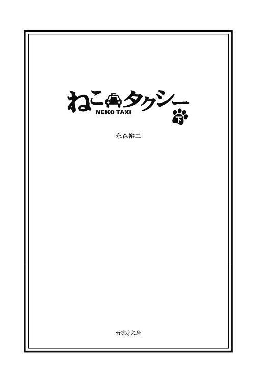
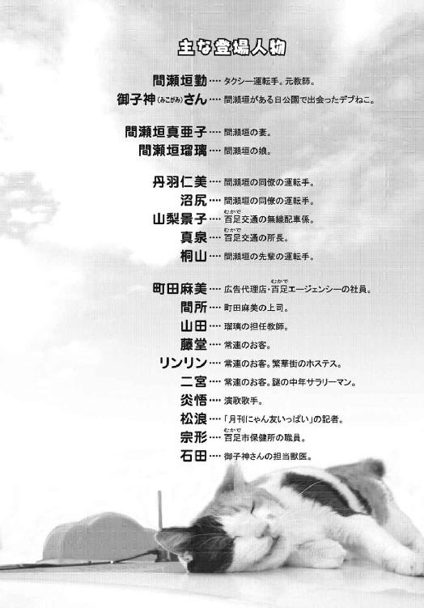
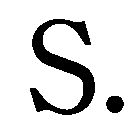

| ねこタクシー ［下］ (竹書房文庫) | |
| 永森裕二 | |
| (2009) | |

この作品は縦書きでレイアウトされています。
また、ご覧になる機種により、表示の差異が認められることがあります。
一部の漢字が簡略字で表示されていることがあります。
(C)永森裕二

ねこタクシー ㊦
昔、俺が教員だった頃、夏休みに悪い遊びを覚えて、二学期になると完全に不良化している生徒がいた。
今の俺は、そのくらいのチェンジング感だ。
先月までの俺はいずこへ。今月は、過去三年間で類を見ないような高成績だった。
見事最下位脱出で、所内第三位の売上だ。
真泉所長のデスクの奥には、全運転手の月度売上の棒グラフが貼られている。いつも谷底のように引っ込んでいた俺の棒グラフがピュンと飛び出た。成績なんて関係ないとずっと思っていたが、こうなると途端に胸が反り返るもんだ。周りの反応も違ってきた。あれほど冷たかった配車係の山梨景子さんが、休憩しているとお菓子をくれた。先輩運転手の桐山さんからは、初めて飲みに誘われた。彼らは一様に、俺に詮索の目を向けてくる。もちろん御子神さんのことを言うわけにはいかない。相番の沼尻も、「やったじゃないすか」と、こっそり褒めてくれた。彼だけが御子神さんのことを知っていて、応援してくれている。
唯一、俺に対して敵意むき出しなのが、所内ただ一人の女運転手、丹羽仁美だ。
常にブービー賞だった丹羽さんは、俺が長いトンネルを抜け出したことによって、ダントツの最下位になってしまった。俺の棒グラフが上がるたびに、丹羽さんの俺を見る目つきが鋭くなっていくのを感じた。半分ヤンキーのようなキャラなので、俺は内心ビクビクしている。以前は同病相憐れむじゃないが、よく喫煙所で話しかけてくれた。ここのところ二人きりになっても一切口をきいてくれない。俺も喋りにくくなってしまっていた。
御子神さんとは、朝、自転車に二人乗りして通勤する。毎朝、相番の沼尻が駐車場隅の、建物から死角になっている位置に車を停めてくれていて、そこでこっそりと御子神さんをトランクに移す。それから出勤の届出をして、喫煙所で一服し、出発。
この受け渡しがずっとうまくいっている。
今日も無事トランクに御子神さんを入れて、出発前の一服をしようと喫煙所にやってきた。
そこに夜勤明けの丹羽さんがいた。
気まずいなと思いつつ、出したタバコを戻すのもどうかと思い、火を点けて座った。
「最近、間瀬垣さんすごいよね」
「あ、そうですか」
「そうですかって......しらじらしい」
ともにいじめられっ子だったのに、ひとりだけいじめっ子グループに寝返ったような感じ。
全然そんなことないのに。
「あんまり沼尻さんの真似とか、良くないと思いますよ」
「え？」
「色々教えてもらったんでしょ。一緒に乗ってるところ見た運転手がいて、ふれまわってますよ」
見られていたのか。
確かに沼尻に同乗してもらい、コーチングを受けた。
その時とったメモは、捨ててしまったのだが。
「無理すると事故ったり体壊したり、ロクなことないから。あ、別に私がビリになったから言ってるわけじゃないですから」
「あ、はい。分かってます」
「私は今のままでいいの。所長には今度は丹羽がブレイクする番だなんて言われたけど、ブレイクって、私ら歌手じゃないっての」
「そうですね」
「私には私のやり方があるし、ポリシーもあるし。マセさんが沼尻さんの真似して稼いだって、ちっとも羨ましいと思わないから」
そうか。羨ましいのか。
こういう生き方も疲れるだろうな。
丹羽さんは言い捨てると、タバコをもみ消して去っていった。
沼尻の真似をしてるわけじゃないのだが、そう誤解されているなら好都合だ。
そういうことにしておこう。
俺は少しでも長く御子神さんとタクシーに乗っていたいだけなんだ。
今、俺にはお得意さんが四人いる。ほぼ毎日乗ってくれる大事なお客様。
みんな御子神さんの大ファンだ。
まず、朝の市民病院で必ず乗ってくれる藤堂さん。頑固な顔をしている割には、日替わりで御子神さんにおやつを買ってきてくれる。
次にここ最近、指名電話をくれるようになったＯＬの町田麻美さん。御子神さんを乗せ始めた時、アレルギー症状が出て病院に急行した、あの女性だ。事件の後、酷使されている会社内で、思い切り盾突いて泣いたらすっきりしたと電話してきた。そしてもう一度、御子神さんに会いたいと言った。彼女は百足市内の広告代理店に勤めていて、一週間に二度程度、仕事利用で乗ってくれる。あれ以来アレルギー症状は出ていない。免疫力って色んな形で発揮されるものだと思った。
そして早朝の、日の出間際に乗ってくれるのが、繁華街のホステスのリンリンさん。
クラブにお勤めのようで、いつも煌びやかな衣装を着ていた。朝方の街で彼女がタクシーを待っていると、早朝出勤のサラリーマンが食い入るように見ている。そのくらいハデで、しかもかなりの美人。リンリンさんは乗っている間ずっと、御子神さん相手に今日相手にした客の愚痴を言い続ける。俺はたまに聞いていて、笑ったり相槌を打ったり。ここで御子神さん相手に吐き出せると、またやる気になるのと彼女は言った。
最後に一日の営業のシメで、このところ乗ってくれるのが謎の中年サラリーマン。二宮さんというその男性は、たまに電話してきては出勤前の三十分程度をタクシー内で御子神さんと過ごす。謎というのは、出勤に利用しているのではなく、最後は自宅に戻ってくれと言うからだ。あまり喜怒哀楽を表に出さないし、口数も少ない。俺もなるべく二宮さんには喋りかけないようにしていた。
だいたい一回の出番は、彼を自宅に送り届ける時間くらいで終了になる。
最近はこのパターンが定着してきており、何が助かるって全員が御子神さんに、おやつや食事をプレゼントしてくれることだ。このところ営業が順調なので、あまり御子神さんと呑気に戯れている時間がない。お得意様がそれぞれ世話してくれるので大助かりだ。
みんなに支えられて、何とか営業できている。
これだけ幸せな時間が続くと、絶対振り子の揺り戻しが来るはずだと思ってしまう。
いつバレるのか。
それを思うと、辛い気分になる。いいことずくめに慣れている人は、それを心から信じて疑う余地を残すことなく、「きれいに喜べる」んだろう。そういう人が羨ましい。抱えた幸福が、いつ破綻するか分からないまま抱きしめ続けることに、俺は耐えられる性格じゃない。随分贅沢な悩みだが。
人って欲張りだな。
藤堂さんの今日のおやつは、「まぐろの生ぶし とろーり満足」。
うまそうだ。腹が鳴る。
「ちゃくちゃく」と、いい音をさせて御子神さんが食べる。それを面白くもなさそうな顔で見ている藤堂さん。でもこれが藤堂さんの可愛がりスタイルなので、内心は、相当とろーり満足なのだろう。
藤堂さんは市の外れにある団地に住んでいた。沼尻から聞いた話では、低所得者や民間賃貸への入居がなかなか難しい高齢者を対象にした公団住宅らしい。藤堂さんは年齢から言って年金受給者だろうから、生活も厳しいだろうに。タクシー利用そのものが贅沢な上、こうして毎日高そうなおやつを買ってきてくれる。ひどく気が引けるが、楽しみにしてくれている時間に水を差すのもどうかと思い、ご厚意に甘えさせていただいていた。
車内に携帯の着信音が鳴り響いた。
藤堂さんが無反応なので俺の携帯かと思ったが、着信していない。
「携帯が鳴っているみたいですが」
「携帯？」
藤堂さんは、少しあわてた様子で上着のポケットをまさぐった。
単調な電子音を発している携帯を握り締めると、眉間に皺を寄せる。
「これ、どうやって出るんだ」
「え？ あ、多分どのボタンでも、押せば出れますよ」
「どれでもいいわけないだろ」
「いや、今そうなってるみたいですから」
「だって切れたらどうするんだ」
そう言われると急に自信がなくなる。
そうこうしているうちに、着信音が切れてしまった。
「すいません。多分大丈夫だったと思うんですが」
「いや、いい。どうせ出る気はなかった」
「あ、そうでしたか」
藤堂さんは思いつめたような表情で窓の外を眺めている。
手は御子神さんを撫でたまま。しばらく沈黙が続いた。
「初めて鳴ったなあ」
聞き逃しそうな小声でポツリと藤堂さんが言った。
リアクションすべきか迷ったが、一応相槌を打った。
「携帯持たれて長いんですか？」
「三年。一切使ってなかったが、ここのところあんたに予約の電話入れるようになって、初めて役に立った。鳴ったのは初めてだ」
「そうでしたか」
「......今頃連絡してきて」
吐き捨てるような口調。何かワケありの人物からだったようだ。
また藤堂さんは考え込むように押し黙った。
車内には、御子神さんの「ちゃくちゃく」という咀嚼音だけがしている。
「息子がね、どこに住んでるんだか、十二年間音信不通でね。ある日この携帯だけが送られてきた」
「息子さんからでしたか。かけ直さなくていいんですか？」
「かけ直そうにも、非通知って出てた。でもこの携帯の番号を知ってるのは息子だけだし、多分あいつなんだろう」
間違い電話かも、と言いかけてやめた。
十二年ぶりの息子さんからの着信。それに異を唱えることはない。
内心嬉しいに決まっている。
藤堂さんはあまり笑ったりしないタイプだし。
「まったく、どこで何やってるんだか......」
「また、かかってくるといいですね」
藤堂さんは、息子さんから贈られた携帯をじっと見つめた。
ストラップが付いている。ネコのフィギュアが揺れていた。
「あ、ストラップ、ネコちゃんですね」
「ああ。これ付いたまま送られてきたんだ」
「藤堂さんがお付けになったんじゃないんですか」
「昔、猫飼っててな。雑種の猫で、死んだ家内が近所からもらってきたんだ。息子が『鈴』って名付けて、可愛がってた」
なるほど、御子神さんに執着するのには理由があったか。
「昔にしては割と長生きしたんだ。七年かな。亡くなった時、息子が随分泣いてな。こんなもの付けて送ってくるところを見ると、いまだに引きずってるのかもしれん」
「そうでしたか」
やがて藤堂さんが住んでいる団地が見えてきた。いつもの場所に停めて、料金を告げた。
お釣りと領収書を受け取った藤堂さんが降りようとした時、御子神さんが開いたドアから外に出てしまった。
「あ、御子神さん。ダメだよ」
俺はあわてて降りて後ろに回り込んだ。こんなことは初めてだ。
御子神さんは藤堂さんの足元でじっと彼のことを見上げている。
藤堂さんが御子神さんを抱き上げる。
「すいません」
「こいつには、分かるのかもな」
「え？」
「鈴もそうだった。人が弱っているのを、猫は分かるんだ」
「そうなんですか？」
「毎日会ってると心が通じる。俺のこと、こいつはお見通しだ」
そうなのか。
だったら俺の薄っぺらな心など、御子神さんはとっくに見透かしているんだろうな。
「引きずっているのは、息子だけじゃないのかもしれん」
そう言って藤堂さんは御子神さんを俺に渡した。
少し寂しそうに笑うと、そのまま団地の階段を上っていった。
朝の団地は幼児たちが小公園で遊ぶ声に満ちていて、それが一層、藤堂さんの後ろ姿を寂しく感じさせた。
息子に持たされた携帯。それが残された肉親との唯一の絆。とても頼りなく、今にもプツンと切れてしまいそうな、はかない繋がり。その絆がさっき初めて「生きていた」と分かった。きっと御子神さんを可愛がってくれるのは、息子さんからの携帯に、猫のストラップが付いていたからなんだろう。
御子神さんを助手席に乗せ直すと、俺は藤堂さんの団地を後にした。
いつも指定されている交差点で、迎車表示のまま待っていた。
夜十時。町田麻美さんは、だいたい会社帰りに飲んだりすると、電話をくれる。
常連の居酒屋から最寄の交差点。駅までは歩いて二十分くらいの距離で、酔った後歩くには少し遠い。
彼女と最初に会った時は激務真っ只中で、それこそ鬼の形相で携帯にかじり付いていた。最近はいつも飲んだ後ということもあり、本当に明るく、大きな声でよく笑う。彼女の勤め先は広告代理店のムカデエージェンシーという会社で、クライアントとの飲み会が多く、一週間に二回は御用命がある。
俺は御子神さんをブラッシングしながら待っていた。とにかく抜け毛が多い。最近ヒマさえあれば御子神さんの毛繕いをしている。聞いたこともない海外メーカー「ギャリソン」の空気清浄機が抜群の働きをしてくれており、車内のニオイは完璧に近く脱臭された。だが抜け毛だけは手作業で始末するしかなく、せっせと粘着コロコロを転がす。最初ここまでひどい抜け毛は、ストレスが原因なのではないかと思った。土管公園でのんびり過ごしていたのに、毎日入れ替わり立ち替わり色んな人に触られて、精神的にまいっているんではないかと。
かかりつけの動物病院では、「これが普通ですから」と平然と言われた。内臓も健康そのものだし、皮膚病もないし、心肺機能も健常だと。獣医さんいわく、
「頑張って抜け毛は掃除してください」
ストレスを感じていたわけではないようなのでほっとした。だが、狭い車内で体をよじりながらコロコロをかけている姿は、外から見ると異様だ。路駐してやっていると、道行く人に変な目で見られる。この複雑な事情を察してもらうのは不可能なわけで、こればっかりは自分が蒔いた種だと思ってあきらめている。
車内清掃を終え一服していると、ネオンちらつく雑居ビル群から町田さんが現れた。同僚らしき女性と一緒だ。二人ともかなり飲んでいるようで足取りが覚束ない。俺を見つけると大っぴらに手を振ってきた。なぜか一緒にいる知らない女性も手を振ってくる。何だかよく分からないが、俺も小さく手を振り返した。
「ほらほら、猫ちゃんいるでしょ」
「ホントだ。大きい！」
「御子神さんっていうの。運転手さん紹介します。私の上司の間所さんです」
「間所です。今日はついてきちゃいました」
「どうぞどうぞ」
俺は挨拶をして迎車表示を切り替えた。
間所さん？ あ、そう言えば、町田さんが倒れた時、俺が代わりに会社に電話を入れた上司が、確か間所さんとかいわなかったっけ。
「あの、間所さんというと」
「そうなの。あの時、私をキーキー怒っていた上司」
「人聞き悪いこと言わないでよ」
「キーキーしてましたよ。間所さんはキーキーおばさんって呼ばれてたんですから」
「え、嘘？」
「私の脳内だけですけど」
「やめてよもう」
何があったのか、すっかり仲良くなっているようだ。
あの後上司に盾突いて、泣いたらスッキリしたと言っていたな。
「じゃあ私、一度お電話でお話ししてますよね」
「その節は失礼しました」
「いえいえ、こちらこそ」
アレルギーで町田さんが倒れたと告げた時、「まったく使えない子」と言い捨てられたのを思い出した。
忙しすぎるというのは罪だ。こんなにいい笑顔で笑う人とは到底思えなかった。
忙殺というのは、人の中の「いい部分」を殺されるという意味なのか。
酔いも手伝って、町田さんと間所さんはほとんど奪い合うように御子神さんを抱き合っていた。御子神さんは嫌がる様子もなく、いつものように、ただされるがままになっている。まったくもって、人見知りしない。
獣医さんにも似たようなことを言われた。御子神さん的な猫はそんなにいるもんじゃないと。
猫は基本、もっと気ままで好き嫌いがはっきりしていて、懐かない人にはテコでも動かない。狩猟動物なので、敵と見るや、すぐに牙をむく。無理をさせると、すぐに体を壊す。御子神さんみたいな猫は貴重ですよと言われた。
最近「職業柄」、猫の本をよく読んでいる。瑠璃から借りた飼育書を皮切りに、猫の図鑑や生態に関する本、果ては猫にまつわるトリビア本まで。
これが読み始めると止まらない。朝方帰宅して夜食を食べている最中に熟読してしまう。寝るのを忘れることさえある。こんなに本を読むのは教員試験を受けた時以来かもしれない。
読んだ本の中にこんな言葉があった。
「拒絶の真の意味を理解しようとするなら、まず、猫に無視されてみることだ」
古代ヨーロッパだかに、そういう格言があったそうだ。
一度ダメなら、とことんダメ。
それが、世の猫の性格の本質なのだろう。
御子神さんは、選ばれた猫。
選ばれた猫を選んだのが俺というのは、果たして御子神さんにとってラッキーだったのだろうか。「よりによってお前かい」とツッコみたいかもしれない。
「運転手さん、この子何歳なんですか？」
間所さんから質問された。
「正確にはわからないですが、十歳前後らしいです」
「十歳って、人間で言うと？」
「還暦近いみたいですね」
えー、見えない。と二人同時に絶叫した。
見えないとは？ 若いってこと？
「じゃあ、人間の六倍ってこと？」
「いや、成人までが早くて、一歳半でだいたい人間の成人らしいです。その後は約四倍程度の換算だそうです」
俺は仕入れたてのトリビアを披露した。
「すごい。さすがよくご存じですね」
「ねえねえ、もっと教えて」
その後、酔ったＯＬ二人に、調子に乗ってトリビアを喋りまくった。
猫は生後六ヵ月前後で乳歯から永久歯に生え変わる。
猫の睡眠時間は一日十四～二十時間。
夜間、猫は人の六倍良く見ることができる。
猫の平均体温は三十八・六度。
猫が全速力で走ると、時速五十キロ。
猫は自分の背丈の約七倍ジャンプできる。
等々......。
最初は興味を持って聞いてくれていたが、途中で熱が冷めたのか、急にリアクションが薄くなった。
しまった。また調子に乗ってしまった。
「私、こんなの作ったんですよ」
町田さんに名刺を渡された。そこには、
「日本発！ ねこタクシー 癒しのひと時を！」と書かれており、
俺の携帯番号等が添えられていた。
「これ......」
「もっと宣伝したほうがいいですよ。会社の子に話したら、みんなすごい興味津々で。絶対ウケるよそれって。間所先輩なんて大の猫好きだから」
「町田さんに聞いた瞬間から、乗りたいって思いましたもん」
そんなに食いつきいいのか？
しかし、こんな名刺まで作って。
ありがたいというか、ありがた迷惑というか。
「その名刺、会社でみんなに配ってるんですよ。よかったら量産して運転手さんにあげますよ」
「そんな、いいですよ。お金もかかるんでしょ」
「全然。家のパソコンでプリントしてるだけだし。今度持ってきますね」
「しかし......」
「応援させてくださいよ」
まいったな。喜んでくれているのは嬉しいが、妙な噂にならないといいが。
「そういえば、部長の件どうした？」
「ああ、もうサイアクですよ」
何やら二人のトーンが変わった。
「今度やったら没収するって。小学生じゃないんだから」
「まあ、総務だからね。分かるは、分かるけど」
「どうかしたんですか？」
何か、俺のタクシーに関係してそうだ。
「この名刺みんなに配ってて、それがうちの総務部長の耳に入ったんですよ。これが物凄く頭の固いおっさんで、経費削減でタクシー移動を控えている時に何をするのかって」
「ははあ」
「今度やったら名刺没収だって。バカみたい」
「あの人いつも七時とかに出社するんだって。だから総務の女の子たちも気を遣って、同じ時間に出勤してるらしいわよ」
「マジですか？」
「楽しみが何もないのよ。だから早くから会社来て。総務なんて大した仕事ないのに」
「本当ですよね」
少し前の俺みたいな人だなと思った。
やることがないので、人生の時間をどう埋めるかだけ考えている。
俺も人生の残りは、消化時間だと思っていた。何だかシンパシーを感じる。
「このタクシーって、猫カフェみたいなもんですよね？」
「猫カフェ？」
「猫がカフェに何匹かいて、お客さんはその猫と遊びながらお茶するの」
「猫カフェの移動版ですね」
ドッグカフェというのは聞いたことがあったが。あれは確か愛犬を連れて入っていい喫茶店というだけだったな。
「今度は猫カフェっぽいサービス始めるといいですよ」
「え？ カフェですか」
「何か企画考えていいですか？」
「はあ、まあ」
能動的だ。これが広告代理店魂なのか。一銭にもならんのだが......。まあ企画力というものにはまったく無縁の俺にとっては、ありがたい話だ。
その後も、二人はワーキャー言いながら御子神さんと戯れ続けた。
真夜中に俺と御子神さんは夜食を食べていた。最近よく喋るようになったからか、夜の二時過ぎに腹が鳴る。御子神さんは、この時間帯は主に寝ているのだが、二時くらいになるとのそのそと起き上がってエサをねだる。それが合図で、俺は深夜営業しているファーストフード店かコンビニを探して入る。今日は、よく行く立ち食いソバ屋さんが定休日だったので、コンビニの駐車場でおにぎりを食べていた。
御子神さんにはダイエット猫缶「マグロック・アルファ」を一缶だけ。深夜に食いすぎは良くないので、お代わりを欲しがるが無視している。獣医さんにも食事制限をきつく言われている。お客さんが買ってくるエサやおやつは拒否できないので、俺が色々メニューを考えなくてはならない。だがこの時間は、俺だけ食べて御子神さんにひもじい思いをさせるのはさすがに気が引けた。基本聞き分けのいい御子神さんだが、この深夜の空腹だけは我慢ならないようで、珍しく食い下がる。
「もうダメだよ。御子神さんのためだから」
そうキツく言っても、「にゃおん」とおねだり声をやめない。一缶食べてるのに。かえって呼び水になるのか。しばらくにらめっこして、心が折れそうになるのをぐっとこらえて睨みつけていると、あきらめたようにふて寝する。「食えないなら寝るわ」って感じ。
寝てくれると俺もほっとする。その攻防がいつも午前二時に行われる。今日も一缶だけ食べた御子神さんは、瞬時にイビキをかいて寝始めた。なんとまあ寝つきのいい。俺は御子神さんのイビキをＢＧＭに、少しだけ仮眠を取った。
リンリンさんの店は百足市繁華街のど真ん中にある。
相変わらずハデな格好でリンリンさんが朝の街に立っていた。俺のタクシーを見つけて手を挙げる。なんとも朝の風景に似つかわしくない女性だ。
「遅いじゃない。待っちゃったわよ」
「すいませんでした」
最初は不機嫌に乗ってきたが、御子神さんが歩み寄ると、いつものように黄色い声を上げて抱きついた。
「御自宅でよろしいですか」
「ええ。お願い」
リンリンさんの家は、二つ隣の霧生市にあった。デザイナーズマンションというのだろうか、立派な高層マンションだ。四十分くらいの帰り道をリンリンさんは御子神さんと遊び、そしてたいがい後半は眠ってしまう。一晩中の仕事でクタクタなのだろう、それにホステスさんなんて酒を飲んでも酔ってはいけないだろうし、キツイ仕事だなと思う。
同じ若い女性客でも、町田さんたちとでは車内の空気が色んな意味で一変する。変わらないのは御子神さんだけだ。
「コート、助手席で預かってもらえる？ この前、家帰ってみたら毛だらけだったから」
「それは、失礼しました」
「いーのよ。私が御子神さんを構いすぎなんだから」
そう言って、コートを脱いで俺に手渡してきた。
うわっと思った。思った以上にコートの中身が刺激的だ。
胸元が大きく開いたノースリーブのロングドレス。全身スパンコール。
あんたシャンソン歌手かよというくらいのデザイン。
肌露出しすぎだし。基本そっち方面まったく苦手の俺は思わず目をそむけてしまった。
俺は、気合の入った女性全般に弱い。しかも堂々と女性を売りにしている、その自信が眩しすぎる。
御子神さんもその姿に「みゃあ」と反応した。
スパンコールがキラキラしてるからか、ドレスに興味を示している。
「あら御子神さん、私に興味持ってくれた？」
「綺麗だから驚いてるんですよ」
露出度満点のリンリンさんは御子神さんをその豊満な胸に抱きしめた。
御子神さんがムギューとなっている。
普通の男は、御子神さんと代わりたいとか思うんだろうが、どうも俺にはその辺の脳内積極性が失われているようだ。
嫌いではないんだが。
いつの間にか色んなことに不感症になっている。
リンリンさんは、ひとしきり店の愚痴を御子神さんに話すと静かになった。いつものように寝たかと思ったが、何やら携帯をいじっている。
様子が少し変だなと思った。目が真剣だ。
そのうちため息をついて携帯を閉じた。
「運転手さんていくつ？」
「はい？ 四十八になります」
「そう。意外と若いのね。ねえ、私が自分の子供だったらどう？」
「え？ どういうことですか？」
「例えばよ」
リンリンさんは、二十代半ばくらいか。そんな娘がいてもまあ不思議ではないが......。
「とてもお綺麗だし、自慢の娘ってことになるんじゃないですか」
それを聞いた途端、リンリンさんは爆笑した。
「無理しちゃって」
「全然無理してませんが」
無理はしていた。
瑠璃が十年後こうなっていたら、さすがに少し心配になる。
「自慢の娘か......」
「ええ。御子神さんもリンリンさんに懐いてますし、あなたきっといい人ですよ」
軽口をたたけるようになっている。俺も進歩したな。
しかしリンリンさんは、また真顔に戻ってしまった。
「いい人じゃないのよ。それどころか、サイテー」
「そんな」
「私のことどう思ってた？ ハデで愚痴っぽくて頭の悪い女って思ってた？」
「ハデとは思ってましたが、愚痴っぽいとかは思ってないです」
「じゃあ他はどう思ってた？」
カラむね、やけに。
何て答えたら正解なんだ。
「大変なお仕事をされてて、女性なのに頑張ってるなと思ってました」
その途端、またリンリンさんが爆笑した。
何なんだよ一体。
「運転手さん、あのね」
「はい？」
「私、男なのよ」
「......は？」
「オトコ」
「冗談ですよね」
「残念だけど、冗談じゃないのよね」
言葉に詰まった。
え？ 男？ リンリンさんが？
どっからどう見ても女じゃん。胸もあるし。足細いし。
今日一番の驚きだ。
俺はミラーでまじまじと見た。
「もう、そんなにジロジロ」
「す、すいません。驚いちゃって」
「でも嬉しい。女扱いされて」
「あの、ニューハーフってことですか？」
「そうよ。本名は武彦っていうの。免許証見る？」
「いや。結構です」
ということは、お勤めはオカマバーか。
なんとも夜の街というのは奥が深い。
リンリンさんは、からかうように笑うと、また黙り込んだ。
酔っているようにも見えないし。こういう人にはこういう人の悩みがあるんだろう。ホルモンのバランスとか大変だとか聞いたことがある。
「親に言ってないの。私がこうなってること」
「ははあ」
「そろそろ言わなきゃいけないと思ってるんだけど。なかなか勇気なくて」
「御両親は遠方ですか？」
「目と鼻の先。でも、会えない」
「そうですか」
リンリンさんは黙って御子神さんを見ていた。
重たい告白すぎて、俺は何のアドバイスもできなかった。
無言のまま車は走り、リンリンさんの高層マンションに到着した。
「ありがとね。愚痴聞いてくれて」
「とんでもない」
「御子神さん、またね」
明るく笑ってコートを受け取るリンリンさんは、女性そのものだった。
リンリンさんが降りてから、忘れ物に気づいた。彼女の携帯。
俺は拾って車外へ出た。
「携帯お忘れです」
「あら、やだ。すいません」
手渡しながら、おやと思った。
リンリンさんの携帯に付いているストラップ。
それにはネコのフィギュアが付いていた。
それは間違いなく、昨日の朝乗せた、藤堂さんと同じものだ。
「そのストラップ......」
「え？」
「いや......」
そうか。リンリン。
藤堂さんの飼っていた猫は「鈴」だった。
ということは、リンリンさんは藤堂さんの......。
「それじゃあ、また電話しますね」
行こうとするリンリンさんに思わず声をかけた。
「あの、ぜひお父さんに連絡してあげてください」
「え？」
「きっと、待ってると思いますから」
「......そうね。ありがとう」
薄く笑って、リンリンさんはマンションへ消えていった。
「......こんなことがあるんだな」
俺は御子神さんにそっと言った。しばらく呆然とその場に立ち尽くし、それから今日最後の予約客を迎えに出た。
謎のサラリーマン二宮さんは、必ず午前六時に家の前で待っていた。
百足市の隣の町の外れにある建売住宅群の中に二宮さんの家はあった。最近できた真新しい家々は、判で押したかのように同じ佇まいで並んでいる。余りにも同じ風景が続くので、何回来ても正確な場所を覚えられない。二宮さんが立っていてくれなかったら何度も素通りするだろう。
「おはようございます」
丁寧に挨拶して乗ってくる二宮さん。いつもパリッとしたスーツを着て、紳士服のＣＭのような風体だ。チラッと車内を覗き、御子神さんに微笑みかけると、おもむろにその上着を脱ぎ始める。いつもこうだ。スーツに毛が付くのを予防するためだ。スラックスのほうは、ブランケットを持参して、膝掛けにする。
毎度きちんとしていて感心する。
「また、この辺ぐるぐるお願いします」
「分かりました」
二宮さんには目的地はない。朝のひと時、御子神さんとのフリータイムを三十分取っているだけだ。きっと二宮さんの一日は、すばらしく正確なタイムスケジュールが組まれているのだろう。
しかし朝のこんな早い時間に完璧に用意して、猫と戯れてから出勤というのは......この人にも色々事情があるんだろうなと思ってしまう。
二宮さんは、実に静かに御子神さんと遊ぶ。
御子神さんも二宮さんには、ほっとするようだ。いつもは身を任せるだけの御子神さんが自分から絡んでいく。抱きついたり、ナメナメしたり。むしろ二宮さんのほうがなされるがままだ。
「変な奴だと思ってるでしょ」
「はい？」
ミラーを覗くと二宮さんが笑ってこっちを見ていた。
「毎朝猫と遊ぶためにタクシーに乗る。しかもこんな早朝に。何をやってる奴なんだろうって思ってますよね？」
「いえそんなことは」
「思ってませんでした？」
「は......いえ、少しだけ」
少し声を出して二宮さんは笑った。
「そりゃそうですよ。どう考えても異常だ。こんな朝早くからタクシー呼んで。それも明らかに猫と遊ぶためだけときてる。よく何も聞かないでいられるなと思ってました」
「聞いては失礼かと思いまして」
「聞いてくれたほうがスッキリしますよ。つい自分から口火を切ってしまった」
「それは、気づきませんで」
「と言って、特に理由があるわけじゃないんですが。あえて言えば余暇ですか。私に足りないものは余暇なんだって常々思ってました」
「はい」
「余暇を過ごそうと思いました。でもなかなかないもんです、最適な余暇って。仕事も家庭も趣味も、どこか一生懸命になってて、気を抜く暇がない。そういう性格なんです。きちんと息抜きできる何かを見つけないと、いつか全部破綻すると思ってました」
「そんな」
「猫がいるタクシーがあるって聞きましてね。それだと思った。子供の頃、猫を飼ってました。その時は、いつもいる空気みたいな存在でしたが、大人になって家庭を持って、ずっと何か足りないと思ってました」
「それが、猫？」
「そう言うと大げさですけど」
「いえいえ」
「息が抜けるんです、こうしていると。こんなの初めてだ。はたから見ると病んでるように見えるのかもしれないけど」
「そんなことはないです」
「いや、十分病んでるとは思います。私にとっての唯一の余暇が、タクシーで猫遊びなんですから。でも、ここでの三十分が、恥ずかしい言い方しますが、今の私の支えなんです」
そこまで言うか。
すげえな御子神さん。
「あの差し出がましいことを聞いても......」
「どうぞ。さっきも言いましたが聞いてくれたほうが楽です」
「はい。ご家庭で猫を飼われてはいかがですか？」
「普通はそう考えますよね」
「立派なお住まいですし、ペット不可ではないと思いまして」
「はい。ペットは不可ではありません」
「毎日乗っていただいていて、こんなこと言うのは失礼なんですが」
「いえ、いいですよ」
「生きる支えになるほどのことなら、むしろもっと密接に関わられたほうがいいのかなと思いまして」
「そうですね」
「すいません。差し出がましく」
「いえ」
ちょっと言いすぎたか。二宮さんが黙った。
困っているというのではなく、何て説明しようか考えている感じ。
「......家内がね、犬を飼ってるんです」
「あ、そうなんですか」
「結婚して十二年経ちますが、その間四匹飼いました。これがとにかく私に懐かない。四匹が四匹とも、完全に私を無視です。家内は私が優しくないからだと言いますが、もっと根本的な問題だと思ってます」
「と、言いますと？」
「私、犬が嫌いなんです。このタクシーに乗って初めて気づきました。どこかで犬を敬遠している。それを察知して歴代の犬たちは私に寄り付かなかったんだと思います」
「犬派じゃなくて、猫派ってことですか？」
「簡単に言えばそういうことです。同じ動物なのにヘンなものです。人の好みなんてその時々で変わったり、簡単に克服できるものだと思ってましたが、今はっきり分かるんです。家庭に犬がいることが私にとってストレスだったんだって」
「そうでしたか」
「ちょっと愕然としましてね。おそらく私がそうであるように、妻にとっては逆に猫はストレスになると思いまして」
「それで飼えないんですね」
「そういうことです」
何となく分かるが、犬と猫でどっちがいいかなんて考えたこともなかった。猫派かと聞かれると、どうだろうか、そんなに歴史上、犬より猫を特にかわいいと思ってきたわけではないし。
あえて言えば御子神派か。
なんか政治家の派閥みたいだな。
いつもの通り三十分走ったところで、二宮さんの家に戻ってきた。
普段はここで降りて、二宮さんはわざわざ駅まで歩いて出勤している。
車を停めて、メーターを操作しようとした時、二宮さんが言った。
「今日は、会社まで行ってもらえますか」
「え、いいんですか？」
「いつもはタクシー通勤なんてとんでもないと思ってましたけど、今日話して、何かつまらないこだわりに思えてきました」
二宮さんの膝で眠ってしまった御子神さんが「ぐう」と返事のようなイビキをかいた。
「少しペースを狂わせてみたくなったんです。このまま会社までお願いします」
「かしこまりました」
二宮さんが指定した場所は百足市の中心街だった。
俺はそこから三十分かけて、その場所まで運転した。
二宮さんはその間ずっと黙ったままで、眠っている御子神さんを愛おしそうに撫でていた。
「あ、そこのビルです。停めてもらえますか」
「はい」
路肩に停車してビルを見た。
あれ。ここは......。
「ご存じですよね？」
二宮さんが苦笑いを浮かべていた。
ビルの看板には「総合広告代理店 ムカデエージェンシー」と書かれていた。
これ、町田さんの会社じゃないか。
ということは、この人が俺のタクシーを知ったのは、例の町田さんの名刺だったか。
「はい。ここには初めて来ましたが、よくお世話になっている方の会社です」
「私のことは黙っておいてください。私があなたのタクシーに夢中というのは、さすがにバツが悪い」
「そうなんですか？」
「私、総務部におりましてね。立場上コスト削減の急先鋒と思われてます。先日もこのタクシーの名刺を配っている彼女を注意したばかりでして」
この人だったか。
鬼の総務部長。
「もちろん会社の経費じゃなく自腹で乗ってるんで、後ろ指さされることはないんですが、あれだけ叱っておきながら、実は興味津々だったというのは、少々バツが悪い」
「分かります。大丈夫です。絶対に言いませんから」
「よろしくお願いします」
それから二宮総務部長は脱いでいた上着を着て、掛けていたブランケットを鞄にしまった。
「じゃあ、行ってきます」
「行ってらっしゃい」
ペースを狂わせてみたい、か。
俺もそうだったのかもしれない。
人は良くも悪くも、今の生活をどこか変えたいと思っている。同じ所にずっと留まっていることがストレスになる。人から見たら羨ましい生活をしている人も、それなりの苦痛を腹に抱えて生きている。
図らずも俺の常連様は、色んな意味で繋がっていた。
立ち入ってはいけないけれど、何か後押しをしてあげたくなった。
御子神さんが招いた、人の繋がり。
俺はその繋がりの中で、みんながほっとできる時間を作れていることに感謝した。
ただの偶然かもしれないが、人と人は、どこかで少しずつ繋がっている。
俺は人と繋がることを恐れて生きてきた。
なるべく関わりがないように気配を消して、じっとして。
でもそんな俺でも、関わっている人が実は大勢いたんだということを思い知った。
御子神さんにまた教わった。
人は一人じゃないんだ。
御子神さんは、朝日が差し込む助手席を避けて、
運転席の日陰の部分で丸くなっていた。
家族揃っての買い物など、何年ぶりだろう。
俺は前の晩から目が冴えて、遠足前日の子供のように一晩中寝返りを打っていた。
昨晩の食卓で、瑠璃が提案したのが始まりだった。
「明日みんなで御子神さんのグッズ買いに行こうよ」
意表を突かれた俺と真亜子は、少しポカーンとした。
「みんな」とは当然三人でということだろう。普通の家では普通なのかもしれないが、我が家にとっては、ほぼ有り得なかった提案。リアクションに困った。
「そうだな」と普通に返すのも愛がないし、「よし！ 行こう！」と鼻息荒く、やる気満々な感じも引かれるだろう。
「そうね。バラバラ買ってるより経済的だし」
真亜子がサクッと言った。
ないのかよ、もっとこう、家族の連帯感の高まり的なもの。
真亜子にリアクションを任せておいて、俺はただ頷くだけだった。
瑠璃は事前に買い物メモを作っており、最新の猫グッズを調べ上げていた。こんなものあるんだと感心するアイテムばかり。中には高価な物もあり、真亜子が却下したりした。それに対して「絶対あったら便利だよ」などと瑠璃が反駁したり。
なんだかこんな感じ、こそばゆい。まるで明るい食卓じゃないか。
俺は「うん」とか「そう」とか以外発言なしだったが、一つのことを家族全員が頭を使ったりしているのを見るのは、いいもんだ。
ショッピングモールも調べ済みで、明日は朝から御子神さんも連れて行くことになった。
寝室で布団に入った真亜子が「何着て行こうかしら」とポツリと言った。
「何って、いつものでいいんじゃないの」
「だって仕事着だと変だし、近くなら部屋着でいいけど。あんまり余所行きでも大げさだし」
「普通でいいだろ」
「あなた何着ていく気？」
「え、いつもの」
「いつものって？」
「カーディガンとかあるだろ」
「ダメよあんな病院着ていく奴。去年買ったのあったでしょ、あれどこいったかな」
急に起き上がって電気をつけた。
クローゼットを開けてハンガーを引っ掻き回し始める。
「明日でいいんじゃない？」
「気になっちゃったから」
自分の分と俺の分を見立てて、鏡台であてて見たりしている。
そこそこ納得がいったところで、やっと布団に戻った。
真亜子も相当気合が入ってるんだな。
そう思ったら一気に眠れなくなった。
やはり父親なんだからイニシアチブとか取ったほうがいいんだろうか。そういうの苦手なんだが。たかが猫グッズを買いにショッピングモールに行くくらいの企画で、思いっきり浮き足立っている。
くよくよ考え、最後は「大丈夫、御子神さんがいる」と思ったら、眠れた。
すでに外は明るくなっていた。
寝不足の朝、一気に覚醒する事件が起きた。
朝刊を取りに行った真亜子が郵便受けにこんなものが入っていたと持ってきたビラ。
このマンションの管理組合が作って、全家庭に配布しているようだ。
「最近当マンションで動物を飼っているご家庭があるという匿名の通報がありました。当マンションはペット飼育禁止の物件であり、心当たりのあるご家庭は即刻善処をお願いいたします。万が一発覚した場合は、退室していただく可能性がありますので、よろしくお願いします。」
要約すると、そんなような文言だった。
さあ仕度して行くぞというタイミングだっただけに、出鼻をくじかれた。
家族三人黙ってしまった。
「どうしよう」
御子神さんを連れてきて、全責任を持つと宣言していた俺から、最初に漏れた言葉がそれだった。
「何でバレたんだろう。空き缶とかも、わざわざコンビニまで捨てに行ってるのに」
瑠璃が当惑気味に言った。
「......こうなった以上、仕方ないわね」
真亜子がこういう言い方をした時、既に答えが出ている時だ。
「責任が持てないことをすると、こういうことになるのよ」
ぐうの音も出ない。
出ないが、しかし......。
「ウチのことじゃないかもしれないでしょ」
瑠璃が真亜子の気持ちを収めようと、矛先を変えようとした。
「じゃあ、どこのことよ？」
「どっか、他に犬とか飼ってる家があって」
「そんな家あるの？」
「知らないけど、ウチはどこにも迷惑かけてないって」
「ここには迷惑がかかっていますとは書いてないわ。単に飼っている人がいるので、違反だから善処してくれと書いてあるだけ」
「善処って何よ」
「そりゃあ......」
「捨ててこいってこと？」
「保健所に預けるとか」
「母さん知ってる？ 保健所に連れてった猫がどうなるのか」
だんだんエキサイトしてきた。
俺が持ち込んだことで、母娘がケンカするのは見ていられない。
「年間二十五万匹の猫が殺処分されるんですって。それでも善処だって、マンションのルールだからって放り出せるの？」
瑠璃のほうが、俺より余程覚悟していた。
そんなことも知らずに俺は......。
「私にはできない。きっかけは父さんだったかもしれないけど。御子神さんをそんな目に遭わすくらいなら、ここを追い出されたほうがマシ」
「......分かったわよ」
これ以上何を言っても火に油を注ぐだけと判断してか、真亜子は一旦折れた。
しかし真亜子の性格からいって、ルールを破るとか、後ろめたいことをしてるなど、我慢ならないはずだ。今までは何とか誤魔化しながらやってきたが、こんなビラが配られても平気でいられるほど、いい加減じゃない。だが、瑠璃がここまで御子神さんに執着しており、しかもここ最近、瑠璃の成績が上がっていることを考えると、そう簡単に御子神さんを放り出せないだろう。
さらに言えば、真亜子自身も本当は御子神さんが好きなのだ。
かつて飼っていた犬「ツトム」の死をまだ受け入れられない真亜子は、御子神さんを素直に迎え入れられないだけだ。
それにしても、殺処分か。効いただろうな、今の瑠璃の話は。
「と、とにかく、買い物に行こうよ」
何か言わなくてはと思い、二人を誘った。
さっきまで俺たちは、一つになれていたはずなんだから。
「......そうね。用意しましょう」
真亜子がそう言うと、瑠璃と真亜子はそれぞれの部屋へ着替えに行った。
俺はボケーッ寝ている御子神さんを持ち上げ、瑠璃が買ってきた持ち運び用のバッグに入れた。
慎重には慎重を期して、外出準備をした。
まず瑠璃がエレベーターを呼んでおいて、誰も来ないことを確認してから俺たちを呼んだ。俺はすぐさま御子神バッグを抱えて走っていく。真亜子が部屋に鍵をして後に続く。途中でエレベーター内に誰かが乗ってきたらマズイので、俺は後ろ向きでコーナーに寄り、それを真亜子と瑠璃がガード。一階に着いたら、俺だけダッシュで一ブロック先まで裏道を走る。二人とはその先で合流。それでやっと、家族揃って駅へと向かった。
変な緊迫感とチームワークのおかげで、さっきまで険悪だった雰囲気は少しやわらいだ。とりあえず良しとしよう。
ペットショップはショッピングモールの一階にあって、広々としたスペースだった。下調べ済みの瑠璃がぐいぐい引っ張る感じで進んでいく。道中こそ普通の感じに戻った真亜子だったが、ペットショップに着くと口数がガクンと減った。やっぱりビラのことが気になっているようだ。
瑠璃は店員を捕まえて、あれこれ聞き出している。明るい女性店員で、いかにも動物大好きって感じ。瑠璃とも話が合うようだ。俺は御子神さんのバッグを持って、ペットケージの辺りをフラフラしていた。
子犬や子猫がカプセルホテルのようなガラスケースの中でぐったり寝てたり、執拗にオモチャやクッションに噛み付いたりしている。ギャラリーは一様に声を上げ、子供はガラスをバンバン叩いて、「こっち来い」と叫び、カップルは金のかからない鑑賞物を独占して動かない。ストレス溜まるだろうなと思う。完全に見世物だもんな。彼らは商品だから仕方ないけど。なんとなくジロジロ見るのが気の毒に思えて、俺は熱帯魚のコーナーへ向かった。
熱帯魚というのは種類が色々あるもんだ。水槽に水草や流木やオブジェなんて散らしちゃって。これはアートだな。水モノだから手入れとか大変なんだろう。
バッグの中の御子神さんが「みゃあ」と鳴いた。腹減ったか？ バッグの口を少し開けると、ぴょこんと顔だけ出してきた。
じっと熱帯魚を見ている。
「エサじゃないよ御子神さん」
じいいっと見るその目は、エサを見るそれとは違い、好奇心の目だった。ちょっと上目遣いになるから分かる。
御子神さんは基本仏頂面なのだが、よく見ていると表情に微妙に違いがある。腹が減った時、気持ちいい時、飽きた時、眠い時、興味がある時等々。まだ付き合って短いが一日中一緒にいるので、表情や鳴き声でなんとなくリクエストが分かるようになってきた。
御子神さんはネオンテトラの青い光を目で追いながら、
「まあ」と鳴いた。
訳すと「ヘンなの」って感じか。勝手な翻訳だが。
面白いので御子神さんに色んな熱帯魚や金魚を見せて回った。いちいち反応する。基本「まあ」なのだが、黒いデメキンの前に来た時だけ「ぷんっ」と鼻息を荒らげた。お気に召さないようだ。ちょっと地味か。
そういえば御子神さんはハデなものに反応する。リンリンさんのドレスのスパンコールに異常反応していたし。黒デメに「ぷんっ」を繰り返すので、ひと際華やかなエンゼルフィッシュの前に連れてきた。
「ゴールデンダイヤモンドエンゼル」というその魚は、全身に宝石を纏ったような、超セレブな魚。
「まあ」「まあ」を連発する御子神さん。
お気に召しましたか。
エンゼルフィッシュの水槽の端にあるイスに、真亜子が腰掛けていた。
「見て。ハデな魚だと『まあ』って言うんだよ」
「......そう」
興味なさげに真亜子は視線を逸らした。
気が乗らないという域を越えて、不愉快極まりないといった御様子。まいった。真亜子は一度決めたことは、余程の状況変化がない限り覆さない。
さっきは瑠璃の剣幕に一度引いたが、この一時間くらいの間に考えをまとめ、気持ちを整理し、完璧な論理を完成させたようだ。
こうなると、どうしようもないよこれ。
「ちょっと疲れた？」
「少しだけ偏頭痛」
「先に帰っててもいいよ」
「瑠璃と二人で大丈夫なの？」
「大丈夫だよ。御子神さんもいるし」
御子神さんというワードに真亜子は反応し、黙った。
こめかみの辺りを押さえ、目を閉じた。本当に辛そうだ。
「変わったわよね、私たち」
「え？」
「その子来てから、家族変わったと思わない？」
「そうだね」
「いいことだとは思うけど」
「明るくなったよ」
「いいことずくめってわけにはいかないってことね。その子にも縁があったわけだし、家族にいい刺激くれたし、このままでいたいけど。でも、ちゃんとしてあげなくちゃね」
おそらく真亜子は、御子神さんの貰い手を探そうとしている。
保健所では殺処分。だったら色んな手を尽くして誰か可愛がってくれる人に譲ろうと考えている。だが、それなら俺にはいくらかアテがある。御子神さんを心の底から愛してくれているお得意さんたち。譲るのなら、彼らに話してみてもいい。
しかし......。
それではダメなんだ。
「俺、考えるよ」
「何を？」
「何か手があるはずだよ。瑠璃も応援してくれてるし、今の形じゃない飼い方があるはずだよ」
「どんな形よ？」
「それは......これから」
「無理よ。そんな簡単な問題じゃないわ」
またピシャリと言われた。
しかしここで引き下がるわけにはいかない。
俺も何かピシャリと......。
「あ、こんな所にいたんだ。ちょっと御子神さん貸して」
瑠璃が走ってきた。御子神さんのバッグを受け取ると、顔だけ出した御子神さんを笑顔で撫でた。
「かわいい猫用の帽子があるの。絶対御子神さんに似合うわよ」
そう言うと嬉しそうに行ってしまった。あんな子供然とした瑠璃が見られなくなる。それだけでも家族にとっては損失だ。
話の腰を折られた格好で、真亜子はどこかへ行ってしまった。俺は御子神さんの帽子姿でも眺めるかとついていった。
ショッピングモールの中庭は、芝生を敷き詰めた広場になっていた。今日は天気が良いので、ペット連れの家族が思い思いに楽しんでいる。犬同士を遊ばせたり、幼児が猫と戯れたり。
丁度昼時になったので、俺たち家族はフードコートで昼食を買い、中庭のベンチで食べていた。御子神さんもさっき買ったばかりの新発売ネコ缶に夢中だ。御子神さんがペロリと食べてしまうと瑠璃がすぐ次の缶を開ける。そんなにあげると体によくないと注意したが、何でも肥満猫用の新作で、カロリーが三分の一に抑えられているので、たくさん食べたい猫に向いている商品らしい。うまいこと言って水増しした商品を、数買わせる作戦なんじゃないのか。
真亜子は相変わらず浮かない顔でハンバーガーを食べている。瑠璃が、買ってきたグッズを熱っぽく語るのをぼんやり聞いている。
テーブルには様々なグッズが並べられていた。猫用の特大爪磨き。マタタビの粉が表面にまぶしてあり、カリカリ掻くことで自然に爪が削れるプレート状の物。透明素材でできた猫用の柱カバー。運動不足解消のための猫用ジャングルジム、商品名は「ニャングルジム」。ネズミのマペットが先端に付いた猫じゃらし。肉球の角質化を防ぐ天然ベースオイル配合の肉球用クリーム。おしっこすると固まり、しかもトイレに流せるという最新式の猫砂。そして、瑠璃お気に入りの一品、モーモー柄の帽子。御子神さんに絶対似合うと言い切っていたが、被せた姿は奇怪なものだった。デブ猫だから牛って。瑠璃も意外にベタだな。もっとも当の御子神さんはまったくお気に召さず、被せられた途端バリバリ噛んで破いてしまった。仕方なく購入した。
そんなアイテム集を広げて満足そうな瑠璃を尻目に、真亜子は考え事、御子神さんはネコ缶に夢中、俺はもし御子神さんを手放すことになったらと心配ばかりしていた。
瑠璃が他の猫と遊ばせてみると、御子神さんを抱いて走っていった。さっきから近くで同年輩の女の子たちが、数匹の猫と遊んでいた。瑠璃は御子神さんと一緒に挨拶をして、一瞬で打ち解けるや、わーっとみんなで遠くへ行ってしまった。すごい。動物を触媒にして人は強固に結びつくようだ。俺のタクシーと一緒だ。
残された憂鬱顔の真亜子と俺は、遊ぶ瑠璃たちをぼーっと見ていた。
「間瀬垣先生？」
ふと後方から声をかけられた。振り返ると、中年の女性が買い物袋を持って立っていた。
「ああ」
真亜子が立ち上がる。知り合いのようだ。
俺もつられて立ち上がった。
「先日はありがとうございました。むさ苦しい所に来ていただいて」
「いえ、とんでもありません。その節はせっかくお気遣いいただきましたのに、遠慮してしまって」
「ごめんなさいね。家庭訪問でお茶出しちゃいけないなんて知らなかったから」
「こっちの勝手な規則で、お気を悪くしないでください」
「とんでもない。ただお構いもできないなんて、ちょっと堅苦しいわね」
わはははと女性は少し下品に笑った。どうやら真亜子の受け持ち生徒の母親のようだ。先日の家庭訪問の時の話だろう。
そう言えば、俺も山田先生にお茶出したな。
「あの、主人です」
「まあ、初めまして。新井です。息子が先生にお世話になってまして」
「あ、どうも」
「間瀬垣先生には本当によくしてもらって。息子も先生だったら受験も安心だなんて生意気なこと言ってるんですよ」
「そんな、買い被りですよ」
わはははは。
うわ。嫌だこんな感じ。
保護者に気遣う真亜子も、担任に取り入ろうとしている母親も、どうしていいか分からないで愛想笑いしている俺も。
「ご主人は何をされているんですか？」
「え、えっと......」
「あ、主人も元教員なんですよ」
「あ、そうなんですか。教育者一家ね」
余計なことを。こういう時タクシー運転手だとは言いづらいのか。別にいいけど。
しかし元教員は勘弁してもらいたい。
「今日はお二人で？」
「いえ、娘と三人です」
「そうですか......娘さんどちら？」
「えっと......あそこです。あの赤のトレーナー着た」
遠くで瑠璃が御子神さんを抱いて、さっきの子らと遊んでいる。
「あら、猫飼ってらっしゃるの？ 大きい猫ねぇ」
「いや......あれは、友達の猫じゃないかしら。抱かせてもらってるみたいです」
そんな変な嘘つかなくたって。
「そうですか。これは......そのお友達のですか？」
そうか、まずい。
テーブルにどどーんと猫グッズが広げられていた。
「あ、そうです。さっき一緒に買ってきて、こんな広げちゃって」
真亜子は咄嗟に嘘を上塗った。そんなにまでして誤魔化すか。
それから他愛ない会話を交わして、女性は立ち去っていった。
真亜子は笑顔で見送った後、俺にバツの悪そうな目を向けて座った。
俺もバカみたいに笑っていたが、さっきの真亜子の発言で笑顔が消えていた。
「......仕方ないじゃない」
責めるような目をした俺に、真亜子は急に弁解を始めた。
「私の立場も考えてよ。あの人ＰＴＡでも役員やってて、とにかくうるさいんだから」
立場は分かる。誤魔化したい気持ちも理解できる。俺は自分勝手に御子神さんを飼いたいと言い出しながら、ピンチになると何もできない無能な男だ。
でも、あの楽しそうな瑠璃を見てもなお、守りたいものとは何なのだ？
「御子神さんを家族とは思ってないんだね」
「......変な責め方しないでよ」
「嘘をつくことはない」
「想像してよ。間瀬垣先生は家で大きい猫飼ってるのよなんて子供や他の保護者に言われたら、あっという間に広まって、いつうちのマンションにも伝わるか。狭い町なんだし、私の職業は信用なくしたら終わりなのよ」
「猫を飼っていると、信用されないのか」
「飼っちゃいけない家で飼ってたら、そうなるでしょ」
「でも、家族だと思っていたら、まずそれを守るんじゃないのか」
「問題をすりかえないでよ。私は教師で、公務員で、規則を破ったりすると普通の人より大きな問題になるの。あの子や瑠璃や、あなたには申し訳ないけど、まずは自分たちの生活が第一でしょ」
問題をすりかえているのは、真亜子のほうだと思った。
過去のトラウマからか、御子神さんときちんと向き合おうとしない真亜子は、いつかこんな日が来ることを予想していたかのようにきちんと論理立てて主張した。
恐らく結婚して初めての喧嘩らしい夫婦喧嘩。
単純に俺がこんなに言い返したことがなかっただけだが。でも、どうしても納得いかなかった。
反論しようと良い言葉を探したが、有効打を繰り出せそうになく、俺は黙り込んだ。真亜子も言いすぎたと思ったらしく、それ以上は何も喋らなかった。
気づくと瑠璃が神妙な顔で御子神さんを抱いて立っていた。
「父さん」
「ん？」
俺たちの重い空気が伝わったのか、瑠璃が少し困ったような顔をしている。
「あそこにいるおばあさんが、御子神さんのこと知ってるって」
「え？」
俺は思わず立ち上がった。
遠くに老人たちの一団があり、のんびり日向ぼっこしている。
「どの人？」
「あの、黄色いシャツ着た、すごい腰の曲がってる人」
ひときわ年配に見える老婆が、ベンチにひとり腰掛けている。
「知ってるって？」
「うん。御子神さん見て、あら、御子神さんの猫ちゃんって」
なんと。
では、飼い主である「御子神さん」本人を知っているということか？
俺はすぐさま走った。
瑠璃も御子神さんを抱いて続く。真亜子も走ってきた。
俺はベンチの前まで来ると老婆に話しかけた。
「あの、すいません。御子神さんをご存じなんですか？」
老婆は、「はあ？」と返事した。耳が遠いようだ。
瑠璃が御子神さんを連れてくる。
「この猫、知ってるんですか？」
大きめの声で聞いた。
「ああ。御子神さん所の猫ちゃん。相変わらず大きいねぇ」
「あの、御子神さんという方は、どこにお住まいですか？」
「はあ？」
「お家。御子神さんのお家」
「ああ。素敵なお家だねぇ」
素敵？ 素敵な家にお住まいなのか。もしかして金持ちか。
と、若い女性がやって来た。
「若松さん。そろそろ戻る時間ですからねー」
見ると、周りにいた老人たちが一斉に駐車場に停めたマイクロバスに移動していく。
バスの横には「百足養生センター」とある。
どうやら老人ホームの一団のようだ。
「はいはい。行きましょうかね」
よいしょと老婆は立ち上がった。
俺はあわてた。
「おばあちゃん、御子神さんの家、知ってるんですよね？」
「はいはい。それじゃあ」
「どうしても聞きたいんです」
「あの、何でしょうか？」
付き添いの若い女性に阻まれた。
「あのですね、この猫を、このおばあちゃんが知ってらして、詳しく話を聞きたいんですよ」
「はあ？」
「拾った猫でして、飼い主さんの情報が分かったらと思って」
「でも、若松さん、ボケてますから」
「は？」
「すいません。もう戻る時間なんで。遅れると私たちが怒られちゃうから」
そう言い捨てると、女性は若松さんを引っ張って行ってしまった。
なおも追おうとした俺の背中を、何かが引っ張った。
見ると、瑠璃が俯いたまま俺のセーターを掴んでいた。
その姿は、「これ以上追わないで」と言っていた。
飼い主が見つかったら、当然だが御子神さんを返さなくてはならない。
それが瑠璃には耐えられないのか。
気持ちは痛いほど分かる。真亜子もそれを察したのか、何も言わずに見ていた。俺だって勝手なことを言えば、聞かなかったことにしたい。
だが、しかし......。
躊躇している間に、若松さんたちを乗せたマイクロバスは発車した。
俺たちは黙ってそれを見送るしかなかった。
「あなた、この子どこで拾ったって言ったっけ？」
重い沈黙を真亜子が破った。
「勤務中によく立ち寄る公園だけど」
「きっとそこの近くの家ね。苗字に特徴があるから見つかるわよ」
瑠璃は、ぎゅっと口をつぐんだまま下を向いている。
きっと分かっているんだろう。このまま御子神さんを手元に置いておきたいなんて自分勝手は、許されることではないと。
「探しに行こうか」
俺は思いを振り切るように言った。それがいい。もしちゃんとした飼い主がいるのなら、御子神さんだって帰りたいに決まっている。
「そのほうがいいと思うわ。ここから遠いの？」
「そうだな。行くなら車かな」
「今日行かなきゃならないの？」
瑠璃が言った。せめて今夜だけでも。せっかくグッズも買ったし。お別れの時間が欲しいのだろう。
真亜子が、ゆっくり瑠璃のほうを向いた。
「いい？ これが長くなればなるほど、別れにくくなるわよ。この子には飼い主がいて、私たちはその人から、この子を奪った格好になっているの」
「そうかもしれないけど、そんなこと知らなかっわけだし」
「でも知ってしまった。知った以上はほっとけないわ」
「母さんはいつも正論を言うのね」
「正論の何がいけないの？」
「そんな簡単に割り切れないでしょ」
「割り切らなきゃいけなくなったの」
「マンションの管理人とか世間の目とか、本当はそっちが気になるんでしょ。母さんは御子神さんが今朝から邪魔になったのよ。何とかして追っ払いたいって。そしたら丁度よくこんなことになって。内心シメシメって思ってるんでしょ」
「何てことを言うの」
真亜子が語気を荒らげた。
瑠璃、ちょっと言いすぎだ。真亜子はちっとも間違っていないし、そうするのがきっといいんだ。
俺は、ゆっくりと口を開いた。
「瑠璃、御子神さんのこと、家族と思ってくれているか？」
答えは分かっていた。だから瑠璃は、こんなにも必死になってくれている。
「もちろんよ」
「父さんもそうだ。大事な家族だ。だけど、御子神さんの飼い主が他にいて、その人も御子神さんのことを家族だと思っていたら、その人の家族を俺たちが横取りしてしまったことになる」
「......そうだけど」
「瑠璃が長年御子神さんと一緒にいたとして、それが誰か知らない人に拾われてどっか行ってしまったら、どう思う？」
瑠璃はまた俯いてしまった。
「悲しいけど、御子神さんを家族の元に返してやろう。な？」
瑠璃が泣いているのが分かった。
真亜子を見ると、小さく頷いた。
返そう。
御子神さんを、元の飼い主さんに戻そう。
土管公園へは車で二十分程度。
俺たちはタクシーで向かっていた。
乗ったタクシーは、地元の会社のものではなかった。運転手は三十代前半くらいの少し乱暴な運転をする若い男。
行き先を告げると、堂々と「地元じゃないんで、ナビしてもらえますか」と返してきた。
何たる職務怠慢。俺が禁じ手にしている、客に案内させる行為を普通にやっている。俺は少しムっとしながら道を指示した。考えてみれば、家族揃ってタクシーに乗るなんて初めてだ。初めてが、こんな運転手とは。また真亜子のタクシー運転手に対する株が下がってしまう。
いい迷惑だ。
さっきから御子神さんが鳴いている。そろそろバッグの中も飽きたみたいだ。俺はバッグの口を開けて御子神さんを抱き上げ、なだめた。
「猫ですか？」
運転手がミラーを見て、聞いてきた。
「ええ。そうですけど」
「しまってもらえますか？」
「え？」
「毛とか飛ぶでしょ。掃除するの大変なんで」
「ああ、すいません」
俺は御子神さんをバッグに戻した。
何だよその言い方。
猫の毛は分かるがそれ以前に、車内は異常にタバコ臭いし、ゴミは落ちてるし、相当だらしない運転手だ。ブレーキも荒くて、信号待ちの際いちいちカックンとなる。下手糞め。俺より運転スキルないじゃないか。
せっかく外に出られたのにまたバッグの中に入れられて、御子神さんが「みいみい」と鳴いている。若い運転手はイライラした様子で、ハンドルを持つ指をトントンさせた。
「すいません。鳴き声、どうにかなりませんか？」
「は？」
「気が散るんですよ。運転してるんで、危ないですから」
何を言ってるんだこいつは......あきれて物も言えない。
「鳴き声は仕方ないですよ」
「だいたい生き物をタクシーに乗せるって、常識的にどうなんでしょうねぇ」
「どう、とは？」
「普通は遠慮するんじゃないんですか？ ペット連れて出たい時はマイカーでお願いしますよ。こっちは客商売なんで、色んな人乗せますから」
瑠璃も真亜子も黙っているが、かなりカチンときているようだ。
同じタクシーの運転手として、こいつの言っていることはどうなんだという目を俺に向けている。
「猫を連れているお客さんもいるんじゃないですか？」
「まあたまにいますね、そういう非常識な人。タクシーって完全禁煙になったりして公共の場と一緒ですから。乗る人もモラルを持ってもらわなきゃ」
何がモラルだ。もう黙っていられなかった。
「公共の場だったら、まずは清潔にしないとお客さんに迷惑ですよ。車内タバコ臭いですけど」
「え、そうですか？ 全然気づきませんでしたけど」
「相当におってますよ」
「タバコ臭い」
瑠璃が加勢してくれた。
「乗せる側にもモラルを持ってもらわないと」
「心外だなあ。猫連れてる人に言われたくないですよ」
運転手にも火がついたらしく、完全に喧嘩腰だ。
「見てたんですけど、あなた車停めた瞬間からメーター倒してましたね。本来行き先を告げられて発車する時でしょ」
「やだな。そんな専門的なこと。うちの会社ではそうしろって言われてるんですよ」
「そんな会社、通報したら一発で認可取り消しですね」
これまで俺がさんざん言われてきたことを、そっくりお返ししていた。
運転手が明らかに青ざめているのが分かる。
この快感なのか。俺に罵声を浴びせてきた人々の気持ちが初めて少し理解できた。
「あなたクレーマーですか？」
「違いますよ。こんなタクシーに乗ったの初めてなんで、驚いているだけです」
「......やっかいだな、もう」
呟いたつもりだろうが、丸聞こえだった。
こんな若造に常識を説かれて黙っていられるか。
「あなた、タクシー始めて何年ですか？」
「え？ 何ですか、いきなり」
「何年運転手をされてるんですか？」
「三年ですけど」
俺と同じだ。同じ三年でもこんなに違うものか。
性格が出るもんだ。
「三年もやってて、そんな接客しかできませんか？」
「大きなお世話ですよ。そこまで言われる筋合いないでしょ」
キレた。
若い奴はすぐキレる。
キレたら楽だから、すぐキレる。
「いいですよ。通報でも何でもしてくださいよ。だいたいタクシーの運ちゃんなんて最低の職業なんだ。客に媚びへつらって、文句言われて、正しいこと言っても逆ギレされて、すぐ訴えるだの職務怠慢だの。やってられますかっての」
完全にそっちが逆ギレしているわけだが。
タクシー運転手が最低の職業だって？
聞き捨てならない。
「タクシー運転手は立派な職業ですよ。ちっとも最低じゃない。いいタクシーには、みんな感謝します。最低なのは、あなた自身じゃないですか」
「......ああ、そうですか。じゃあ降りてくださいよ」
運転手は一方的に停車し、ドアを開けた。
これ以上話しても仕方ない。
「おいくらですか？」
「いらないですよ。クレーマー乗せた俺が悪かったんで」
「払います」
真亜子がメーターを見て、少し余分に料金をトレイに置いた。
「クレーマーじゃないんで払います」
俺はそう言って、二人を促し車を降りた。
降りた瞬間、タクシーはアクセルベタ踏みして走り去った。
今頃車内でわめきたてているに違いない。
「まだちょっと距離あるけど」
「歩きましょ」
真亜子が笑顔で言った。
瑠璃を見ると、ちょっと満足そうな顔をしていた。
我ながら立派なことを言えたもんだ。
頭に血が上っていたが、なぜかクールに対応できた。
立場が変わると言えるものだ。さんざんタクシー内のトラブルに見舞われてきた経験値が変な形で生きた。
俺たちはなんとなく笑いあい、それから御子神さんを連れ、土管公園へと向かった。
土管公園は、立ち入り禁止になっていた。
公園の周りは工事用の鉄柵で囲われており、取り壊しの告知が貼り出されている。御子神さんがいた土管はそのままで、相変わらず日陰に覆われていた。
最近来てなかったが、こんなことになっていたとは。確かに誰も寄り付かない公園で、ビルの谷間に取り残されたようになっていた。取り壊しも致し方あるまい。
バッグの口から顔を出した御子神さんが「きゅぅん」と鳴いた。
寂しいのか、懐かしいのか。
「あそこにいたの？」
真亜子が聞いてきた。
「あの土管の中で寝てたんだ。いつも夕方五時くらいにここに来て、弁当食べてたんだけど。いつの日からか、必ず御子神さんがいるようになって」
「御子神さんの故郷が、壊されちゃうんだね」
瑠璃が寂しそうに言った。
ここが故郷だと思うのは、我々の勝手な解釈だ。他にちゃんとした故郷があった可能性が高い。ルーズに猫を飼っている人も多いと聞く。御子神さんは、たまたま夕方の散歩コースにここに立ち寄る習慣があっただけなのかもしれない。
「とにかく、手分けしてこの辺回ろうか。表札を見て回って、なかったら近所の人に聞いてみましょう」
こういう時の真亜子はてきぱきしている。早速俺たちは調査に散った。御子神さんは瑠璃が連れて行った。
調査開始から一時間。何の手がかりも得られない。
一キロ四方を手分けして歩き回った。この辺は住宅街で、アパートやマンションは少なく、一軒家が多い。だが、どこにも「御子神」という家はなかった。携帯で二人と連絡を取りながら探したが情報はゼロ。真亜子は近所の家をわざわざ訪ねて聞き込みをしたらしいが、聞いたこともない名前だという返答ばかり。俺はそこまでする勇気がないので、犬の散歩をしていたおばさんに聞いてみたが、「知りませんね」と〇・五秒で返された。瑠璃はどうだろうか。多分何の手がかりもないのだろう、連絡が来ない。あるいはやはり御子神さんを返したくなくて、どこかで油を売っているか。だとしても責める気にはならないが。
真亜子からは七時に元の公園に戻ろうという指示が出ていたので、そろそろ引き返そうかと思っていた。
その時、携帯が鳴った。瑠璃からだ。公園に戻ってきてと興奮した感じで言う。見つかったのかと尋ねたが、とにかくすぐ来てとだけ言って、切れた。何か手がかりを掴んだようだ。
公園には既に真亜子も到着していた。
自転車に乗った、警ら中のお巡りさんが一緒だった。
そうか。その手があったな。
「お巡りさんが見たことがあるって」
「どこで見たんですか？」
「この公園でよく見ましたよ」
何だよ。知ってるよ、そんなこと。
「そうじゃなくて、さっき言ってた」
「ああ、去年までは交番の近くの公園にいたんですよ。でかいでしょ、この猫。それで覚えてて、最近こっちに引っ越したのかなんて警ら中に思いましてね」
「あの、御子神さんという方をご存じですか？」
「御子神さん......うーん。覚えがありませんね」
「この辺で御子神さんという人がいたら、おそらくその方の猫だと思いまして、探していたんです」
「そうでしたか。じゃあ、交番まで来られますか？ 調べてみますよ」
「いいんですか？」
「よろしくお願いします」
俺たちは、人のいいお巡りさんに続いて交番へ向かった。
御子神さんの飼い主に近付いてきた気がする。
嬉しいような悲しいような、妙な気分だった。
交番までは結構距離があった。十五分くらい歩いたか。今日は本当によく歩く。
「ちょっと調べますんで、お掛けになってお待ちください」
お巡りさんはそう言うと、住民台帳と思しきファイルを取り出した。
狭い交番内の椅子に真亜子と瑠璃を座らせ、俺は交番から少し出て待つことにした。
この界隈は、何もトラブルがなさそうな平和な印象だ。きっとお巡りさんも暇なんだろう。人通りも少なく、物音もあまりしない。
シンとした街を眺めていて「おや」と思った。
交番から一ブロックほど離れた場所の駐車場に、マイクロバスが停まっている。
「百足養生センター」というロゴ。
ショッピングモールで出会った老人たちが乗っていった車だ。
もしかして、御子神さんというのは......。
俺は、ある思いに駆られて、ひとり歩きだした。
御子神さんは、あの老人ホームに入所している人なんじゃないのか。
「どうしたの？」「父さん？」と後ろで声がした。
「バスが」
俺は指をさして言った。
真亜子も瑠璃もはっとしたようで、お巡りさんに何か聞いている。
俺はマイクロバスへ走った。
駐車場の隣が「百足養生センター」だった。
大きな建物で、白く清潔感のあるエントランス。自動ドアを通って、受付カウンターのガラス窓をノックした。受付には、さっきショッピングモールでお年寄に付き添っていた若い女性がいた。つまらなそうに仕事をしていたが、俺に気づくとガラス戸を開けた。
「ああ、さっきの」
「あの、こちらに御子神さんという方はいらっしゃいませんか？」
「御子神さん？ いませんけど」
「いない？」
「はい」
「昔いたとか、そういうこともありませんか？」
「さあ。私まだ半年ですから」
「あ、じゃあ、どなたか......」
「あの、今じゃないとダメですか？」
心底面倒といった顔で睨まれた。日誌のようなものをつけている途中らしく、ボールペンを手元でクルクル回している。俺ができないペン回し。仕事の邪魔をしているのは分かるが......。
「今じゃないとダメなんです」
キッパリ言うと、女性は渋々どこかに内線をかけ始めた。
真亜子と瑠璃が遅れて入ってくる。
「どうだって？」
「今調べてくれている」
女性は電話を切ると、「今来ますから」とだけ言って、ガラス戸を閉めた。感じ悪い奴だ。
真亜子と瑠璃にも雰囲気が伝わったらしく、二人は顔を見合わせた。
しばらくして、でっぷり肥った年配の看護師が現れた。
まったく似合わない化粧をべったり塗りたくった顔は、早くも迷惑千万な様子だ。
「何ですか？」
「あ、お仕事中すいません。こちらに昔、御子神さんという方がいらっしゃいませんでしたか？」
「いましたよ」
「いた？ いたんですか？」
「ええ。去年亡くなりましたけど」
言葉を失った。
御子神さんは......亡くなっていた。
「亡くなったんですか」
「お知り合いの方ですか？」
「知り合いではないんですが......」
「御関係は？」
「あ......えっとですね......」
関係と言われても、御子神さんが飼っていたと思われる猫を拾った者ですとでも言おうか。
「関係者の方なら、引き取ってもらいたい物があるんですけど」
「いや、関係者というかですね......」
「あの人、身寄りがまったくなくて、遺品の整理はしたんですが引き取り手がいないんですよ。捨てるに捨てれないし。お願いしますよ」
「いや、違うんです......」
否定しようとしたが、看護師は有無を言わさず受付のガラス戸を開けて、さっきの女性にそこにあるダンボール取ってと指示を出した。
「私たちは、御子神さんの猫を拾っただけなんです」
「猫？ だったら丁度いいわ」
「は？」
女性が持ってきたダンボールを看護師が開ける。
中には、かなり使い込まれた猫グッズが詰まっていた。
そのどれもが、多分自分でカスタマイズしたのであろう、キラキラ光るビーズが貼り付けてあった。
「横の駐車場が昔公園だったんですよ。そこで野良猫可愛がってて。エサあげると居つくからダメだって何度注意してもやめなくて。本当に大変だったんだから」
「そうですか」
「なんかふてぶてしくて大きな猫でしょ？ あんなの拾ったんですか？ 物好きね」
この看護師は、御子神さんが亡くなってせいせいしている。
どうしてこんなにも、人の死に対して不遜になれるのか。
俺は、ダンボールの中の猫グッズを手にした。
古いけど少しでも御子神さんを楽しませようと、キラキラ光るビーズで飾った猫じゃらし。
亡くなった御子神さんに伝えたかった。
御子神さんは、今でもキラキラしたものが大好きです。
ダンボールの奥には写真立てが入っていた。
そこに......おそらくこれが御子神さんであろう老人と、今より少し痩せている御子神さんが写っていた。
その背後に、土管の遊具があった。
「あの、この写真......」
「ああ、隣にあった公園で撮ったやつですよ」
隣の公園にも土管があったのか。
さっき若松のおばあちゃんが言った「素敵なお家だねぇ」とは、御子神さんが居ついていたこの土管のことだったんだ。
御子神老人が亡くなって、公園も潰されて駐車場になった。
御子神さんは、急にいなくなった主人を探して、それで近くのあの土管公園に辿り着いた。
そして、そこで、ずっと御子神老人を待っていたんだ。
俺の目から、涙がこぼれ落ちた。
「その頃と、ここも経営者が変わって随分良くなったんですよ。その頃は月々の利用料も平気で滞納する人ばっかりで。御子神さんもその一人。猫触った手でベタベタそこら触って迷惑ばかりかけて、今だったら御子神さんなんか、即退去でしたよ」
俺は、涙を止めることができなかった。
こんな人に最期を看取られて、御子神さんは亡くなったのか......。
俺は、悲しみと怒りで自分を抑えられない予感がした。
その時、真亜子がダンボールを抱え上げた。
「では、これ頂いていきます。あなた、行きましょう」
スタスタと行ってしまう真亜子。
「父さん行こう」
瑠璃が手招きした。
俺は涙をぬぐいながら、看護師を見た。
彼女はうっすら笑っていた。
全身の血が逆流した。
右手を左手で押さえた。
許せないと思った。
「......あんたは、最低だ」
「はあ？」
「あんたは、この仕事を辞めるべきだ」
「何バカなこと言ってるの。話になんないわ」
看護師は、バカにしたように笑うと背中を向けて奥へ行ってしまった。
外で、真亜子と瑠璃が待っていた。
子供のように泣きじゃくっている俺に、瑠璃が手を差し伸べてくれた。
瑠璃の持っていたバッグから御子神さんが顔を出していた。
俺は御子神さんの頭を撫でた。
真亜子がダンボールから、御子神老人が作ったキラキラ猫じゃらしを取り出し、御子神さんに見せた。
「ほら、キラキラだよ、御子神さん」
真亜子が、初めて御子神さんを「御子神さん」と呼んでくれた。
「帰ろうか」
真亜子が言った。
「うん」
瑠璃が言った。
俺は、やっとうまく笑えて、「そうだな」と言った。
それが、御子神さんが、本当の意味で家族になった瞬間だった。
二宮さんはいつものように上着を丁寧に畳んで、俺に預けた。
御子神さんは二宮さんの足元にまとわりつき、ピョンと跳ねて膝に飛び乗った。とにかく二宮さんの膝が好きだ。もみくちゃにボディタッチしてくる客が多い中で、二宮さんだけは特別だった。ほぼ何もしない。ただ優しく御子神さんの背中を撫でるだけ。御子神さんはうっとりとした表情で、二宮さんの指を甘噛みしている。
早朝の三十分、自宅を出発して自宅に帰る。ただ界隈を自由にドライブするだけの朝の習慣は、もう一ヵ月に及んでいた。
二宮さんは、広告代理店の総務部長さん。俺のタクシーのお得意様の一人、町田麻美さんと同じ会社で、町田さんの作った俺の名刺を見て電話してきた。人の縁とは不思議なもので、二宮さんの乗車率は、今や町田さんを大きく上回っていた。
物言わぬ総務部長は、今日も熱心に御子神さんのフサフサした毛を大事そうにさすり続けていた。
「あれから、彼女乗りますか？」
彼女とは町田さんのことだろう。
「たまにお電話頂戴しますよ」
「彼女相変わらずこのタクシーのこと、会社で宣伝してますよ」
「そうですか」
「立場上注意すべきなんですが、私もこっそり、こんなでしょ？」
「そうですねぇ」
「私のことは、彼女には？」
「もちろん言ってませんよ」
「そうですか」
二宮さんは会社の経費削減のため、タクシー使用を禁じている。その張本人がハマっているなんて、やはり知られたくはないだろう。
「実は、私が猫好きだってこと、妻にバレましてね」
「え、どうしてバレたんですか？」
「注意していたんですが、どこかに毛が付いていたらしいんです」
「それは、申し訳ありませんでした」
「そちらの責任じゃありませんよ。ただ、以前申し上げたように私の妻は大の犬好きです。今飼っている太郎で四匹目だ。犬派か猫派かなんてバカらしいとお思いでしょうが、これが意外に、根が深い」
二宮さんの奥さんが犬好きなために、猫を飼えなくて、それでこうして毎日俺のタクシーに乗るんだと告白されたことがある。
「最初は猫だ犬だなんて話から、だんだん根本的に私たちは合わなかったんじゃないか、この結婚は失敗だったんじゃないかなんて話になりましてね」
「そんな大げさな」
「私もそう思ってたんですが、それが毎日続きまして、だんだん私も妻といることが不自然に思えてきたんですよ」
「それは、ちょっと......」
「妻が言うには、結婚前、私が犬好きだって言ったから、プロポーズを受けたと言うんです」
「仰ったんですか？」
「言ってません。断固言ってない。でも妻は言ったと言ってきかない。虚しくなりましてね。じゃあそういうことでいいよって折れたら、ではあなたはこの十二年間嘘をついてきたのかと。私をだまし続けてきたのねと言い出しまして」
「なんか......すごいことになってきましたね」
「妻は一度スイッチが入ると止まらないんです。一度信じられなくなったら止まらない。私が好きな食べ物も、歌手も、映画もすべて信用できない。全部疑わしいと。つくづく嫌になりましてね。蟻の一穴からダムが崩壊するって言いますが、まさにそれです」
確かに。
三十年かかって築いた信頼も、たった三十秒で崩れると聞いたことがある。
しかしその一穴が、犬Ｖ猫だとは。恐ろしい話だ。
「あなたが羨ましい」
二宮さんがポツリと言った。
「は？」
「素直に憧れてます」
「私に憧れるなんて、おかしいですよ」
「おかしい？ 何がおかしいんです？」
「だって、タクシーの運転手ですよ」
「タクシーの運転手が、どうかしましたか？」
「いや......憧れる人がやっている職業じゃないっていうか......」
「そんな風に思ってたんですか？」
「周りがそんな目じゃないですか」
「そんな風に考えるべきじゃない。あなたは立派な人で、私はあなたに憧れている」
そんなこと言われたって、世間はそうなんだから。
だいたい俺個人のどこに憧れるというんだ。
「恐縮です」
話が変な方向に行きそうなので、一応恐縮しといた。
百足交通では、毎月一回、月末に各営業所ごとに「勉強会」というものが開かれている。タクシー業界の様々な情報交換や、事故や違反を未然に防ぐための指導等を管轄警察署から招いた講師がレクチャーする。
今日も所轄の百足警察署から、交通課の岸田さんという老警官がやって来た。この岸田さんという人、かなりお年がいっており、あまりにも何を言っているのか分からない。カツゼツが悪いだけならいいが、酔っ払いのように五分前喋ったことをリフレインする。
勉強会は二部構成になっていて、前半が岸田さんの交通安全についての話、後半が真泉所長によるタクシー業界の話になる。とにかく前半は眠くて眠くて。岸田さんを除くほぼ全員が睡魔と闘うことになる。
この岸田さんの顔が、御子神さんに似ているのに気づいたのは沼尻だった。
「岸田さんって御子神さん的じゃない？」
そう言われて初めて気づいた。ヘの字に曲がった口、開いているんだか分からない目、ゆったりした動き、それでいて何か憎めない愛らしさ。そして、今にもその場で眠ってしまいそうなあやうさを持っている。つられてこっちも眠くなるわけだが。
岸田さんは定年退職後、指導員として再雇用された超ベテランだ。
大御所なので講義終了は拍手をもってしめくくらなければならない。真泉所長がなんとか目を開けていて、いつも拍手の口火を切ってくれるので助かる。それがなかったら「いつ終わったの」という状態だろう。
今日も立派に睡魔に打ち勝った真泉所長の拍手で、全員が目を覚ますことができた。
続いて真泉所長の話。九月は決算期なのであまり営業成績は期待できないが、サービス精神を強く持って頑張ってもらいたいと訓示。
「お客さんの心理を読んで、すばやく行動してください。我々サービス業は、ユーザーのニーズに応えてナンボです。お客のニーズは様々です。応えられるものと、応えられないものがある。しかし、応えようとする態度、これが重要なんです」
なるほど。リクエストを門前払いしない精神か。
やろうとするフリが大事ってことね。
「確かに今は大不況です。個人も企業も財布のヒモを固く締めて、さしあたっての贅沢から排除しようとする。タクシーというものは、残念ながら、さしあたっての贅沢に分類されてしまう。営業所全体の売上はここ数ヵ月、前月比十パーセント下がり続けています」
さしあたっての贅沢と聞いて、そこに「ペットを飼うこと」も入るのだろうかと想像した。
御子神さんを飼いたいと言った時、真亜子にそんな経済的余裕はないと言われたっけ。
「そんな不況の中、我が所で唯一、かつてない売上の伸長を見せている人がいます。間瀬垣さん。なんと彼だけが前月比五十パーセント以上の伸びを達成しています」
全員がぐるりと首を捻り、俺を見た。
俺はいたたまれず下を向いた。
「間瀬垣さんはこれまで、お世辞にも我が所に売上貢献をしてきたとは言えませんでした。しかし、彼は変わった。今では所内ナンバー２の成績です。地道な努力があれば、こうして成功するのです。間瀬垣さんに拍手」
うわ。やめてくれ。
全員が拍手する。
何か一言お願いしますとか絶対言わないでよ。
「間瀬垣さん、何か一言」
だから何を言うのよ。
まいった。
立たないとマズイのか。
「成功の秘訣をみんなに教えてあげてください」
「秘訣なんて......」
「お願いします」
俺は周囲の拍手に押されて、仕方なく立ち上がった。
「あの......努力といいますか、皆さんに色々教えてもらった結果だと思います。あの、これからも頑張ります」
それだけ言って、そそくさと座った。
何の秘訣もないスピーチに、しらけた拍手がパラパラ起こった。
ふと見ると、お情けの拍手すらしていない人がひとりいた。
丹羽仁美。俺の成績が上がったばかりに、所内最下位になってしまった女性運転手。
その勝気な目で、俺のことをギラリと睨んでいる。
こわいこわい。
そんな目で見なくてもいいじゃん。成績が上がったら上がったで、違う意味で人との軋轢が生じるもんだ。
勉強会の後、沼尻が俺の所に寄ってきた。
「マセさんやったね。猫パワーってすごいわ」
何を、でかい声で。誰かに聞かれたらどうする。
「声大きいですよ。内緒でやってるんですから」
「ああ、そうか、すいません。でもマセさん変わったよね」
「そうですか？」
「なんか謙太もマセさんにつられて最近明るくなって、本当に感謝ですよ」
「最近行けてないけど」
「いいですよ。ヒマな時だけで。我が社のエースをあんまりコキ使っちゃ悪いです」
俺は沼尻にタクシー営業のイロハを教えてもらった代わりに、長期入院中の沼尻の息子、謙太君の勉強を見ていた。昔とったキネヅカだ。
忙しい中でも、謙太君に勉強を教えている時間は、俺にとって不思議と充実した大事な時間になっていた。
「今度、謙太と一緒にメシでもどうです？」
「あ、ぜひ」
明け番の沼尻は笑って帰っていった。
その先を目で追って、ギクリとした。
丹羽仁美がこちらを柱の陰から、じっと見ていた。
恨み殺されそうな目。ホラーかよ。
あの目は下手したら、呪いのわら人形に夜な夜な五寸釘を打っててもおかしくない。
俺はその視線を避けるように、回れ右してその場から去った。
数日後。朝、いつものように会社を出て、御子神さんをトランクから助手席に乗せ替えようとタクシーを路肩に停めた。
その通りは会社から一キロほど行った所にある一方通行の道。朝方は人も車もほとんど通らない。
が、珍しく後方に車が停まっているのが目に入った。
しかも俺と同じ百足交通の車。
トランクを開けたまま目をこらすと、
運転席に丹羽仁美が乗っていた。
げげっ。見張られてる？
俺は開けてしまったトランクをどうしようかと思い、早く連れて行けという目で見ている御子神さんを無視して、窓拭きシートを取り出しトランクを閉めた。
やばいやばい。あのまま御子神さんを抱き上げていたら、バッチリ見られるところだった。
俺は汚れてもいない窓を磨きながら、もしかして今日一日、彼女は俺を見張り続けるつもりなんじゃないかと思った。そのくらい丹羽さんの目は、恨み節全開だった。
となると、今日は御子神さん抜きの営業ということになる。途端に不安になった。それは今や、俺にとって耐えられないものになっていた。お得意さんからの電話も断らなければならないし、今更普通の営業なんてできやしない。だって新規のお客さんにも気軽に接してこられたのは、主に御子神さんの話題が中心だったから。このまま会社に引き返して体調不良でも訴えて休むかと一瞬思ったが、そうすれば多分、この次の出番にまた尾行されるだけだ。
行くしかないか。
俺は仕方なく運転席に戻り、車を発進させた。
しかし、生まれて初めて分かったが、尾行されるというのはこんなにも薄気味悪いものなのか。ストーカーに怯える女性の気分がうっすらとではあるが、理解できた。
しかも、はっきり尾行されているのが分かる距離感って。
せめてもう少し遠慮がちにやってほしい。
丹羽さんの尾行意思がはっきり分かったのは、はなから「回送」の表示を出していたからだ。それは、今日は客は乗せない、間瀬垣の営業をしっかり見届けるという意思表示。
追いかけたって何も出てこないのに。だって今日は御子神さんが助手席にいないんだから。
だが、そんな時に限って、妙に客付きがいいもんだ。
ＪＲ百足駅前で、早速二人連れの主婦が手を挙げて俺に合図してきた。
停車して後部ドアを開ける。
ミラーを覗くと、後ろで丹羽さんが食い入るようにこちらを見ていた。
主婦二人組は、「あなた先乗りなさいよ」「いえいえあなたが」などと無意味な遠慮合戦の後、ガヤガヤ乗ってきた。
「市民会館までお願いします」
俺はメーターを倒して発車した。
百足市民会館は、市の中心部から十五分ほどの場所にある。
主婦たちの話を聞いているとどうやら今日、割と有名な演歌歌手がそこでリサイタルを催すらしい。
いつもはママさんコーラスや地域の学校やサークルの発表会ばかりの地元住民御用達の会場だが、たまにはそういうこともするのか。明らかに主婦二人はその歌手のファンで、かなり遠方から電車を乗り継いで来たようだ。
「でも何で、こんなヘンピな所なのかしらねぇ」
「だってほら、大きい所だとお客さん埋まらないから」
「そうねぇ。この前の大阪も半分くらいだったわね」
「サトル君も最近テレビ出ないしねぇ」
お目当ては「ホムラサトル」という演歌歌手らしい。
テレビなどにもたまに出ていたが、最近めっきり露出が減ったと。今はこんな地方都市の会館くらいしか埋めることができなくなったらしい。
しかしこの年齢の人たちが「君」付けで呼ぶ演歌歌手って、何歳くらいなんだろう。
「運転手さん、どのくらいで着くの？」
「あと十分くらいだと思います」
「間に合うかしら」
「大丈夫よ。入り待ちしているのなんて、二十人くらいだし」
「でも先頭で見たいわよね」
「運転手さん、やっぱり急いでくださる？」
「はい」
返事しながらミラーを見て、ぎょっとした。
さっきまで普通の主婦だった二人が、とてつもなく濃い化粧をした姿に変貌していた。
異常に長い付けまつ毛に真っ赤な頬紅、塗りたくった口紅。ちっとも気づかなかったが、話しながら化粧を施していたようだ。
何なんだそのメイク。
そういう種類のファンが集う歌手なのか。
今度は、香水の大瓶を取り出してお互いに吹きかけはじめた。
臭い。臭すぎる。
御子神さんがいなくて良かった。こんなもの吹き付けられたら卒倒してしまう。
それにしても何の匂いだよ。巨大なトイレ芳香剤を投げ込まれた気分だ。
早く送り届けて換気したい。
ふと見ると、相変わらず丹羽さんのタクシーは、ほぼ密着マークで張り付いている。
俺は、無心でアクセルを踏んでいた。
匂いというものは人の思考をマヒさせる作用がある。匂いと尾行に対する焦りで、俺は二つの信号を無視して、今現在、一方通行の道を逆走していた。それに気づいたのは後ろの丹羽さんが道の入り口で停まったからだ。何でだろうとナビを確認すると、思いっきり逆走中だった。
化けメイクを完成させた主婦二人は、「さすがプロの運転手さんはすごいわねぇ」などと感心している。
間違っただけだから。
早く抜けなくてはと思っていたところへ、対向車がやって来た。クラクションを大げさに鳴らされ、窓から顔を出したドライバーに「何考えてんだ！ 一通だろ！」と怒鳴られた。
怖かったので、目を合わせずひたすら頭を何度も下げた。
「何言ってるのよ、失礼しちゃう」
「頑張ってくれてるんだから、しょうがないわよ」
化け物二匹が応援してくれた。ありがたくもなかった。
何とか一通を抜けると、目指す市民会館が見えてきた。
あとちょっとだ。
不幸中の幸いで、丹羽さんの車をまくことができた。
あとは、このたまらない匂いから解放されれば。
ようやく市民会館まで辿り着いたはいいが、人だかりどころか、人っ子一人いない。看板くらいあってもいいのに、それも見当たらない。
何かおかしくないか？
「なあにこれ、誰もいないじゃない」
「運転手さん、ここ市民会館？」
「そうですけど」
「だって、これおかしいじゃない」
そんなこと言われても、ここが市民会館なんだから。化け物の片割れがチケットを確認している。日時は間違っていないらしい。
ということは......。
「ここ、駒井市民会館ですよね？」
コマイ？ それは隣の町だぞ。
「百足市民会館です。駒井は隣の駅になります」
「えーっ何それ」
「ムカデって何よ！」
何よって。
百足駅前で乗ったら、普通ここだと思うだろう。
「すいません。てっきりこちらの市民会館だと思いまして」
「違うわよ。何やってるのよ」
「ちゃんと確認してくれなきゃ困るじゃない」
「あの、市民会館へとだけ仰ったんで」
「私たちこの辺初めてなんだから、しょうがないわよ」
「運転手さんのほうで気を利かせてくれなきゃ」
「申し訳ありません」
理不尽だが謝るしかない。
真泉所長が言っていた、ユーザーのニーズに応えてナンボですという言葉が脳裏に浮かんだ。
「すぐ参りますので」
俺はナビを駒井市民会館に設定した。
当然行ったことなんてない。
「どのくらいかかるの？」
「今、出ますので」
「あなたプロでしょ。なに機械に頼ってるのよ」
「あ、出ました。約三十分みたいです」
「三十分！」
「あり得ないわ」
こっちだよ、あり得ないのは。
この匂いにあと三十分も付き合うのかと思うと、気が遠くなる。
「もう、入りには間に合わないじゃない」
「はるばる来たのにどうしてくれるのよ」
「大変申し訳ございません。急いで参りますので」
「最低。何でこんなタクシー乗っちゃったんだろ」
「なんか信号無視とかするし、ヤバイなと思ったのよ」
さっきは絶賛してたクセに。ここまでこき下ろすか。
御子神さんがいてくれたら何とかうまく対処できたかもしれないのに、こんな日に限って。最悪だ。
俺はかつてないくらいの猛スピードで走り出した。しばらく騒いでいた化け物二人組もさすがに疲れたのか、途中から喋らなくなった。匂いのほうも完全に鼻がマヒしたらしく、何も感じなくなっていた。なんとか二十五分で到着。二人は散々捨て台詞を吐いて、中年ファンで賑わうエントランスへ走っていった。ほぼ全員が五十～六十代女性。しかもかなりの割合でお化けメイクをしている。あの渦中に入ったら、匂いで卒倒するだろうなと思った。黄色い声というよりは、こってり灰色が混ざった黄土色の歓声が響いている。
「ホムラサトル」とは、どんな人物だろうとポスターを見てみた。どう見ても四十代後半でカツラとしか思えない金色ヘア、妙に漂白された前歯、小じわをメイクで隠した若作り男だった。「炎悟」という名前らしい。なんだこの名前。普通に「エンゴ」と読んでしまう。何がいいのやら。
俺は溜まりに溜まった臭気を追い払おうと窓を全開にした。ファブリーズを噴霧しまくる。車を降りて周りを確認する。丹羽さんはさすがにもう追ってこないようだ。トランクを開け、御子神さんを抱き上げた。
「みいん」。退屈だったぞと御子神さんが言う。
そうだろう。でも車内にいるよりはマシだったかもしれないよ。
俺は臭気を追い出す間、御子神さんとしばらくそこで油を売った。
本拠地に戻る時は、また御子神さんをトランクに入れておいたほうがいい。
いつ丹羽さんに発見されるか分からない。
「今日は家にいればよかったね」
御子神さんは、本当だよという目を俺に向けた。
百足駅のタクシープールに付けて待っていると、丹羽仁美に声をかけられた。
「ひどいじゃないですか」
第一声が、それかい。
「え、何が？」
「逆走してまで逃げることないでしょ」
「あ、あれは間違って......」
「ついてきてるって分かってたでしょ。何度もミラーで目が合ったし」
気づいていたからどうだと言うんだ。本当に自分勝手な人だな。
「今日は回送にして一日張り付く覚悟ですから。盗ませてもらいます」
「何を？」
「稼ぐ手ですよ。何かあるんでしょ？」
何もないと言ったのに。
それに少し前までは、私は私流を貫くとか言っていたじゃないか。
「教えてくれとは言いません。盗ませてもらうだけ。それだったらいいでしょ」
どういう論理だよ。
「そんな特別な手なんてないですから」
「嘘よ。最初は沼尻さんから何か姑息なテクニックを教えてもらったと思ってたけど、最近の間瀬垣さん見ていて、どうもそうじゃないなと思ってるんです」
ギクリ。女の目は誤魔化せない。
「何か編み出したんでしょ、必殺技。真似できるかどうか分からないけど、私なりにアレンジしたら、そっちの迷惑にはならないと思って」
「必殺技って......正義のヒーローじゃないんだから」
「とにかく、いじわるしないでくださいよ。黙って見てますから」
それだけ言うと、さっさと自分のタクシーに戻ってしまった。
女性でタクシー運転手をやってるなんて大変だとは思うが、彼女くらい若くて容姿に恵まれていれば、他にいくらでも職はあると思うんだが。けどこれを言うと、丹羽さんは怒るので言えない。
まあ、今日一日我慢するか。
それにしても必殺技って。確かに御子神さんは、俺にとっての必殺技なのかもしれない。
それから深夜まで、とにかくビッタリマークで丹羽さんは走ってきた。
途中何組か客を乗せたが、御子神ロスの状態ではうまく会話もできず、一昔前の、冴えない運転手に逆戻りしてしまった。
信号待ちの時、降りてきた丹羽さんに窓をノックされた。
「いつまで手の内隠してるんですか。いつも通りやってくださいよ」
ダメ出しされた。
そんなこと言ったって、これが精一杯なんだもん。
このまま営業を終えたら、さぞかし恨み辛みを聞かされることだろう。そしたらまた次の出番も密着されてしまうのだろうか。それだけは堪弁してもらいたい。丹羽さんだって今日一日ムダにしているわけだし。
深夜零時。同じタクシーが、付かず離れずの妙な距離感でランデブー走行し始めて、何時間たっただろう。
声を大にして言いたい。何もないのよ、今日の俺には。
他人に見られ慣れている人というのは、こういう時、自然体でいられるのだろうか。
だとしたら、たいしたもんだ。
前方で酔っ払った若者四人組が俺のタクシーに向かって手を振ってきた。今風の腰までジーパンを下げたブカブカ君たち。「腰パン」というらしい。あれが流行っているというのが理解できない。
車を停めてドアを開けると、ゲラゲラ笑いながら乗り込んできた。アルコールのムッとする匂いが鼻を突く。今日は匂いにまつわる災難が多い。助手席に一人乗せ、あとの三人は後部座席へ。四人とも大柄なので窮屈そうにしている。
「とりあえず駅行って」
後部座席に座った、鼻ピアスをしたリーダー格っぽい男が言った。駅なんて五分も歩けば行けるだろうに。
おっと、待て待て。朝の失敗がある。ちゃんと確かめなくては。
「百足駅でよろしいですか？」
「他に駅ねぇだろ」
「かしこまりました」
言葉遣いが、なっちゃいない。親はどういう教育をしているんだ。
ま、俺に言う資格はないが。
「ちょっとさ、これ邪魔なんだけど」
助手席のキャップ帽が言った。
見ると、助手席の足元奥に置いてある空気清浄機をチョンチョン蹴飛ばしている。
小型だからそんなに邪魔にはならないはずだが。
「あ、すいません。じゃあ今トランクに移します」
俺はシガーソケットからコンセントを外し、空気清浄機を持って車を降りた。
トランクを開けると、御子神さんが寝ていた。
ごめんな御子神さん。疲れただろうに。
車内から若者たちの笑い声が漏れ聞こえる。まったくもう、最悪の日だ。
トランクを閉め、ふと後ろを見ると、丹羽さんが相変わらずじっとこちらを見つめている。
はいはい。行きますよもう。
俺は運転席に戻った。
「失礼しました」
「ちょっとさ、今メーター上がったんだけど」
鼻ピアスの横に座った、ドレッドヘアが言った。
「あ、はい。時間が経ちますと上がるようになってまして」
「ていうかさ、まだ何も事を成しえてないじゃん。一ミリも動いてないのに何で金発生するわけ？」
「すいません。そういう仕組みになってまして」
「ゼロに戻せよ。当たり前だろ」
「あの......」
「戻せよ。失礼だろ」
「あ、はい」
屈した。こんなところで押し問答していたくはない。
俺は一度料金メーターを戻して、「では出発します」と言ってからメーターを倒した。
百足駅に着いたが、降りたのはキャップ帽一人だけだった。
次は隣の駒井駅まで行けと指示される。一人ずつ送っていくようだ。しかしまた駅って、どういうことだ？ それならそれで、最終的にどこまで行くのか聞いておきたい。
「あの、すいません。駒井の次はどちらまで？」
「は？」
「あ、いえ。皆さんお送りになるようでしたら、ルートを確認させていただければと思いまして」
「そんなもん、考え中だよ」
鼻ピアスが言うと、他の二人がバカみたいに笑った。
「......かしこまりました」
よく分からないが、何だか嫌な予感がした。
駒井駅で一人降り、次はまたもう一つ先の駒井南駅までと指示された。残るは鼻ピアスとドレッドの二人。ぎゃーぎゃー騒いでいたさっきからは、少しトーンダウンした。二人はそれぞれ携帯で彼女らしき相手と話し始めた。なぜ二人でいるのにそれぞれが携帯で話す？ こんな近距離で。しかも相手の女がどっちもキンキンする大声で喋っていて、車内に四人いて二つの別の会話が同時に行われているみたいだ。よく気にならないな。
やがて駒井南駅に到着。ドレッドが携帯で話しながらアイコンタクトだけして降りていった。一旦切れよ。希薄な人間関係だよまったく。で、次はどこへ？
「あの、お話し中すいません」
行き先を聞きたくて割って入ろうとしたが、鼻ピアスは目も合わせない。
「あの......」
面倒くさそうに鼻ピアスが携帯を離した。
「あ？」
「次の行き先は？」
「とりあえずそこまっすぐ行けよ」
随分遠くまで来ていた。
鼻ピアスはその後も携帯で話すのをやめなかったが、所々で右左折を指示した。もう三十分になる。かなりひっそりとした道に来た。
友達を連続する三つの駅で降ろして、一人だけ長距離。もう終電もなくなっているだろう。一体何をたくらんでいるのか。
鼻ピアスはやっと携帯を切り、辺りを見回した。
「ここでいいや」
「あ、はい」
民家しかないような小道。
ここらに家があるのか？
「九千二百三十円です」
「は？」
「九千二百三十円......」
「ふざけんな！」
突然シートの後ろを蹴られた。
シートベルトが引っ張られるくらいの反動。
「そんな金ねぇよ！ どうやったらそんな計算になるんだよ！」
「あの、メーターが......」
「こんなもん信じられるかよ。さっきだって動いてもいないのに勝手に金とってたじゃねぇの」
「ですから時間が経ちますと......」
「言い訳すんな。なめてんじゃねぇぞ」
俺はこっそり、ドライブレコーダーのスイッチを入れた。
車内防犯カメラが作動する。
これは踏み倒しクレーマーだ。しかも酒が入っている。ここは毅然としなくては。
「メーター通り、お支払いください」
もう一度シートを蹴られた。
再び衝撃が走る。
「だったら割り勘だよ。四人で乗ったんだから四分の一だけ払うよ」
「あの......」
「会計は別でって言うだろ、飲み屋とかで。それと一緒だよ。四分の一っていくらだよ。四で割れよ早く」
とんでもない論理だ。
「最後まで乗られた方に、メーター分払っていただかないと......」
「そんなの誰が決めたんだよ。俺たちは最初から頭割りするつもりで乗ったんだよ」
「それは、私には分かりませんので」
「聞かなかったそっちのミスだろうが。何であいつらが降りるたびに金払わせなかったんだよ」
だめだ。
何を言っても無駄だ。
「俺は俺の分だけ払うよ。残りはあいつら探して請求しろよ」
「メーター分をお客様にお支払いいただけないと、警察に届けることになります」
警察という言葉が、火に油だった。
次の瞬間、後ろから鼻ピアスの太い腕がにゅっと伸びてきて、後ろからまとわりつくように俺の首根っこを絞めあげた。
「ふざけるなよ。自分のミス棚に上げて、何だその態度」
苦しくて声が出ない。
しかし、ここで負けてはいけないと思った。
「私はミスをしていません。料金を払ってください」
首を絞めていた腕が一瞬離れたと思ったら、次の刹那、顔面に激痛が走った。
殴られたようだ。
視界が真っ赤になって何も見えない。
「ふざけるなよ、てめえ」
再び激痛。
また殴られた。
ぐしゃりと何かが潰れるような音がした。
俺の顔がどうにかなっている。
俺は両手でもがきながら、必死で鼻ピアスの腕を押さえようとしたが、どうにもならなかった。
「降りて......降りてください」
視界がきかない中、何とか後部ドアを開けた。
「何だよ、金いらねぇのかよ。四分の一払うって言ってるだろ」
「もう行って......」
「お前のミスだからな。後々面倒に巻き込まれたくなかったら、黙って転んだって言っとけよ」
最後にまた殴られた。
今度はこめかみ辺りに狙いがズレた。でも痛かった。
耳がキーンと鳴った。
「何だよお前は！」
突如、鼻ピアスの声のトーンが変わった。
ん？ 何だ？
「お金もらった？」
「何言ってんだよ」
何が起こってる？
俺は歯を食いしばって目をこらした。
開けた後部ドアの前に、丹羽仁美が立っていた。
「間瀬垣さん、お金もらいましたか？」
「どけよてめえ」
何してるんだ。丹羽さんも、やられてしまうじゃないか。
「もらいましたから、丹羽さんいいから」
「本当に払ったんですか？」
「払ったって言ってるだろうが！」
丹羽さんが突き飛ばされた。
悲鳴を上げて背後のコンクリートの地面に倒れ込む。
何てことを......。
俺は運転席から降りて、鼻ピアスの背後に回り込んだ。
出て行こうとしていた前に立つ。
「......何だよ」
俺の顔は今、どうなっているんだろう。
顔や頭から、温かくて粘度のある液体が流れているのが分かる。
常夜灯に照らされた俺を見て、鼻ピアスの目が少しだけうろたえた。
「メーター通り払ってください」
「さっき、もらったって自分で言っただろうが」
「頂いてません」
何をやってるんだ俺は。
このまま行かせればいいじゃないか。
死ぬかもしれないのに。
「払っていただきます」
「上等だよ、この野郎」
今度はボディを殴られた。
こぶしがまともに胃に食い込んだ。
息ができなくて倒れ込んだ。
次は蹴られると思って頭を庇った。
だが足は飛んでこない。
代わりに走り去る足音が聞こえた。耳を澄ますと、パトカーのサイレンが近付いてくる。
丹羽さんが呼んでくれたのか。
顔を上げると、暗闇に消えていく鼻ピアスの後ろ姿が見えた。
「間瀬垣さん、大丈夫？」
側に丹羽さんの声が聞こえた。
今日一日俺を尾行してきて、最後がこれじゃあ、丹羽さんも踏んだり蹴ったりだろうなと思った。
「丹羽さん、ごめんね」
「何言ってるのよ」
なぜだか申し訳ない気持ちでいっぱいだった。
「ごめんなさい」
俺はもう一度言った。
警察署で事情聴取を終えてから、応急処置をしてもらった。幸い骨には異常がなく、頭と鼻に切り傷ができた程度だった。顔中に包帯を巻かれて処置室から出ると、警察署の廊下で丹羽さんが待っていた。
「大丈夫ですか？」
「大したことありませんでした」
本当は頭はガンガン痛いし、最後に食らったボディブローが、今だに胃の中を撹拌させている。最悪の気分だった。
警察にドライブレコーダーを渡し、犯人の特徴を伝えた。多分常習でしょうと、警察の人が言っていた。
それと、ダッシュボードに入れていた俺の財布から、お釣り用の金がごっそり抜かれていた。いつ取ったんだと思ったが、すぐに思い当たった。奴らが乗ってきた時、空気清浄機をトランクに積んだ。あの時唯一車内を奴らだけにしてしまった。その金を車内で分けて、それぞれの駅で降りて、最後の奴がなるべく遠くまで行った先で踏み倒すと。酔っ払ってるのに小知恵が働くもんだ。
だが、そんなことはどうでも良かった。
俺は、最後に毅然とした態度をとれたことに、小さい満足感を覚えていた。
丹羽さんと共に警察署を出た。朝七時の帰庫までにはまだ時間があったが、戻って真泉所長に報告しなくてはならない。俺たちは、署の前に停めたそれぞれのタクシーに向かった。
その時、俺は思った。丹羽さんには借りがある。俺の何てこともない秘密なんて、今すべて彼女に話してしまおう。
「丹羽さん」
「はい？」
「ちょっといいですか？」
俺は車のトランクを開けた。
中で、すっかりくたびれて眠っていた御子神さんが、俺を仰ぎ見た。
「今日一日ごめんなさい」
御子神さんにも謝った。
俺の包帯だらけの顔を見て「にいい」と御子神さんが鳴いた。
抱き上げて、丹羽さんに見せた。
「......あ」
「御子神さんです」
目を丸くする丹羽さんに紹介した。
「え......ずっと乗せてたの？」
「いつもは助手席に。今日は仕方なくここに」
「まさかそれが、間瀬垣さんの必殺技ってこと？」
「僕の相方です」
それを聞いて、丹羽さんが今日初めて笑顔を見せた。
声を出して、楽しそうに笑った。その顔はとても美しかった。
「こんなことで、すいません」
「猫がいるタクシーなんて、ヘンなの」
「御子神さんが私とお客の間に入ってくれるんです。それでやっと喋れるようになりました」
「それ、盗んでいいですか？」
「え？」
「私、自宅で猫飼ってるのよ。三匹も」
「そうでしたか」
「でも猫なんて、苦情言われそうだけど」
「それが今まで一件もありません。もちろんケアは色々してますが。たまたまラッキーなのか何なのか」
「ふーん。面白いアイディアね」
「どうぞ、盗んでください」
「いいこと聞いちゃった。一日粘った甲斐があったわ」
丹羽さんは勝ち気で自分勝手で利己的な仮面がとれた、本当にいい笑顔で笑った。
この人は、女性運転手だからと、客にも周りの同僚にもバカにされないように虚勢を張って、ギリギリしながら生きている。
でも今は、本来の彼女の顔になってるんだなと思った。
「戻りましょうか」
車に乗り込もうとした。
「マセさん」
丹羽さんが、初めて俺を「マセさん」と呼んだ。
「お礼にマセさんにだけ教えてあげる」
「何ですか？」
「私が女のクセに、タクシーやっている理由」
一度俺も尋ねたことがある。その時は、「キャバ嬢に、普段何やってる人って聞くのと同じレベルで接してこられるとムカつくのよね」と怒られた。
「笑わないでよ？」
「もちろん笑いませんよ」
「憧れてたの。タクシーの運転手に」
「憧れ......」
「五歳の時に初めて乗ったタクシーがすごいインパクトで。その運転手が知らない土地でもどんどん走って、頼りがいあって、親切で、話題も豊富で。その時からずっと憧れてた」
「そうだったんですか」
「私ちょっと好みがヘンなの。女の子が普通に好きな物が好きになれなくて、その反動もあって、中学の時には決めてた。将来タクシーの運転手になるって」
「そんな前から」
「でも、なれたけど、なれるとやれるは違うみたい。だからちょっと焦ってた」
「憧れですか」
「笑っちゃうでしょ。みんなに言わないでね」
「はい。言いません」
笑顔で言って、それぞれ車に乗り込んだ。
今度は丹羽さんが前、俺が後ろのランデブー走行。
二台のタクシーはゆっくりと警察署から公道へと出た。
「憧れか......」
先日、二宮さんに言われた言葉を思い出した。
「あなたは立派な人で、私はあなたに憧れている」
タクシーの運転手なんて憧れの対象になり得ないと言った、自分が恥ずかしかった。
丹羽さんはタクシーの運転手に憧れて、夢を現実にした。
俺にとっての憧れとは何だろうと思った。
丹羽さんのようにずっと強く思ってきた何かがあっただろうか？
「俺にとって......憧れ......」
助手席で今日初めて御子神さんが丸くなっている。
やっぱりここがいいやという感じで「くわあ」とアクビをした。
「御子神さんにも憧れってある？」
聞いてみた。
ノーリアクションだった。
夜が明け始めた国道を、そんなことを考えながら走っていった。
ここのところ、俺のタクシーの噂が広がっているらしい。その証拠に、初めてでいきなり予約の電話をしてくる客が何人もいた。
多分、広告代理店勤務の町田さんが、色んな所で宣伝してくれているんだろう。
「噂で聞いたんですけど」とか「チラシ見たんですけど」という類の電話が多い。
チラシって何？
町田さんの広告屋魂に火がついたのか、よく分からない啓蒙活動をしてくれている。おかげで売上は上がったのだが、やたら忙しいし、御子神さんも少々お疲れ気味だ。
御子神さんは、後部座席の客の相手をするというミッションを、マストでこなすようになっていた。そのために睡眠時間が削られ、ご機嫌斜めだ。機嫌をとるためにおやつやオモチャを買い与え、トランクはいつの間にか、猫グッズで満杯になっていた。相番の沼尻は「ちょっと過保護なんじゃない？」と言うが、それだけ負担をかけているんだから仕方ない。
今日も実に三十組以上の客をさばいた。朝方になり、少し早いが帰庫しようと回送にして会社へ向かっていた。
御子神さんは、ぐったりお疲れ。
帰ったら久々に一緒にお風呂でも入るか。
御子神さんの水嫌いは定期的に風呂に入って、すっかり解消されていた。瑠璃が買ってきた猫用のお風呂桶、「ネコバス」にぬるま湯を入れて浸かると、目を閉じてうっとりしている。毛がべったりと倒れ、本来の肉体のフォルムを浮き彫りにする。案外痩せてるじゃんと思う。でもそれはフワフワを見慣れているからであって、普通の猫比で言えば肥えていた。じぃーっと目を閉じて温まっている御子神さんを眺めるのが、俺はたまらなく好きだった。
と、道端で手を挙げる中年男性が見えた。
特に酔っ払っているわけでもなく、これから勤めという感じもしない。帽子を目深にかぶってメガネをしている。回送なので乗せられない旨伝えようと、一応停車し窓を開けた。
「すいません、回送中なんでお乗せできないんですよ」
「えー、助かったと思ったのに」
「ごめんなさい。規則でして」
「この辺全然通らないからさ、なんとかお願いしますよ」
確かにこの時間帯で流しは少ない。駅も最短で二十分は歩くが......。
「倍払いますから。百足駅まででいいんで」
男の強引さに折れて、俺は駅までという条件で乗せた。
五分程度だろうし。
「いやあ、助かった」
男は、旅の途中のような大荷物を置いて、帽子とメガネを取った。
ん？
どっかで見たことがある。
「あ、バレちゃった？」
見たことはあるんだが、思い出せない。
年の割には金髪に近いハデな髪色。芸能人なんだろうなというのは想像できた。しかし顔を覚えるのが人一倍苦手な俺は「はあ」と曖昧な返事をするのが精一杯だった。
「この辺初めてでさ、仕事でもなきゃ一生来なかったと思うけど。タクシー走ってないのね。ビックリしちゃった」
「この辺りは、流しは少ないですから」
「なんか俺もドサ回りさせられて、落ち目？ みたいな？」
ガハハハと男は笑った。
ドサ回りって随分じゃないか。百足市だって立派な人口十八万の都市だ。天気予報だって東京都の欄だし。たまに気温とか違うけど。
しかし芸人さんだろうか。やたら発声がいい。
この地域で何かイベントでもあったのか......。
と、思ったところで気づいた。
この前に乗せた化け物おばちゃんの二人組。市民会館でのコンサート。あれは、そうだ、ホムラサトル、漢字で書くと「炎悟」だ。
「ホムラサトルさんですよね？」
「あら、やっぱりバレてるじゃん。まいったな」
満更でもない笑みを浮かべて、ホムラさんは頭を掻いた。
ごめんなさい。あなたの存在を知ったのはつい最近でした。
それにしてもあれから三日経っている。コンサートというのは一箇所で何回もやるようだ。しかし、こうしてたった一人で帰らなきゃならんとは。芸能人というのも厳しい。
「この先の市民会館で３デイズのライブがあってね、かなり盛り上がったんだけど、打ち上げで深酒しちゃってさ。今日別場所に移動なんだけど、先にクルーだけ行かせて僕だけ後乗りなのよ。でもこんなタクシーも来ないなんて思わないからさ」
「そうでしたか。それはご苦労様です」
クルーって。なるべくかっこよく言ってるが、演歌のクルーってどんな編成だよ。
しかし、もう次の公演なのか。旅役者みたいな生活だな。
その時、いつの間にか起きていた御子神さんが後部座席にノソノソと移動していった。
「はいはい。お仕事ね」といったご様子。そんな無理しなくてもいいんだけど。
「あれ、ネコ」
「はい。一緒に乗ってるんです。ホムラさん猫は大丈夫ですか？」
「もちろん。大好きだよ。家でも五匹飼ってるし」
さすが五匹飼っているだけあって、慣れた手つきで御子神さんを抱き上げる。
「面白い顔してるなあ、お前。何て名前？」
「御子神さんです」
「御子神さんかあ。はじめまして。ホムラサトルです」
「有名人に会えて、御子神さんも鼻が高いですよ」
一応、おべっかを使っといた。
全然鼻高くないだろうけど。ちなみに俺も。
「あれ......何かひらめいちゃったよ、これ」
「は？」
「猫のいるタクシー。色んな客をもてなし癒す天才猫。町から町へ。人から人へ。移ろう人間模様に、猫一匹。これ......いけるかも......」
「あの、何のお話でしょう？」
「歌だよ歌。最近行き詰まっててさ。あいも変わらず流し目演歌でくたびれちゃって。もう若くないっての。ついた客は、おばはんばっかりだし。それも十五年前からスタイル変わらないから、こっちもあっちも、そろそろしんどいのよ。方向転換図りたいと思ってたわけ」
「......はあ」
「猫のいるタクシーを歌にして、空前のペットブームと掛け合わせれば、いい感じでヒットするんじゃない？ ユーザーも若い層取り込めそうだし。女の子とか」
「そうでしょうか」
「このネタもらっていい？」
もらっていいも何も、誰も歌にして売り出そうとか考えてないし。
「え、そりゃあどうぞ」
「よし。じゃあ、色々教えてくれる？ えっとまずね......」
それから駅に着く間、ホムラさんから質問攻めにあった。
俺と御子神さんとの出会い、これまで乗せた客のこと、家族にした時の話等々。ホムラさんは「そうかそうか」「なるほどなるほど」と相槌を打ちながらメモっていた。
これが曲になるのか、本当に？
作っても地元局のＦＭムカデとかじゃないと、かからないんじゃないの。
ホムラさんとは百足駅で別れた。久々に創作意欲が湧いたよと感謝された。何だかよく分からんが、喜んでもらえたなら良かった。
「やれやれ」という感じで助手席に戻ってきた御子神さんは、すぐに丸くなって寝てしまった。
今日の風呂は格別だ。
特別疲れた顔をしていた御子神さんは「ネコバス」に浸かりながら、至福の時を楽しんでいた。俺も目を閉じて湯船に浸かっていた。
ここ最近、俺にとっては激務が続き、必然的に御子神さんのご出馬回数も増えている。さすがの御子神さんもストレスが溜まっているようだ。少し休ませてあげたいが......。
数日前に踏み倒し詐欺に遭い、鼻ピアスの若者に何発か殴られた。包帯をぐるぐる巻きにした俺を見て、真亜子と瑠璃は絶叫して、今すぐタクシーなんて辞めてほしいと言った。傷そのものは切り傷程度でたいしたことなかったのだが、改めてタクシー運転手が危険と隣り合わせの職業だと認識したようだ。
だがそれを言ったら百パーセント安全な職業なんて少ない。真亜子だって、いつ逆ギレした生徒に暴力を振るわれるか分からない。そう言って、大丈夫だよとなだめたが、真亜子と瑠璃はどちらかと言うと、御子神さんの方を心配していたようだ。御子神さんが巻き込まれなくて本当に良かったと、むしろ俺を責める目で言った。なんだよ、俺より御子神さんかよ。
御子神老人の過去を知って以来、家族は一つになっていた。これまで以上に、瑠璃は御子神さんを溺愛し、真亜子も頻繁に御子神さんの世話をした。マンション内での猫騒動もあのビラ以降、何もなく、案外瑠璃の予想通り、他に飼っていた家庭があったのかもしれない。俺たちは御子神さんを外に連れ出す時や、御子神さんの何かを捨てる時などには細心の注意を払った。
タクシーは俺と御子神さんの仕事だから。
この一言で二人は黙った。そういう理由で御子神さんと暮らし始めたんだから。
真亜子は渋々了承してくれたが、瑠璃は少し不満のようだった。
あれから毎日働きづめだ。
ちょっと大見得を切ってしまったために無理している。久々に一緒に風呂に浸かって癒された。明日からも、頑張らねば。
そんな毎日が続き、ある朝会社に着くと、所内にいた何人かのドライバーが集められていた。何だろうと遠くから見ていたら、真泉所長に「マセさんも、ちょっとこっち来て」と呼ばれた。
「最近、山梨さんのところにかかってくる電話でヘンなのがあるらしいんだ。何でもネコが乗っているタクシーを回して欲しいとか」
ドキリとした。
ついに......きてしまったか。
「そんなの当社では扱っていませんって断ってるんだけど、それが複数かかってくるらしいんだ。そうなんだろ？」
所長が山梨さんにふった。山梨さんが迷惑千万という顔で言った。
「一日に五回くらいかかってくるんです。それも同じ人じゃなくてご老人だったり、若い女の子だったり」
俺のお得意様は大抵俺の携帯にかけてくる。もしかして町田さんの例の名刺とかチラシが一人歩きしているのか......だが、あれにも俺の携帯番号しか載っていなかったはずだが。
「そんなのやってませんて言うと怒り出す人もいて、一体どうなってるんだか」
「誰か心当たりあるかな？」
所長が確認した。
むちゃくちゃ心当たりあるんだが。当然名乗り出るわけにはいかない。
チラと沼尻を見ると、全然動じずに平然としている。丹羽さんを見た。丹羽さんも腕を組んだまま知らん顔。
みんなトボけるのうまいな。
今絶対、俺の顔には「俺です」と書いてあるんだろうな。
思わず俺は俯いてしまった。
「一件や二件なら何かの勘違いかと思うが、ここまで問い合わせが来るってことは何かあると思ってな。火のない所に煙は立たないって言うし。みんな本当に心当たりないか？」
シーン。
全員が首を捻っているか、興味なしといった様子。
俺の心臓は破裂するくらいドキドキしていた。
「......そうか、じゃあ他のドライバーかもしれないから、とりあえず解散。何か気づいたことがあったら俺に申し出て」
その言葉で一同がバラけた。
俺は青ざめたまま、ここからいち早く離れたくて、早足で喫煙所へ逃げた。
こういうことになるのは予想していたはずなのに、なってみて急にあわてる。俺の悪いクセだ。きちんとシミュレーションができていない。覚悟が足りない。タバコを取り出す手が震えていた。
「マセさん」
「はい！」
全身の血流がカーッと上って、裏返った声で返事をした。
見ると、丹羽さんが立っていた。
「そんなにビビんないでよ」
丹羽さんは冷笑していた。
何だよその態度。
この前は、猫を乗せるアイディアに心酔していたじゃないか。
俺が失敗したと思って、笑いに来たか。
そう思うと急にムカムカしてきた。
「ビビってませんよ」
「無理しちゃって」
見透かされているようで一層ムカムカした。
「無理してませんて」
「大丈夫。私のことだから」
なに？ 私のこと？
「やってるのよ私も。ねこタクシー」
「え......いつから？」
「あの事件があった次の日から。盗むって言ったでしょ」
そうか。
丹羽さんは自宅で猫を飼っていたんだ。
じゃあ、あの踏み倒し事件の後、自分も俺の真似して猫を乗せて営業していたのか。
「おかげでこの二週間、成績がうなぎ登り。感謝してます」
「......だけど」
「私、会社の名刺配っちゃってたから。考えてみたら会社に電話されちゃうわよね」
「そうだったんですか」
「だから、バレたとしても私のこと。マセさんは関係ないわ」
そんなこと言ったって。
それで丹羽さんが辞めることになったら、俺だって御子神さんを乗せるのは危険になる。
「私が猫飼ってるって所内で知ってる人いるし。間違いなく私が疑われてると思うから」
「そんなの、おそらく一蓮托生ですよ」
「私が自分から名乗り出れば、そっちに被害はいきませんて。安心して」
安心できませんよ。
丹羽さんはそれだけ言うとさっさと行ってしまった。
妙なことになってしまった。
これは今晩、家族会議だな。
モヤモヤしていた。終わりが近づいている。
そんな気分が蔓延していた。助手席に乗る御子神さんは、あいも変わらず丸まって寝ている。この幸福な時間が今は一分でも長く続いてほしい。丹羽さんはああ言ったが、やはりどう考えても、発覚したらこの時間は二度と訪れないような気がしていた。
松浪さんという男性客が指定してきた喫茶店に到着した。
松浪さんも初めてのお客さんだ。百足駅にほど近い場所にひっそりと佇む喫茶店「アローズ」。よく前は通るのだが、停車するのは初めてだ。まだ松浪さんらしき人は来ていない。
俺は御子神さんの毛づくろいをして待つことにした。
瑠璃が買ってきた最新式の猫トリマーブラシは静電気も起きず、痒いところに手が届く逸品。ブラッシングすると御子神さんは「待ってました」とばかりに身を乗り出してくる。最近では「ネコバス」に続くお気に入りだ。丁寧に毛をといてあげると、目を細めて「にいいい」と低い声を上げる。気持ちいいのか御子神さん。
と、いきなりフラッシュが焚かれた。
フロントガラスの前にヒゲ面の男が、カメラを構えて立っている。
御子神さんも光に反応してガバッと起き上がった。
俺は窓を開けて男に言った。
「何ですか？」
「松浪です。お待たせしました」
「ああ......でも何ですか、いきなりカメラ」
「本当だったんですねぇ、ねこタクシー。それが御子神さんですか？」
何なんだこの男。なぜ御子神さんの名前を知っている？
「あの、どういうことでしょう？」
「すいません、ちょっと喫茶店入りませんか。メーター上げちゃってくれていいですから。できれば御子神さんも一緒に」
「乗られないんですか？」
「乗りますが、その前に少し話したいことがありまして。どうぞどうぞ奢りますから」
松浪はそう言うと、さっさと自分だけ喫茶店に入っていった。
どうしよう。どう見ても胡散臭い。
だがこのまま走り去ってしまうのも変だし。
御子神さんのことを知っているのも何か匂う。
話だけでも聞いてみるか。
松浪という男は、雑誌の記者だそうだ。
名刺には「月刊ニャン友いっぱい編集部」と書かれていた。
俺は御子神さんを抱いたまま、コーヒーを頼んだ。
店員に嫌な顔をされた。
「あ、猫ダメですか」
「ええ、できれば......」
店員がすまなそうに言った。
「あ、ちょっと取材だから。ごめん十分だけ」
松浪が店員に名刺を出して手を合わせた。
「まあそういうことなら......」と店員は引き下がった。
取材って何？ 取材される覚えないんだけど。
「あの......一体どういう......」
「ホムラサトルっていう演歌歌手ご存じですか？」
悪い予感がした。
その名前が出たか。
「昔は流し目演歌で一斉を風靡したんですが、最近泣かず飛ばずで、すっかり落ちぶれちゃったんですけど。彼がですね、自分のブログであなたのタクシーのことを書いてるんですよ」
「......そうでしたか」
「そのブログの反響が結構あって、今度『ねこタクシー』っていう新曲を出すって事務所ぐるみで息巻いてましてね。うちとタイアップして宣伝記事書いてほしいって売り込みがあったんです」
それにしても早いな。
ホムラさんを乗せたのはたった数日前じゃないか。
「実際ホムラさんに会って話したら、いくらか宣伝協力金払ってもいいって言うんで、それならうちもメリットあるんで。それで、ホムラさんにあなたの連絡先教えてもらいました」
そうか......別れ際に名刺渡したんだった。
失敗した。
「うちとしても猫雑誌ですし、ホムラさんの新曲と絡めて実際の運転手さんのコメントをもらってくるって話になったわけです」
「コメントったって」
「実際どういう経緯で猫がいるタクシーを始められたかとか、営業してみて客の反応はどうだとか、苦労談、失敗談、成功例、なんでもいいんです」
「それは......ちょっと」
「そちらの宣伝にもなりますし。別にゴシップ誌とかじゃありませんから、マイナスイメージもないし。猫ちゃんの写真も載せますから。今アイドル猫になると写真集とか出てすごいんですよ」
「あの、お断りします。私たち、ひっそりとやっているだけなんで」
「何でですか。ホムラさんには色々お話しになったって聞いてますよ」
「あの時は、お客様でしたし、単純に猫のことに興味を持ってらしたと思ったから」
「いいんですか？ 写真集ですよ。ガッポガッポですよ」
なんだこいつ......。
猫雑誌の記者とか言って、金のことばっかりじゃないか。何が写真集だよ。うまいこと言って自分の利益ばかり考えている。
マスコミとはこういうものなのか。
「やっぱり、お断りします。写真集とか、結構ですから」
「そうですか......チャンスなのになぁ」
何がチャンスだよ。ほとんど詐欺師だな。
ホムラさんに話したことを心の底から後悔した。
こんな取材受けて、会社にバレたらそれこそ一巻の終わりじゃないか。
「しょうがないな。じゃあ、写真だけ撮らせてください。それで終わりましょう」
「それもお断りします。さっき表で撮った写真も消去してもらえませんか」
「それはあんまりだな。お茶まで奢ってるのに」
さすがにカチンときた。
「あんまりなのは、そっちです。いきなり写真撮って、奢ってと頼んだわけでもないのに恩に着せるようなこと言って」
「表のタクシーだってメーター上げたまんまなんでしょ」
「あなたが言ったんじゃないですか」
「ちゃっかりしてるなあ。もらう物だけもらって、何一つ差し出さないなんて、ムシが良すぎますよ」
もう話してられない。
こんな奴とお茶飲んでる時間がもったいない。
俺はポケットから小銭を出して多めにテーブルに置いて立ち上がった。
「タクシー代も結構ですから」
「あ、ちょっと......」
呼び止める松浪の声を無視して、喫茶店を出ていった。
とんでもないものに関わってしまった。自分のミスで首の皮一枚繋がっている御子神さんとの営業がダメになってしまうところだ。
それにしてもホムラサトルめ。
それほど本気だとは思わなかった。
待てよ。ブログとか言っていたな。
インターネットで自分の日記を公開することだと聞いたことがある。反響がすごいとか言ってた。なんとかそれを止めさせる手はないものか。帰ったら真亜子に相談してみよう。
しかし自分の日記をみんなに公開って。何て悪趣味な。俺なんて親父にもらった五年分書ける日記帳に一日しかつけず放置した。まったく変な物が流行るもんだ。
次の日の夜。夕飯を終えた瑠璃はいつものように御子神さんとオモチャで遊んでいた。真亜子は仕事があるらしく、洗い物を済ませた後、物置部屋にこもってしまった。俺はしばらく瑠璃と御子神さんの戯れを眺めていた。
瑠璃はいつの間にか御子神さんに芸を仕込んでいたようだ。瑠璃が猫じゃらしを上にピッと上げると、なんと一瞬だが、御子神さんが立ち上がった。
「おっ、すごい」
瑠璃が自慢げに微笑む。
「すごいでしょ。最近できるようになったの」
「どうやって仕込んだの？」
「本に書いてあったの。猫じゃらしを使った猫ダイエットっていう本。腹筋と背筋が鍛えられるんだって」
「そんなこと、最初からできたの」
「徐々にだけど。意外と御子神さん運動神経いいのよ」
「そうは見えないが」
「デブだけどダンスうまい人とかいるじゃん。あんな感じ」
ふーん。パパイヤ鈴木みたいなもんか。案外脂肪の下に筋肉が備わっているのかも。
御子神さんも家での生活にも慣れたのか、いたずらも一切しなくなったし。瑠璃のしつけが行き届いてるんだろうな。
このまま家の中にずっといるのも、幸せなのかもしれない。
だが、俺には、御子神さんが必要だ。
俺は物置部屋へ向かった。
折り入って真亜子に相談があった。
ノックをして入ると、真亜子はパソコンで仕事中だった。
「なに？」
「ちょっといいかな？」
「ちょっとならいいけど」
机には教科書や参考書が開いて置かれている。テストの問題を作成しているようだ。
「そのパソコン、インターネットって見れるの？」
「見れるわよ」
「ちょっと調べてほしいんだけど......」
「珍しいわね。何を調べるの？ 猫のこと？」
俺が今知りたいことと言えば、そう思うわな。
「ホムラサトルって知ってる？」
「ホムラ？」
「サトル。炎に悟り人の悟って書く」
「知らない。誰？」
「演歌歌手だって。最近は人気ないらしいけど。その人のブログって、調べたら見れるのかな」
「炎に......悟るね」
何やらカチャカチャとキーボードを打ち始めた。
すごい。何かできそうだ。便利な世の中だな。
画面が切り替わって、検索結果がズラリと並んだ。
「その人がどうかしたの？」
「うん。ちょっとね」
俺の様子がおかしいと思ったのか、真亜子が振り返った。
「何かあったのね？」
「......うん」
真亜子にすべてを話した。
パソコンのモニターを見つめながら、真亜子はしばし黙っていた。
画面には「ホムラで行こう」というホムラサトルのブログが映されていた。
「ねこタクシープロジェクト」と題された記事には俺のタクシーのことが事細かく書かれていた。ブロクというのは自分の日記を公開するだけじゃなく、見た人が返事を書き込めるらしい。俺のタクシーの記事に付いていたコメントは五十件を超えていた。
なるほどすごい反響だな。真亜子がマウスを操作してコメント欄を開いた。
そこは、ちょっとした議論が巻き起こっていた。
「猫をタクシーに乗せるなんて、非常識だ」、「猫カフェみたいで、ぜひ乗ってみたい」、「動物をお金の道具にするなんて許せない」、「こんなタクシーを見たら即通報します」
大体七対三で批判が多かった。
これにはちょっとショックだった。
インターネットの書き込みには過激なものが多いと聞く。後半にいくに従って「動物虐待だ」とか「人間失格だ」とかの記述が増え、果てはブログを書いているホムラさん自身に対する「売名に猫を使うな」という批判一色になっていた。
「ほとんど炎上してるわね」
真亜子が言った。
聞いたことがある。ブログに変なことを書き込むと、それに批判的な人々が一斉に反論を書いて袋叩きにする、そのことを炎上というらしい。
ホムラだけに炎上か。
なんだか俺も罪人気分だ。
ひとしきり読んだ真亜子が振り返った。
「もう、やめたら？」
そう言うだろうなと思っていた。
前回包帯グルグル巻きで帰った時と同じだ。
「騙し騙しやっていくのは、もう無理よ。会社でも警告されちゃったんでしょ」
「うん」
「御子神さんはうちで飼うって決めたんだから。無理にタクシー乗せる必要ないわ」
「ただ、御子神さんを楽しみにしているお得意様がいるんだ」
「分かるけど。仕方ないわよ。営業違反なんだから」
「それに......俺が、まだ自信ない」
それが本音。
御子神さん抜きでの営業なんて、今ではまったく考えられない。
そうなってしまった。
「だったら......タクシーやめたら？」
「え？」
「だって、この前みたいな事件もあるし、やっぱり不安よ」
「タクシーやめて、俺どうするのよ」
「教師に戻ればいいじゃない」
簡単に言ってくれる。
そんな選択肢、考えたこともない。
「真亜子、何度も言うけど、それは絶対無理だって」
「無理じゃないわよ」
「無理だって」
「無理じゃない。御子神さんのおかげで家族が変わったでしょ。それと同じであなたも変わったの」
「少しは物が言えるようになっただけで、大きくは変わって......」
「変わったわ」
今日の真亜子は強引だ。
少々論理が破綻しているように思うが。
「自分で気づかないだけ。こんな大きなチャレンジができたんだもん。何でもやれるはずよ」
「それは......」
「もう誤魔化しながらビクビクするのやめようよ。御子神さんのためなら、ここ引っ越してもいいと思ってるから」
なんと。そこまで考えていたか。
「そういうタイミングに来たんじゃないかな」
真亜子の目は真剣だった。
御子神さんのことを本気で考えてくれていると思った。
そして俺のことも......。
だが教師だけは、誰がどう言おうと無理だ。いい加減そこあきらめてくれないかな。
俺は、曖昧に返事をして部屋を出た。
とりあえず当面の問題だけ整理しよう。
今問題なのは、御子神さんのことが会社にバレそうだということ。さらに丹羽さんも猫連れでタクシーを走らせており、こっちは割と堂々としたもんで、いずれ発覚してしまうだろう。そうなると俺も一蓮托生。御子神さんと一緒にタクシーに乗ることは叶わなくなる。
少しでも長く続けるには、今だけでも少し我慢して御子神さんを家に置いておくか......。
時間が経てば、また一緒にやれるかもしれないし。お得意様には丁寧にお断りしよう。今のまま続けているのは色んな意味でやばい。
翌朝、まだみんなが寝静まっているうちに、いつものように俺は仕度を整えてリビングに来た。真亜子が作り置いてくれている弁当を鞄にしまう。御子神さんは、いつも寝ているので起こさず行こう。普段は寝ている巨体を無理やり持ち上げて起こしてから出かける。
今日はゆっくり寝ててね御子神さん。
そう思ってリビングの一角、御子神スペースを見た。
御子神さんが起きていた。
黙ってこっちを見ている。
「今日は寝てていいんだよ」
じっとこっちを見たまま動かない。
何でこんな日に限って寝起きがいいんだか。
連れて行きたくなるじゃないか。
思いを振り切って鞄を抱えた。
「じゃあ、行ってくるね」
そう言って部屋を出た。
玄関を閉める時、背後で「みゃあ」と聞こえた気がした。
お得意様の藤堂さんから電話をもらったが、今日は御子神さんが体調を崩したので置いてきたとお断りをした。だが、それでも来てほしいと言われたので、いつもの百足総合市民病院で待っていた。
やって来た藤堂さんは、そのむっつりした風貌には似つかわしくない、大きな花束を抱えていた。
「悪いね。待たせちゃったかな」
「いえいえ。おはようございます」
「花なんて買い慣れないもんでね。病院の購買で適当に見繕ってくれって言ったら、こんなにでかくなってしまった」
「どなたかのお祝いですか？」
「何言ってる。御子神さんにだよ」
「え？ その花束を？」
「病気なんだろ。お見舞いだ」
「これは......申し訳ありません」
花束を差し出されたので、俺は恐縮して受け取った。
すいません。病気は嘘なんです。
「花だけじゃ喜ばないと思って、ほれ、これも」
藤堂さんは、金色に輝く缶詰が数個入った袋をくれた。
中には「ゴールデンキャットデラックス」と書かれた猫缶。
「猫の栄養食で一番いい奴って言ったらそれだって。風邪とか一発で治るらしい」
「ほんとうですか」
「早く治るといいな」
「あの、何から何まで、すいません」
本当に恐縮した。そこまでしてくれるとは。
御子神さんがいない営業は、やはり味気なかった。だが、長い間コンビでやって来たおかげで、かつてのようなマイナスオーラは出ていないようだ。それなりに、こなせている。
対人恐怖はまだ少しあったが、多分客のほうも俺と同じなんだと思えるようになっていた。
あっちだって俺と初めて会うんだ。少しは緊張するだろう。
人の気持ちを考え始めると異常なまでに拡大解釈しがちだった昔。
誰もがモンスターのような悪意を抱いているに決まっていると思い込んでいた日々。
あの感じが、今はもうなかった。
俺は人との付き合い方を、いつの間にか御子神さんから学んでいたんだなと思った。
結局お得意様を四組乗せて、そのすべてが御子神さんに「お見舞い」を持ってきてくれた。花束だったり、猫のおやつだったり、代理店勤務の町田さんにいたっては自分が使っているお守りをよこしてきた。さすがに断ったが、御子神さんがよくなったら返してくださいと真剣に言われ、仕方なく預かった。
翌朝、俺はそれらのお見舞いを抱えて家に帰ってきた。
まっすぐリビングへ。御子神さんがピクリと起きて、こっちを向いた。
「ただいま御子神さん」
「みゃあ」と御子神さんが鳴いた。
思えばこうして御子神さんに迎えられる帰宅は初めてだ。
何かヘンな感じ。
「御子神さんは、大人気だね」
お見舞いの品々を、御子神スペースの柵の外に並べて置いた。町田さんから預かったお守りは柵に引っ掛けた。さて、これをいつどういう理由で返すか。
せっかくだから藤堂さんからもらった「ゴールデンキャットデラックス」を開けてあげた。「むちゃむちゃ」と食べ始める御子神さん。なんか魚介系のいいニオイがする。病気も一発で治ると言っていたが。御子神さんはあっという間にたいらげて「もっと」という目を向けてくる。
「残りはまた明日ね」
御子神さんを撫でてから、自分も夜食を食べようとテーブルに向かった。
と、瑠璃が立っていた。トイレにでも起きたか。
「起こしちゃったか？」
「ちょっと寝れなくて」
「そうか。今日は御子神さんどうだった？」
「いい子にしてたわよ。ちょっと元気なかったけど」
「そうか」
「あれ、何？」
柵の周りに置かれた花束やお土産を見て、瑠璃が言った。
「お得意様が御子神さんにお見舞いくれたんだ。何だか申し訳なくてな」
「......そう」
瑠璃は冷蔵庫からミネラルウォーターを出し、コップに注いだ。
「明日も御子神さん置いていくの？」
「そうだな。病気ってことにしちゃったし。しばらくは父さん一人で頑張ってみるよ」
瑠璃はイスに座ってコップから一口飲み、思いつめたように俯いた。
「連れてってあげてほしいんだけど」
「え？」
「寂しそうだった。御子神さん」
「......でもなぁ」
「表を車が通ると、窓の桟の所によじのぼって、必死で見てた」
何とも言えなかった。
御子神さんも、俺を必要としてくれているのか。
御子神さんには色々もらってばかりいるが、俺からも御子神さんに何かをあげられていたのかもしれない。
「父さんのタクシーだと思って、ずっと見てたんだよ。やっぱり父さんと一緒にタクシー乗りたいんだよ」
「そんなこと言ったって......」
「一緒に遊んでても、何か楽しくなさそうだった。食欲もあんまりなかったし。車が通るたびに窓に必死にジャンプして、デブだからなかなかうまくいかなくて、やっと登った頃には車行っちゃって、がっかりしてた」
瑠璃が思い出し笑いを浮かべながら話す。
御子神さんがタクシーの助手席を気に入ってくれているのは嬉しかったが、今は我慢しなくちゃいけない。少しでも長く続けるために、俺も御子神さんも辛抱だ。
「瑠璃、しばらく御子神さんの世話頼むな」
「......やっぱ無理なんだ」
「少しの間だけど。また必ず一緒にできるようになると思うから」
「本当に？」
「お見舞いをくれたみんなの期待にも応えたいし、父さんもまだ御子神さんから教わることがたくさんあるし」
「教わってるの？」
瑠璃が吹き出した。
「教わってるさ。いろんなことを教えてもらった」
「そう」
「だから、御子神さんとまたタクシー乗りたいんだ」
「あきらめないでね」
「分かってる」
瑠璃は納得したように席を立つと、自分の部屋へ帰っていった。
最後の瑠璃の一言を胸に刻んだ。
俺は、あきらめない。
次の出番の朝。御子神さんを家に置いたまま出勤した。
今日も御子神さんは「おいてくのかよ」という目でみゃあと鳴いたが、心を鬼にして出てきた。そう長くは耐えられそうもない。早く変な電話や噂がなくなってくれればいいのに。
会社に着くと、また何か騒ぎが起こっていた。
ドライバーたちが集まって何かを覗き込んでいる。嫌な予感にゴクリと唾を飲み込んだ。
輪の真ん中にいた配車係の山梨さんが俺に手招きした。
「間瀬垣さん、これこれ」
うわ。何だよもう。俺を巻き込まないでよ。
仕方なく行くと、デスクの上に一冊の雑誌が置かれていた。
開いたページの見出しがスコーンと目に飛び込んでくる。
「衝撃！ ねこタクシーは実在した！ 炎悟のブログでも大炎上中！」
そして中央の写真には、ナンバーをモザイクで隠してはいたが、百足交通のタクシーだと丸わかりの車。
そして、その前で二匹の猫を抱いた丹羽仁美が写っていた。
「ちょ、ちょっといいですか」
俺は、急速に分泌される冷や汗を感じながら雑誌を手に取った。
表紙を見る。
「月刊ニャン友いっぱい 十月号」
あの記者だ。松浪とか言ったか。
俺に断られたんで、代わりに丹羽さんを取材したんだ。
それにしても何でこんな取材を受けたんだろう。こうなることは、分かっていただろうに。中央で微笑む丹羽さんは「美人アイドル運転手」と書かれていた。
案外こっち方面にも夢を持っていたりして。
だが、これは問題になるぞ。
「所長は、これ知ってるんですか？」
「今、奥で丹羽さんと話してる。クビねクビ」
山梨さんがゴシップ好き丸出しの笑顔で言った。
予約回線の電話が鳴り、山梨さんが一瞬うんざりした顔をして出た。
「今日だけでもう何十件だから」
先輩ドライバーの桐山さんが耳打ちしてきた。
「予約電話。ねこタクシーの」
「そうなんですか？」
「だから、うちでは猫を連れた営業はしておりません！」
山梨さんが猛烈に怒って電話を切った。
「もうやんなっちゃう」とこっちに戻ってくる。
「丹羽さんのおかげでいい迷惑よ。朝から電話鳴りっぱなし。猫のタクシー一台回してとか気軽に言わないでほしいわよ」
そう言って手元のメモに「正」の字を一本足した。
すでに正の字は三十個近くに及んでいる。すごい反響だ。
そんなことを思っているとまた電話。今度は複数鳴り出した。あわてて山梨さんと他の運転手が電話に出る。
「これさ、普通の予約電話だったら、すごい売上になるんじゃねぇの」
桐山さんがポツリと言った。
確かに。普通だったら大喜びだろう。
でも、客が望んでいるのは、猫がいるタクシーだ。
すると奥から二匹の雑種猫を抱いた丹羽さんが出てきた。
続いて真泉所長。神妙な様子に一同が黙った。
丹羽さんは、俺を見て、にっこり微笑んだ。
マセさんのことは言ってませんよ、というメッセージだと思った。
「みんな集まってるなら丁度いい。先日から問題になってた猫のことだが、丹羽さんが自分だと名乗り出てきました。なんか雑誌にも載ってしまって、うちの名前も出ているようなので、みんなにも迷惑がかかる恐れがあるんだが、丹羽さん、一言みんなに謝罪してください」
丹羽さんの両手で、まだ小さな子猫が「にいにい」と鳴いている。
丹羽さんは俯いていたが、ちょっとして顔を上げた。
「みなさんにご迷惑をおかけして、大変申し訳ありませんでした。注意が足りなかった部分は反省してます......」
だが目が反省していなかった。
爛々と輝いている。これは、何か言うな。
「ただ、この子たちをタクシーに同乗させてから売上が飛躍的に伸びたのは事実です。その意味では会社に利益を還元できたと思っています」
「だから、それはさっき......」
真泉所長が、さっき散々話しただろうという顔をした。
「自分が何したか分かってるの？」
山梨さんが急に口を挟んだ。
この人は今まで、丹羽さんのことをよく思っていなかったようだ。
若くて綺麗で鼻っ柱の強い彼女が、同性として煙たかったんだろう。
「今日だけで百件超えてるのよ電話。ねこタクシーに乗せろって。これ全部断るのどれだけ大変だと思ってるの」
さっきの「正」の字のメモをふりかざして言った。
「......そんなに来てるのか？」
真泉所長がメモを手にとって、眼鏡をはずして見た。
「所長、丹羽さんの処分はどうなるんですか？ これだけ迷惑をかけたんだから、厳正にお願いしたいんですけど」
「うん......それなんだが......」
真泉所長はメモを食い入るように見ている。
これだけの客が掴めるのかという思いが湧いているのが、みんなに伝わった。
「あの......ちょっといいですか？」
桐山さんが恐る恐る手を挙げた。
「素人考えですが......それだけ反響があるってことは、逆にすごいチャンスなんじゃないですか？」
「何言ってるのよ、そんなの認められるわけないじゃない」
山梨さんが猛烈に反駁する。
「何で？ むしろちゃんとルール作って、そういう営業始めたらどうかと思うけど」
ここぞとばかりに丹羽さんが反撃した。
「私もそれ、やってみたいと思いますが」
「他ではやってないサービスですし、これだけの客逃してしまうのは惜しいですよ」
他の運転手たちが次々に発言を始めた。
山梨さんは旗色が悪くなって、黙った。
俺はみんなが神に思えた。
もっと言ってくれ。
そうだ、全員でやればいいんだ。
「所長、どうします？ みなさんはこう仰ってますが」
丹羽さんがニヤリと笑って言った。
全員が真泉所長の言葉を待った。
所長は本当に困った顔になって、さらにガリガリ頭を掻いた。
「......そうだなぁ......」
言えっ。
ねこタクシー始めますと言ってくれ。
そうすればすべてがうまく......。
その時、入り口が開いて、見慣れないスーツ姿の男性が二人入ってきた。
近くにいた山梨さんが対応する。
「はい？」
「あ、我々百足市保健所の者ですが、こちらで動物を使用した営業をされているという通報がございましたので、調査に参りました」
全員が固まった。
俺の体中の血が、凍りついた。
「ああ......そうですか、所長」
山梨さんが所長を呼んだ。
真泉所長も固まっていた。
横にいた丹羽さんも固まっていた。
丹羽さんが抱いていた子猫二匹だけが「みい」と鳴いていた。
「宗形です。動物取扱業務を担当しております」
保健所から来た二人の男のうちの一人が、真泉所長に名刺を差し出した。
目つきが鋭く、ダークグレーのスーツを着こなしたバリバリのエリートサラリーマン。
保健所の人というと、白衣を着ているもんだと勝手に思っていたが、実際はこんな感じなのか。真泉所長もおずおずと自分の名刺を渡した。
「所長の真泉です」
「百足市にある動物愛護のＮＰＯ法人から連絡が入りましてね。こちらの会社のタクシーが猫を同乗させて営業していますと。しかもペット雑誌等で宣伝して煽っていると。そんな話は我々も初めてでしたので、調査に伺ったんですが......どうやら事実らしいですね」
宗形さんは、所長の横で二匹の猫を抱いたまま俯いている丹羽さんを見て言った。
「あなただけですか？ それとも全車で実施されてますか？」
俺もやってます、とはとても言い出せる空気じゃない。
「あ、彼女の車だけでして」
所長があわてて言った。
「どういう営業をされていますか？」
宗形さんは瞬きもせずに、丹羽さんを睨みつけた。
睨まれたことで火がついたのか、丹羽さんが顔を上げ、挑戦的な目つきで対抗し始めた。
「単に猫を乗せて走ってるだけです。猫カフェと一緒ですよ。お客さんは大変喜んでくれています。それに車内には空気清浄機も設置してますし、抗菌ナプキンや粘着ロールをお渡しするようにして衛生的にやっています」
「そうですか」
丹羽さんの話を手帳にメモりながら、宗形さんがつまらなそうに呟いた。
「タクシーもサービス業ですから、お客様が喜ぶことでしたら何でもトライすべきだと、今まさに話していたところです。ねぇみなさん」
丹羽さんに呼びかけられ、さっきまで盛り上がっていた全員が目を逸らした。
だって、この状況で「そうだそうだ」とか言えないだろ普通。
と思って、俺も目を逸らした。
「あなた、動物取扱業に関する資格は何かお持ちですか？」
「え？」
やっぱり。
そんな感じのことを言われると思った。
宗形さんは真泉所長に向き直った。
「こちらの会社は、動物取扱業等の営業認可を受けてますか？」
「あ......いえ......」
「通常、動物を用いた営業を行う場合は、有償無償にかかわらず、届出や認可が必要です。この場合は、近い例で言えばペットを運搬する業者さんと同じでしょうか。デリケートな小動物の移動には、運輸局の公式認可を受けた運送業者が、動物取扱業の認可を受けてサービスを行っている場合か、逆にペットショップやペットシッターが、貨物軽自動車運送事業認可を受けて営業する場合の二種が適用されます。業者の得ている認可の種類によって、輸送の条件や飼い主の付き添い乗車の可否などが変わってきます」
なんか......いっぱい漢字で喋られて分からなかったが、
要は、ルール違反ということだろう。
「あの、それで何か法律に違反しているということでしょうか？」
所長が恐る恐る聞いた。
みんながそれを聞きたかった。
「届出や認可がされていないということでしたら、動物の愛護及び管理に関する法律第八条一項で二十万円以下の科料になります。ただ、それ以前に運送事業認可の取り消しが起こる可能性がありますね。そっちは専門外なんで分かりませんが」
「認可取り消し......」
すごいことになってきたぞ。
運転手個人じゃなくて、この営業所自体の取り潰しにまで発展するというのか。
俺は全身に寒気を覚えた。
とんでもないことをしていたのかもしれない......。
「うちに通報してきたＮＰＯ法人は、動物愛護の見地から、猫をタクシーに乗せて客寄せに使っているという部分において調査依頼してきました。そこに関してのみ我々は管轄領域ですから監督指導する立場にあります。本来のタクシー業に関する認可云々に関しては無関係ですので、あえて我々から問題にすることはありません」
「そうですか......」
所長はちょっと安心したように胸を撫で下ろした。
俺はまだ、心臓が飛び出るほど波打っていた。
頭が朦朧としてきた。
すべてが間違いだったんだ。俺が変な気を起こして、御子神さんを拾ってタクシーに乗せて、お客と話せたからって調子に乗って、家族にも会社にも、とんでもない迷惑をかけてしまったんだ。
俺はどうすればいい......どうすれば......。
「......ちょっといいですか」
俺は無意識に手を挙げていた。
「何でしょう？」
俺は、何をしようとしている？
今更謝ったって遅いのに。俺が何を発言するんだ。
「その......動物取扱責任者ですか？ それには、どうやったらなれるんですか？」
何を聞いている？
知ってどうするんだ、そんなこと。
ますます頭が朦朧とする。
みんなが俺を見ている。
「動物取扱業の区分には、ペットショップなどを営むための『販売』、ペットレンタルなどをする『貸し出し』、ペットホテルなどの『保管』、調教等を営む『訓練』、動物園などを経営する『展示』の五つがあります。この場合で言えば最後の『展示』に該当しますか。責任者になるには、展示業務の半年以上の実務経験があるか、展示業務に関して一年以上の教育を受けたかが条件になります」
「教育......学校へ行くんですか？」
そんなことできるわけがない。
もうやめるんだ。
俺は......もう精一杯やったじゃないか。
「そういうことになります。教育機関はいくつかあります。そこで資格を取って、その上で会社があなたを責任者に任命し、尚且つ、会社自体も業務の届出申請をしていただかなくてはなりません」
「一年間......」
俺はどうかしてしまったのか。
自分の意識は必死で抵抗しているのに、口と体が勝手に宗形さんに質問している。
ほら、所長もみんなも「もうやめろ」って顔してるじゃないか。
「一年勉強すれば、いいってことですか？」
「マセさん」
所長が俺の前に進み出た。厳しい目をしていた。
「それは、あくまで法律上の手続きの話をしただけです。猫を連れたタクシーなんて、本来認められるはずがない」
宗形さんが氷のように冷たい目で言い放った。
その瞬間、俺の朦朧としていた頭がスッと一つにまとまった。
一つにまとまった感情は、「怒り」だった。
俺はわめきながら、宗形さんに掴みかかろうとした。
手が宗形さんの襟に少し触れた時には、近くにいた同僚たちの腕が俺の体に何本も巻き付いていた。
強引に引き離されていく。
宗形さんの目は、ずっと冷静だった。
「お前もか」とその瞳は言っていた。
「お前もやっていたんだな」
「無考えにみんなを巻き込んで、わがままが通らないと暴力か」
「最低の男だ。きっとお前が連れていた猫も不幸だったんだろう」
「ずっとやめてほしかったに違いない」
「お前に関わった猫や人は、これまでも、これからも、みんなが不幸だ」
そう言われている気がした。
意識がふっと遠のいていった......。
目を覚ますと、タクシーの後部座席に寝かされていた。
どうやら俺の車だ。
コンコンと窓をノックされた。丹羽さんが覗いていた。
俺は起き上がり、窓を開けた。
「気分はどうですか？」
「気を失ってたんですか？」
「びっくりしちゃった。急に怒鳴り出すから」
「すいません。あの、なんでここで？」
「ああ、あれから保健所の人の立ち入り調査だったんで、マセさんを寝かせておく場所がなくて、それでここに運んだみたい」
「そうでしたか」
「あの......すいませんでした」
「いえ」
「私があんな真似したばっかりに、マセさんと御子神さんに、迷惑かけちゃった」
そんなことはない。悪いのは俺で丹羽さんじゃない。
「丹羽さんのせいじゃないです」
「結局、所長は罰金払って保健所の指導に従うみたい。まあ、仕方ないけどね。私も何か処分されると思う」
丹羽さんが処分。まさかクビ？
「これだけ騒ぎになったら、御子神さん連れて出られなくなっちゃいましたね。本当にごめんなさい。私、何て謝ったら......」
いいんだ。もう十分だ。
別に御子神さんと別れ別れになるわけじゃない。
「もういいですって。気にしないでください」
「あの......あれ、本気じゃないですよね？」
「え？」
「一年勉強してって、さっきの」
「ああ......まさか」
「ですよね」
まさか本気で思っているはずがない。
あの時だって頭では逆のことを考えていた。
しかし......ではなぜ、あんなことを俺は......。
頭がガンガンした。今日はこのまま帰ったほうが良さそうだ。所長にも迷惑をかけてしまったし。みんなに合わせる顔もない。
それに何より、無性に御子神さんに会いたかった。
今日は御子神さんと一緒に過ごそう。
二人で話せば、きっといい案が浮かぶ。
俺は、ゆっくりと体を起こして、外に出た。
御子神さんの目は、温かかった。
俺は誰もいない自宅のリビングで御子神さんと二人きりの時間を過ごしていた。こうしていると、さっきまでの頭痛は何だったのかと思う。思い悩んでいる色々なことが実に小さくてバカらしく、取るに足らないことに思えてくる。「頭痛のタネ」というものがあるのなら、本当にそのタネが消し飛んでしまった気分だ。
俺は御子神さんに、今日あったことを自分自身も噛み締めながら話した。ゆっくりと、自分がとった行動の回路を探った。たとえタクシーに乗せてあげることができなくても、御子神さんとは今までどおり暮らせるし、家族でいられる。一人で営業するのは、まだ自信はないが、会社全体に迷惑がかかるようなことを続けるわけにはいかない。売上は少し前に戻るかもしれない。だが、それよりも全然尊いものを俺は獲得できた。そんなに悲観することは何もないじゃないか。保健所の宗形さんに食って掛かったのは、突然大きな圧力によって、俺の大事なものが取り上げられたから逆上しただけだ。よくよく考えればあんなに激怒するほどの状況じゃない。言い方にカチンときただけだ。
落ち着いて考えを御子神さんに話して、どんどん整理できていった。丹羽さんには悪いが、御子神さんとタクシーに乗っていたという事実は黙っていよう。宗形さんに食って掛かったのも、丹羽さんを庇ってのことだったことにしよう。そうすることが、家族や、会社や、御子神さんそのものを守ることになる。今晩そのことを真亜子と瑠璃に話そう。きっと分かってくれるし、応援してくれるだろう。
そうだ。それがいい。
「それがいいよね御子神さん」
ノーリアクション。
御子神さんの温かい目は、「お前が考えろ」と言っていた。
自分で考えたさ。それが、この結論なんだ......。
家族そろっての夕飯は、重くるしい空気に包まれていた。
俺は努めて明るく話したつもりだったが、無理している感じが伝わったのか。黙られると俺もテンションを維持できなくなる。こういう事件があると、御子神さんそのものを否定されたような気分になる。マンションのビラで御子神さんを飼うなと言われ、保健所に御子神さんをタクシーに乗せるなと言われた。御子神さんを家族だと思っている俺たち自身も否定された気分。色んな無形の包囲網で、俺たちはポツリと孤立させられているようだった。
「引っ越しましょう」
真亜子の言葉に、俺と瑠璃はびっくりした。
「前から考えてたの。御子神さんを飼うと決めた時から、ここにはいられないって。会社がそんなことになったんなら、本格的に考えましょう」
「だって、そんな簡単には......」
「ルールってやっぱり大事なのよ。会社や社会にも決まりがあって、決まりがあるにはそれなりのワケがあるの。ここで飼えないのにもワケがあるのよ。だったらそれに従って、きちんと他所で飼えばいいの」
「私もそう思う」
最近では珍しく、瑠璃が真亜子に同調した。
「どんどん話がややこしくなってる気がするし。御子神さんのためにも、そうしたほうがいいと思う」
「だって、学校変わるかもしれないんだよ」
俺は、この受験の大事な時に、学区が変わるのはマズイと、そのくらいのことは考えていた。
「どうせあと半年もなく卒業だし。別にいいよ」
「だって、友達とか思い出とか......」
「半年くらいなら越境で通えるわよ」
え、そうなの。
さすが真亜子のほうが一枚上手だ。今はそんなシステムなんだ。
「それにしても近くがいいと思うわ。百足市内で探しましょうよ。明日学校の帰りに不動産屋さんに寄ってみるわ」
なんだか話の進みが速い。まるでこうなることを予知していたかのようだ。
結局俺だけがいつも覚悟不足でアイディア不足だ。
「ペット可の物件なんて、そんなにあるのかな」
「今たくさんあるよ。ペット可マンションなんて、百足市内だけで五十くらい見つけた」
「そんなに」
「ネットで検索したらたくさん引っかかってきた」
瑠璃もいつの間にか先手を打っていた。そうなんだ。マンションでもペットは飼えるのか。一戸建てを借りたりしたら、また家計が心配だと思っていたが、案外いけるのかもしれない。
「でも、あなた大丈夫なの？」
「え？」
「私も、それが心配」
真亜子と瑠璃が心配していること。
俺が御子神さん抜きで、仕事をやっていけるか。
「御子神さんのおかげなんでしょ。やっと仕事が楽しくなったの」
「まあ、そうなんだけど」
「父さん、頑張れるの？」
「うん。頑張るよ」
決意宣言のつもりだったが、シラーッとした目を向けられた。
御子神さん抜きの俺は、まだあまり信用されていないようだ。
「元々は、タクシーに乗せるためだったんでしょ。それができなくなって、まだタクシー続けるの？」
「やれるって」
「何か、不安」
なんだよもう。俺にだって成長の糊代はあるのだよ。
あれから随分、御子神さんに教わったことがあるし、大丈夫。
やっていけるさ。
「教師に戻ったら？」
「だから、それはないって」
「何でないの？」
瑠璃まで言ってきた。今日はダブルで来るからやっかいだ。
だってないに決まってるんだから。
「もう辞めて五年だよ。教えてることも違うし。何より教師失格で辞めたんだから。今更能力的に無理だよ」
「何でもチャレンジしてみるんじゃなかったの？」
「だから、それとこれとは......」
「一緒じゃん。私も見てみたいな父さんの先生姿」
そこはいいじゃないか、ほっといてくれても。
「とにかく、俺はタクシードライバーなんだから。立派にやっていくよ」
「どうだか」という顔で、二人は黙って食べ始めた。
まるで俺のやる気は、御子神さんに連帯保証人になってもらって、やっと成立している感じだ。
まあ、確かに自信はないのだが。
誰もいない助手席が寂しかった。足元に置いた空気清浄機もトランクに片付けた。立派にやっていく宣言をしたばかりなのに、今日の成績はまったくもって立派じゃなかった。
人が持っている自信の内訳には、容姿や知識や人柄など無意識に刷り込まれた要素が影響している。俺の自信の内訳は、大きな部分を御子神さんが占めていた。
すべてが、おっかなびっくりだ。
あんなことがあってから初めて出勤した会社でも、変に俺に気遣ってくれるみんなの目線が逆に痛かった。真泉所長からは、マセさんは今まで通りやってくれればいいからという、ありがたい言葉を頂いた。
今まで通りは、無理なんだけどなと思った。
かつて御子神さんと出会って、ぎゅうぎゅうの閉塞感の中に風穴が開いた。その穴が今では、風を通さないポッカリ抜け落ちた欠落部分になってしまった。
やる気の噴射を再び起こすエネルギーがどこにも見当たらないまま、俺は朝出発し、昼を越え、夕方になった。乗せた客はわずかに三組。どれもワンメーターだった。客との会話もゼロ。機械的な入りと出のやり取りのみ。身に着けたはずのいろんなスキルが記憶喪失のようになくなっていた。
今だけ乗り切れば、いつかまた一緒にやれると思っているのと、もう二度とできないと思っているのでは、ここまで違うかと思い知らされた。
空虚感とは、こういうことを言うんだな。
歩道で手を挙げる人がいた。大きな犬連れだ。ラブラドールレトリバーという奴か。白くてとてもでかい。俺は車を停めた。帽子をかぶってサングラスをした五十代の男性だった。
目が不自由なのが、手にした白い杖で分かった。
この子は盲導犬か。
ドアを開けると立ったまま男性が言った。
「すいません。犬を連れていますが、乗せていただけるでしょうか？」
「はい。構いません」
俺は運転席から出て、男性を車内へ促した。続いて大型犬もシートへ誘導した。さすが盲導犬だけあって、非常に賢い。ヒョイと自分で乗車して、ご主人様のスペースを邪魔しない程度に小さく丸まった。
「北駒井まで行ってください」
「分かりました」
車を出発させる。
何かほっとした。
動物が車内にいるだけで、こんなにほっとするもんなんだ。さっきまでのどんよりした気分が、いくらか和んできた。
しばらく走ったところで、ちょっと気になった。
そう言えばこの人は、どうしてタクシーが来たと分かったんだろう。ずっと手を挙げっ放しにしていたのならともかく、この人は俺の車を確認したかのように手を挙げた。なので一見目の不自由な人とは分からなかった。停車して、白い杖を見て初めて気がついた。
どうしてタクシーだと分かったのか......。
「あの、すいません」
「はい？」
「失礼なことかもしれませんが、教えていただけますか？」
「何でしょう？」
「さっき、私の車を停める時、どうしてタクシーだとお分かりになったのか気になりまして」
男性は、くすっと笑った。
何だ？ 実は目は見えてますとか？
「この子がね、教えてくれるんですよ」
「え、その犬がですか？」
「ええ、マカロンていう名前なんですけど。マカロンがタクシーが来ると合図して教えてくれるんです」
「タクシーが分かるんですか......」
「形とかで記憶してるみたいです。車道ギリギリに立つと、マカロンがタクシーを待ってるんだなと分かってくれて」
「賢いですねぇ」
俺は率直に感心した。
盲導犬というのは、そこまで利口なのか。
「驚かれました？」
「ええ。音でタクシーと普通車を聞き分けられているのかとか、色々想像しちゃいました」
「座頭市じゃないんですから」
男性はカラカラと笑った。
笑い声を聞いて、とても優しくて明るい人なんだと思った。
「でも、鼻はかなり利くようになりました。街を歩いていると色んな匂いに出会います。目が見えてた頃は、全然意識しなかったことです」
「そういうもんですか」
「運転手さんは、動物がお好きですよね？」
「え、何で分かるんです？」
「何となく、優しい匂いがします。マカロンもこのタクシーは居心地が良さそうです」
優しい匂いとは？ 御子神さんのニオイが残っていたか？
しかし驚いた。
目が見える俺たちより、全然鋭い観察眼を持っている。
「おみそれしました。猫を飼ってます」
「そうですか。なんという名前ですか？」
「御子神さんといいます」
「御子神さんですか。いい名前だ」
この男性が言うことには、嘘偽りがないと思った。
健常者と言われている人たちが持っていない、観察力と分析力を持っている。
何でも見透かされているようだ。
俺は、すべてをこの人に話したい衝動に駆られた。
「前は、このタクシーに一緒に乗せていたんです」
「ほほう」
「猫がいるタクシーなんて珍しいって、皆さん喜んでくださってました」
「それは、すばらしい」
「私、本来口ベタで。この仕事に向いてなかったんですが、御子神さんのおかげで喋れるようになって」
「そうですか」
男性はニコニコと笑っていた。
きっと猫がいるタクシーの中を想像しているのだろう。
俺も御子神さんがいた頃を思い出しながら話した。
「今はやられてないんですか？」
「何か色んな法律とかあって、違反なんだそうです。あえなく断念しました」
「それは残念ですね」
「会社に迷惑がかかってしまいますから、仕方ないです」
「本当に迷惑なんでしょうか？」
「え？ ええ、法律違反らしいですから」
「でも、御子神さんを楽しみにしているお客さんがいたんですよね」
「ええ、まあ」
「そのお客さんを失うことのほうが、会社にとって迷惑なんじゃないんですか？」
ズシリときた。
お得意様たちの顔が頭に浮かんだ。
どれもいい笑顔だった。
「それに、あなたは、まだあきらめてないですよね」
「え？」
「なんとかもう一度、御子神さんとタクシーをやりたいと思っている」
この人は仙人か。
俺は、もう、さすがにそんなことは......。
「御子神さんがあなたを変えたように、私もマカロンのおかげで変われました。こいつのおかげで色々なものが、より見えるようになった。大事な相棒です」
「相棒ですか......」
「相棒を失っちゃいけない。法律なんかに、負けてはいけない」
ドキドキしていた。
この人に見えている風景は、きっと心地がいいものなのだろうと思った。
法律なんかに負けてはいけないと言われた。
法律には、さすがに従うべきだと思っていた。
人間にはルールが必要だ。と同時に生き甲斐や、家族も必要だ。
それを守るために、俺は何か努力したか？
ダメと言われて引き下がっただけだったんじゃないのか。
真亜子は御子神さんを家族にするために引っ越すと言った。
瑠璃は学校が変わっても構わないと言った。
俺は......俺は、何をした？
「頑張ってください」
ミラーを見ると、男性が小さく笑って、マカロンの背中を撫でていた。
その時、俺は、俺がやるべきことを、
今更やっと理解した。
百足市保健所は市役所の隣に立つ、白いビルの中にあった。市役所の駐車場にタクシーを停め、俺は二十二階へ向かった。
受付で宗形さんを呼び出して待った。しばらくして、受付に現れた宗形さんは、まるで俺が来るのを予期していたかのように落ち着き払って、例の冷たい目を向けた。
「あなたでしたか」
「すいません。急にお呼びたてしてしまって」
かなり忙しいらしく、アポイントが立て込んでいるようだが、無理を言って少しだけ時間を取ってもらった。オフィス内のきれいな会議室に通された。
「ねこタクシーを正式に開業したいと思っています」
俺は、きちんと心の奥に格納していたはずの「ホンネ」を切り出した。
もう嘘はつけないと思っていた。
「どうすればいいか、教えてください」
宗形さんは、俺の目をじっと見据えてから、ため息をついて背凭れに寄りかかった。
「......動物取扱責任者になるためには、知識及び技術を習得していることの証明が必要です」
「はい」
「証明とは何を指すかというと、簡単に言えば資格を取れということです」
俺は必死でメモった。
漢字が多いので平仮名ばかりになった。
「獣医師、愛玩動物飼養管理士、家庭動物販売士、各種公認団体のインストラクター、こういった資格を持てば、動物取扱責任者になることはできます。あなたの場合は、動物との触れ合いの機会の提供という業種になりますので、『展示』の区分です」
「はい」
「ただし、それはあなた個人の話で、先日も申し上げた通り、会社自体が動物取扱業の認可を申請して受理される必要があります。さらに言えば、タクシー業そのものの監督官庁からの指導が入る可能性もあります」
そうだ。俺のことだけではないんだ。
きちんと真泉所長と話さなくてはならない。
「動物取扱業を行うためには、登録申請をし、施設ごとに資格を持った動物取扱責任者をおく必要があります。登録番号等を記した標識の掲示も義務付けられています。これは施設ごとです。あなた一人が資格を持っていても、タクシーの場合一台一台が施設になりますから、あなたのタクシー以外では、その種の営業はできないということです」
「なるほど」
「現在の取り決めの範囲で言えば、そういうことになります」
「ありがとうございます」
「ただし......それはあくまでもルールの話であって、社会道徳的に認められるのかという疑念は残ります」
「道徳......ですか？」
「私から言わせると、狭い空間に猫を閉じ込めて商売の道具にするなんて、愛護的見地からは、許可されるべきではない」
この人は一貫している。
冷徹で杓子定規だが、動物の味方であろうとする姿勢。
それは、俺とはベクトルの違う思いだ。
「私も、動物の味方でありたいと思っています」
「そうは見えませんが」
「私は、私の相棒と仕事がしたいだけなんです」
「動物は、ものが言えません。あなたが相棒だと思っていても、猫がそう思っているというのは思い込みに過ぎない」
「思ってくれていると信じています」
「それが、傲慢だというんだ」
宗形さんが語気を荒らげた。
「誰もがそう言います。ペットとは分かり合えている。こっちの思いを十分理解してくれている。大事な家族として飼育している」
家族という言葉に俺は反応した。
「私も、家族だと思っています」
「だったら、何で犬や猫を捨てるんだ。無責任な飼い主を減らすために『ペット税』導入なんて議論を国会がしなきゃならないんだ。犬が二十万匹、猫が二十五万匹、年間で殺処分されている。大きくなりすぎたから処分してほしいとウチにペットを持ち込んでくる。本気で飼っていると言っていた人たちが、平気で心変わりして、空き缶のように放り投げているのが現実なんだ」
一気にまくし立てられた。
俺はその剣幕に一瞬ひるんだ。
この人は、いつもこうして闘ってきたんだ。
「......失礼。あなたがそんな飼い主だとは思ってません。ここまで聞きに来るくらいだ。きっと本気なんでしょう。ただし、私は心の底から信じてはいません。なぜならあなたが猫を商売の道具にしようとしているのは事実だからです。家族で分かり合っているという言葉に、私個人は信憑性を感じない」
「......そうですか」
「申し訳ないが」
ちょっと興奮してしまったことを隠すように、宗形さんは腕時計を見て立ち上がった。
「次のアポイントがありまして」
「ありがとうございました......あの......」
行こうとした宗形さんが振り返った。
「私は、動物と人間は、分かり合えると信じています」
宗形さんは、それには答えず、行ってしまった。
市役所の駐車場から車を出して、まっすぐ会社に戻った。全然早い時間の帰庫に、真泉所長は驚いた顔を向けた。
あんな騒ぎを起こした後だけに、俺のことを心配していたんだろう。
この人にも俺は嘘をついていた。だけどもう嘘は嫌だった。
お話がありますと言って、真泉所長と喫煙所へ移動した。
これまでのすべてを話した。
タバコをくゆらせながら聞いていた真泉所長は怒るでもなく、じっと俺の話を聞いていた。三本目のタバコを吸い終わる頃、大体のあらましを話し終えた。
「で、マセさんはどうしたいわけ？」
「正式に、ねこタクシーをやりたいと思ってます」
「じゃあ、うちにその動物取扱業者だっけ？ それになれってこと？」
「お願いできませんでしょうか」
「あの保健所の人は、何て言ってたの？」
「正直、個人的には反対だと言われました。猫を商売道具にしていると。ただ、ルールさえ守れば、ねこタクシーは可能なはずです」
「......そうか」
また、じっと考え込んだ。
真泉所長がこんなに深刻に何かを考える姿を見たことがなかった。
いつも飄々としていて、どちらかというと適当な人というイメージ。何があってもノリで処理して生きてきた感じがしていた。でも、本当は陰でいつもこんな顔をして悩んでいたのかもしれないと思った。
「正直言うとね。最初山梨さんから、猫のいるタクシーのオーダーが入ってますって聞いた時、あ、それありかもって思ったんだよね。単純に面白いと思った。でも認可とか、そんな感じのところで絶対ＮＧなんだろうなと、頭の中ですぐ打ち消したんだけど。今でもそんなタクシーあってもいいじゃんって、どこかで思ってるんだよ」
「そうですか」
「俺も五年前までは運転してたからさ。毎日考えたよ。お客さんが喜ぶにはどうしたらいいかとか、もっとサービスする方法はないのかとか。普通に行き先聞いて、送り届けて、それで終わり。世間からはタクシーやってますって言うと『大変ですね』って変な同情のされ方して。何か突破口はないかって、いつも思ってた」
真泉所長は、四本目のタバコを点けた。遠い目をしている。
かつての自分の葛藤を思い出し、その時の気分を思い起こしているように見えた。
「あいつ、なんてったかなあ、例の保健所の」
「宗形さんですか」
「ああ、宗形。あいつ嫌な野郎だったなあ......」
俺はちょっと笑って「ああいう仕事なんでしょう」と言っておいた。
「いや。腹が立った。役所の連中に俺たちが必死で考えたこととかを否定されると無性に腹が立つんだよ。自分たちは血も流さずにルールだの法律だの押しつけてきて。マセさんが殴りかかりたくなる気持ちも分かるよ」
それにしては、真っ先に真泉所長が止めに入っていた気がするんだが。
「昔俺もね、ちょっとやったことあるのよ」
「何をですか？」
所長はニヤリと笑みを浮かべた。
「バブルがはじけてみんな一気にタクシー使わなくなった時期があってさ、このままじゃ干上がってしまうと思って、何か他と違うことをしようと思ったんだ。差別化って奴？ それで、客にタクシーの中で映画観せてやったんだ」
「映画ですか？」
「当時レンタルビデオが出始めでな、ＶＨＳのデッキと十四型のカラーテレビ持ち込んで、助手席倒して毎日ビデオ借りてきて流すんだ。ドライブ・イン・シアターならぬ、シアター・イン・ドライブだなんて言っちゃってな」
「面白いですね」
「最初は寅さんとか流してたんだけど、女性には、こ洒落た洋画がいいのかなとか、子供連れにはアニメがいいなとか、客によって流すビデオ変えたりして。結構好評だったんだよ」
「それは、いいですね」
「そのうちお得意さんからの配車のコールに、今日は『釣りバカ日誌』のパート三ね、なんてタイトル付きのオーダーが入ったりしてな。みんなギョッとしてたよ」
「それ、どうしてやめちゃったんですか？」
「急ブレーキかけた時、テレビが滑って客の足元に落ちちゃったんだよ。色々固定してたんだけど、まあ設置場所に無理があったんだろうな。それで客が怒って、通報されて、センターから視察調査が入って、即刻撤去せよって言われて」
「そうでしたか」
「その上、映画を勝手に流すのは著作権違反だって言われて、ぎゅうぎゅうに絞られたなあ、あん時」
真泉所長もやってたんだ、そんなこと。
急速にこの初老のおじさんに愛着を感じ始めていた。
「あの時の俺は、今のマセさんのような純粋な気持ちじゃなかったから、まあ叱られて当然だったんだろうけど。こんなバカなこと許せるわけないだろうって言われた時、カチンときたんだ。あんたら役人にそこまで言われたくはないってな」
「そんなことがあったんですか」
真泉所長は四本目のタバコをもみ消して、口の中の煙を一気に吐いた。
「やりなよマセさん。応援する。いいじゃん、ねこタクシー。俺も勉強するよ」
「勉強ですか」
「そりゃそうだよ。猫の生態とかも知ってないと。色々教えてくれよ」
「分かりました」
小さなきっかけが、みんなの心に溜まっていたあきらめという名の沈殿物を巻き上げはじめ、少しずつ立ち上りの勢いを増し、そして何かの形になろうとしていた。
俺は、みんなに支えられて生きていた。
今までも、これからも。
真泉所長が右手を差し出してきた。
俺は、その手をしっかり握り返した。
人とちゃんと握手をしたのは、生まれて初めてだった......。
引っ越しのトラックがやって来て、ものの四十分ですべての搬出が完了していた。
真亜子と瑠璃が、事前に完璧に近い梱包をしていたおかげだ。俺はこんな場面でも戦力外通告で、ただひたすら御子神さんを抱いて、邪魔にならないようにしていた。
真亜子が見つけてきた物件は、百足市郊外にある一軒家で、築十五年の二階建て。駅からは少し遠いが、小奇麗な造りで庭もあり、俺たちは一目見て気に入った。真亜子のかつての教え子の父親が不動産業を営んでおり、間瀬垣先生のためならと、とっておきの物件を出してくれたそうだ。真亜子が出した条件は、百足市内でペットが飼えるということだけだった。俺は会社まで自転車だとキツくなったのでスクーターを中古で購入した。いつの日か使うであろう、御子神さん用の大きなカゴが付いたタイプ。瑠璃は今の中学を変わらずに越境で残りの中学生活を送ることになった。受験で大変な中、瑠璃はとにかく嬉しそうに新居を心待ちにしていた。長年過ごした部屋に愛着はあったが、今は次のステップを踏み出した喜びのほうが勝った。
トラックの積み荷には、最後に御子神スペースの柵が積み込まれ、家がすべて空になった。
「じゃあ、先に行ってるから」
「うん、すぐ追っかける」
真亜子と瑠璃はトラックに乗せてもらって、新居のほうに先に行くことになった。俺は買ったばかりのスクーターの試運転も兼ねて後から追いかけることにした。トラックに乗り込んだ瑠璃に抱いていた御子神さんを渡そうとした。
「御子神さんもスクーター乗せてあげれば？」
「え、でも」
「あっち行ったら御子神さん見てられないし。あなた連れてきてよ」
「ああ、そうか」
俺は御子神さんをもう一度抱きかかえた。
御子神さんは、さっきから何が行われているのか意味が分からず、迷惑千万な顔をしていた。ガヤガヤうるさいなあって顔。
「じゃね」
ドアを閉め、トラックが発車した。
俺と御子神さんは、それを見送った。
さて、いよいよここともお別れだ。
俺はマンションを見上げ、スクーターのカゴに御子神さんを入れた。少し窮屈だが、大きめのカゴなので何とか大丈夫。エンジンをかけようとした時、我が百足交通のタクシーが横に停まった。
「あら、もう終わっちゃった？ 引っ越し」
運転席から沼尻が顔を出した。
「どうしたんですか？」
「さっき思い出してさ。マセさんちの引っ越し今日だったって。人だけでも運んであげようかと思ったんだけど」
「それは、ありがとうございます。でも、もう行っちゃいましたね」
「おっ御子神さん、久しぶり」
沼尻は御子神さんに挨拶した。
御子神さんも沼尻を覚えているのか「みゃあ」と返事をした。
「御子神さん少し痩せた？ 一回り小さくなった気がするな」
「そうですか？」
毎日家で見ているから気づかなかった。一応肥満食は控えるように気を使ってきたのだが、少しは効果があったようだ。
御子神さんも、どうだと自慢げに「みゃあみゃあ」鳴いている。
「マセさん、こっちに乗っていけば？」
「え？ いや私スクーターがあるんで」
「そっちは俺が運転していきますよ。御子神さん乗せていってあげなよ」
「それは、だって営業中でしょ？」
「意外とニブいすねマセさん。乗りたいんですよ御子神さんは」
何？
そうか、御子神さんはタクシーそのものに反応していたのか。
「乗せてやってくださいよ」
沼尻は車を降りると、俺からヘルメットを取った。
御子神さんが「みゃあ」とまた鳴いた。
「久しぶりなんでしょ」
「......あの、じゃあ......ありがとうございます」
久々のタクシーだ。
助手席で気持ちよさそうに丸くなった御子神さん。
エンジンをかける。
横でスクーターに乗った沼尻もエンジンをかけ、こちらを見て笑った。
「みいい」と御子神さんが顔を上げた。
早く出発しろよと言っていた。
その姿を見て、俺は涙が出そうになった。
御子神さんは、本当にここが好きなんだと思った。
「いつか必ず、二人でまたタクシーやろうな」
御子神さんの頭を撫でた。
「分かってるって」
そう、御子神さんが言った。
俺と御子神さんの絆は、ここで生まれて、ここで育った。
かつて御子神さんが、心の底から安心できた土管の居場所は、公園の取り壊しでなくなってしまった。次に見つけたこの場所を、俺は守ってあげなくちゃいけないんだ。
「じゃあ、行こうか」
俺は、ゆっくりとギアを入れ、新しい地へと出発した。
駅前のタクシー乗り場で拾ったおばあさんに、見覚えがあった。
七月に入ったばかりだというのに連日猛暑が続いており、タクシー待ちの列はいつもより長い。
エアコンをかけっ放しにしているせいか、俺の体はガチガチに冷えていた。乗ってくるお客さんは、この涼しさを求めてるから仕方ない。
「はあ、助かった。涼しいわ」
おばあさんは人のいい笑顔で言って、シートにちょこんと座った。
声で思い出した。
随分前に、お釣りを誤魔化して逃げた老婆だ。
確かタクシー詐欺の常習犯で、持っている財布から「ヴィトンババア」と呼ばれていた。
あの時、家庭菜園をやっててトマトが採れて嬉しいなんて、適当な話題で煙に巻いて、九千円もくすねられた。まだ御子神さんと一緒にやる前の話だ。
残念ながら、まだ御子神さんとのコンビは復活できていない。
またやられるのだけは勘弁してもらわねば。
しばらく走ったところで「ここでいいです。ありがとうございます」とヴィトンババアは言った。またワンメーターだ。
来るぞ。
一万円札を出しておいて、俺がお釣りを取り出している間に千円札にすり替えるんだ。
その手には乗らない。
「おいくらですか？」
「七百十円になります」
ヴィトンの財布を取り出すと、中から一万円札を......。
と、思ったら千円札を出した。
これでは誤魔化せないはずだ。
新しい手口を編み出したか？
俺がお釣りを渡すと「お世話になりました」と、ごく普通に降りようとした。
人違いだったか？ いや、絶対あの顔は忘れないし、それに財布がヴィトンだし。
「あの......」
俺は確かめたくなって、声をかけた。
「以前、私のタクシーに乗られたことありましたか？」
ヴィトンババアはピクリと止まった。
明らかに後ろめたそうな顔つきに変わった。
「......どうでしょうか。よくタクシーには乗せてもらいますから」
「そうですか」
「おそらく......あなたに乗せていただくのは初めてね」
初めてじゃないって絶対。
「ちょっと見覚えがあったものですから」
「......だとしたら、あなたの雰囲気が変わったのかしら」
雰囲気が変わった？
要するに、以前は簡単にカモれそうな雰囲気だったってことか。
ヴィトンババアは、おもむろに鞄から鎌を取り出した。
「な......なんですか？」
「ここの土地で家庭菜園をさせてもらってるんですよ」
ふと見ると、背後には大きな野菜畑があった。
柵やテープで小さい区画ごとに区分けされている。
そうか......トマトは本当だったのか。
「今度乗った時は、私が作ったトマト差し上げますね」
にこりと笑って、ヴィトンババアは野菜畑に入っていった。
よかった。何とかカモられずに済んだ。
俺の雰囲気が変わったとヴィトンババアは言った。
確かにあの頃に比べれば、御子神さん抜きでも何とか営業できている。成績は所内でも中の下くらいだが、ひたすらお客さんを怖がって避けていたあの当時と比べたら、格段の進歩だった。
俺は新居に引っ越してから、「愛玩動物飼養管理士」の勉強を始めた。
通信教育でのカリキュラムを仕事から帰った時間や公休日にこなした。
もう、九ヵ月が経つ。
先週、ついに愛玩動物飼養管理士の試験を受けた。
出来は、まあまあ。
必死に勉強した九ヵ月の成果が出せたかというと、何ともいえない。
ただ本番にめっぽう弱い俺が、教員試験の時とこの受験の時のみは、妙に落ち着いて臨めたと思う。先に高校受験を終えていた瑠璃に、受験時の心得とかを聞いておいたのも良かった。
瑠璃は四月から東京の進学校に通い始めていた。
御子神さんがいても立派に受験勉強をやり終えた。一回り成長した瑠璃は高校生になって、より大人びてきた。少し真亜子に雰囲気も似てきたか。家庭内にあのキャラが二人いるのは大変だが、まあ俺に似るよりは全然良い。
真亜子は相変わらず中学教師を続けている。以前よりも早く帰るようになり、もっぱら御子神さんの世話は、真亜子がやってくれている。
そして御子神さんは......。
ここのところ、元気がなかった。
もうやめろというくらい食い意地が張っていたのが、今ではすっかり食欲も減ってしまった。一日中、新居に作った御子神スペースでうずくまっていることが多くなった。瑠璃には、父さんのタクシーに乗れないからだと言われ、だから俺はこの期間、猛勉強に励んだ。
瑠璃も真亜子も御子神さんを心の底から家族として可愛がっている。御子神さんも本当に安心できる居場所を手に入れることができた。俺は、俺のチャレンジを成就させる責任があった。
一方、真泉所長も俺との約束を守ってくれ、必死に会社と掛け合ってくれている。動物取扱業の認可そのものは俺が資格を取りさえすれば、そんなに高いハードルではなかった。だが、保健所の宗形さんが言っていた、動物愛護の精神からくる道徳的な問題は残っていた。
幸いお得意様たちが加勢してくれて、広告代理店に勤める町田さんの働きかけで署名活動が始まった。さすがその道のプロで、ねこタクシーをアピールするチラシを作ってくれた。俺は御子神さんの写真を頻繁に撮って、お得意様たちにアルバムで見せるサービスを始めた。誰もが、早くまた御子神さんに会いたいと言ってくれた。
色んな人たちが俺に協力してくれていると思っていたが、最近違うんだと気づいた。この人たちは、自分がそうしたいと本気で思ってくれている。俺はみんなに助けられて、だから頑張らなければいけないんだと考えていたが、そうじゃなかった。
俺もみんなと一緒に頑張るんだ。
誰のためとかじゃない。
みんなが自分の意思で、それぞれの夢や目標のために行動している。
誰一人、やってあげていると思っている人はいない。
それに気づいてから、俺は本当に気が楽になった。
何でも自分のせいにしていたのは、間違いだったんだ。
今日の売上は三万二千円。売上を報告し、日報を提出して会社を出た。
入り口の所で相番の沼尻とすれ違った。
「試験どうでした？ 先週受けたんですよね」
「結果は来週ですって」
「やっぱり大学受験みたいに、受験番号が張り出されたりするんですか？」
「通知が来るみたいです」
「そうか......受かってるといいですね」
沼尻も、ねこタクシー成功のためにお客さんたちにチラシを配ってくれている。あまりにも評判がいいので、俺も資格取ろうかなどと言っている。
「マセさんがうちの切り込み隊長ですから」
「隊長ってガラじゃないですけど」
「何言ってるんです。立派な隊長ですよ」
隊長か。そうかもしれない。
みんなが一つの目標に向かって動いていて、俺はその隊長なんだ。
そのくらいの覚悟は引き受けなければ。
帰宅して、通信教育のテキストを読みながら食事を取る。
御子神さんはぐっすり眠ったままだ。最近起こしても全然起きなくなった。やはり年なのか、活動時間を自分で調整して、なるべく休むようにしているみたいだ。
すでに受験も終わったことだし、もう勉強はしなくてもいいんだが、長いことこの時間に勉強するのがクセになっている。それに、もし落ちたら、またすぐ受けなくてはならないし。
瑠璃の部屋は二階になり、もう鍵もかけていない。真亜子の書斎もかつては物置部屋だったが、ちゃんとした部屋が作れた。
駅から遠くなっただけのデメリットで、ほぼいいことずくめ。
何で早くこうしなかったのかと思ってしまうが、人間というのは、今いる場所から大きく変化するような大事な決めことには、なるべく手を出したくないものだ。
やってみれば、なあんだというようなことにいつもビクビクしている。
俺なんてその最先端を行っていたんだから。
全部御子神さんのおかげだ。
もう一度じっと御子神さんを見る。顔の皮がたるんで、泥のように眠っている。
「もうすぐ忙しくなるからね」
御子神さんは、ズヒーッとイビキで返してきた。
数日後、百足市内を走っていると、ワイルドな格好をした女性が手を挙げた。タンクトップ姿で日焼けした腕が光っている。迷彩柄のキャップを目深にかぶり、白い歯を見せながら手を振っていた。
なんか女兵士みたいだなと思い、車を停めた。
「お久しぶりです」
「あ、どうも」
それは、昨年に百足交通を辞めた丹羽仁美だった。
例のねこタクシー雑誌掲載事件を引き起こし、保健所に入られたことで会社から一週間の停職処分を受けた。だがその後、俺が事情を話しクビは免れた。
けれど丹羽さんはその直後、なぜか自分から辞めてしまった。
今は何をしてるのだろう。随分ワイルドになったもんだ。
「私今、何してると思います？」
「え、分からないけど、芸能関係とか？」
事実、丹羽さんは相当綺麗な部類に入り、スタイルも良い。
雑誌に載った時は「美人アイドル運転手」と書かれていたし。あんな写真撮らせるってことは本人も満更じゃないんだと思っていた。
だが、以前丹羽さんは「タクシー運転手に長年憧れていた」と言っていた。あの言葉は嘘じゃないと思う。
「トラックの運ちゃん。陸送やってるの」
「本当ですか？ すごいなそれは」
「今日は非番でね。この道歩いてたら、ああ、そう言えばマセさんこの時間帯はこの辺よく走ってたなぁと思って。ふと見たら本当に来るんだもん。笑っちゃった」
「そうでしたか」
「どうせなら家まで送ってくださいよ。お金払うし」
「サービスしますよ」
「ダーメ。その代わりちゃんと採点しますから」
「怖いな」
俺は丹羽さんが住む駒井南まで向かうことにした。
それにしてもトラックの運転手とは。余程クルマが好きなんだろうな。
道中、丹羽さんは辞めた当時のことを話し出した。
俺の真似をして猫を乗せ、売上は上がったが、実は何か空しかった。自分が憧れたタクシードライバーは、こんなふうに猫の手を借りなくても立派に頼りがいを発揮する職業のはずだった。自分に嘘をついていると思った。あの時は俺のことは守らなきゃと思ってねこタクシー推進論をぶったが、その実自分は辞めるつもりだった。客商売ではなく、車に乗れる職業を探し、そしてトラックドライバーになることに決めた。そのために大型免許を取り、最初はバイトとして入って荷物の積み下ろしから始めた。最近やっと目鼻がついてきたところだそうだ。
バイタリティ溢れる人だと感心した。
「丹羽さんて、すごいですね」
「何がですか。マセさんだってすごいですよ。資格の勉強してるんでしょ」
「ええ。先週試験でした」
「どうでした？」
「まだです。結果は郵送で来るそうです」
「私は客商売向かないと思って、スッパリ辞めちゃって違う免許取る勉強はじめたけど、マセさんはきちんと自分が信じた道で受験したんですもん。尊敬する」
「またまた。やめてくださいよ」
俺は何だか照れくさかった。
褒められたこともあるが、自分と同じ志を持った同志がここにいると思えたから。
「御子神さんは元気？」
「ああ。だいぶ年なんで、今はもっぱら家で寝てます」
「タクシー乗ったら、また元気になるわよ」
「そうだといいんですが」
「絶対よ。このマセさんの運転の振動が、御子神さんには丁度気持ちいいんだから」
俺の運転の振動か。荒っぽくもないがスムーズでもない。気分のムラでスピードも変わる。こんな運転の何が気持ちいいんだか知らないが、確かに助手席の御子神さんはいつもリラックスしていた。
「御子神さん復帰したら、連絡くださいね」
丹羽さんは健康的に日焼けした顔から、真っ白い歯を覗かせて笑った。
夕方、運転席で弁当を突っついていた時、携帯が鳴った。
メールだった。
最近やっとメールというものに慣れてきた。いまだにパソコンのほうは何が何やら分からないが、携帯のメールだけは覚えたほうがいいと瑠璃に言われて習った。簡単な文章の入力と送信くらいはできるようになった。絵文字という奴だって使える。
受信ボックスを開けてみると瑠璃からだった。うわっと言うぐらいの文字量が画面いっぱいに表示された。よくまあこんなに打てるな。俺なんかせいぜい「帰ります」の一文くらいだ。絶対指がつるよ。
読み始めると、ちょっとびっくりするような内容だった。
瑠璃は今、動物病院にいると。御子神さんが御飯を全然食べないので真亜子と相談して一人で連れてきた。先生が深刻な顔をして診察しているので不安になってメールした。
なんだよそれ。不安になるだろ俺も。
すかさずメールを返そうとしたが、親指がままならない。
面倒なので電話をかけた。
俺は百足市の外れにある小さな動物病院に到着した。
もう仕事なんてしている場合じゃなかった。
引っ越してから、掛かり付けをこの病院に変えた。石田先生という初老の女性医師は動物好きを絵に描いたような人で、いつもニコニコしながら診てくれる。電話で話した瑠璃の感じだと、今日の石田先生は、相当深刻な雰囲気だったようだ。
病院に入ると、瑠璃が御子神さんを抱いて待合室に座っていた。
「父さん」
不安いっぱいの表情で瑠璃が立ち上がる。
御子神さんは、ぐったりと眠っていた。
「先生は、何て？」
「父さん来るって言ったら、じゃあ来たら一緒に話しましょうって」
嫌な予感がする。何だよ改まって。
俺は瑠璃を連れ、受付に申し出た。
「随分弱ってるみたい、御子神さん」
石田先生が老眼鏡を下ろして言った。
俺と瑠璃は死刑台に上っている気分だった。
「御子神さんって何歳になります？」
「あの、それは、拾った時は十歳くらいと言われて、それから一年ちょっとくらいですから、十一歳ぐらいだと思ってますけど」
「十五歳は越えてるわね。もう人間で言えば九十よ」
愕然とした。
九十って。
そんなにいっていたのか。
瑠璃もびっくりして言葉を失っている。
「私も御子神さんがあまりに元気でストレスなく生活してるから、年齢を気にしてなかったんだけど、一気に老け込んじゃったみたい。家で何かありました？」
「いや......特には」
「タクシー......」
瑠璃が口走った。
「タクシーに乗れないストレスよ、きっと」
「タクシーって何？」
「父がタクシーの運転手をしてまして、元々そこで飼っていたんです。御子神さんは父の助手席が大好きで、それができなくなっちゃってから、どんどん元気がなくなって」
「タクシーに乗せていたの？ 御子神さんを？」
「いや、その、今はやってないんですけど」
話がややこしくなりそうなので遮った。
「まあ、猫とはいえ環境が変わったり、好きな物を取り上げられたりすると生きる気力とかが削がれていきますからね。なるべくそこは見極めてほしいんですけど。ただ、タクシーはどうかしら」
「ダメなんですか？」
「若い子ならいざ知らず、九十歳のおじいちゃんなのよ。一日中車に乗せてたら疲労もするし、あまりお勧めできないわね」
「......そうですか」
「いずれにせよ、これからは食事にはもちろん注意して、家でじっとしていることが多くなると思うけど、最後まできちんと面倒見てくださいね」
最後までという言葉がひっかかった。
「最後って......」
「間瀬垣さん。悪気があって言ってないわよ。御子神さんは九十歳なの。きちんと心の準備をしておかないと、あなたたちが参ってしまうわよ」
声が出なかった。
そんな。これからって時に......。
その晩、早退した俺は瑠璃と御子神さんと共に帰宅した。
心配した顔で真亜子が出迎える。瑠璃がメールで石田先生に言われたことを伝えてあったので、何も言わず、ただ眠っている御子神さんの頭を撫でた。
そうだ。真亜子が一番最後まで御子神さんを飼うことに反対していた。理由は、動物の死を受け入れる残酷さを味わいたくなかったから。その真亜子も御子神さんを受け入れ、やっとこれから家族がまとまっていこうという時なのに。
真亜子が恐れていたことが、近い将来、現実になりそうで怖かった。
「あなた、これ来てたわよ」
真亜子が一通の封書を渡してきた。
「愛玩動物飼養管理士 受験結果在中」と書いてあった。
開封すると一枚の紙っぺら。
合格通知だった。
二人は、それを見て「おめでとう」「頑張ったね」と力無く言ってくれた。
なんというタイミングなんだ。
瑠璃が、突然泣き出した。
シクシクと、すすり上げるように泣いている。
俺も真亜子も、かける言葉がなかった。
あまりにも悲しいその泣き声は、俺たちの悲鳴を代弁していた。
その夜は、御子神さん以外の家族全員が眠れなかった。
深夜三時になっても、俺は御子神さんの側を離れたくなかった。
相変わらずグルルルとイビキをかいている御子神さん。俺は自分も柵の中に入って、横になって見ていた。モクモクした背中に触る。そこには確かな温かさがあった。きっと二階から降りてこない瑠璃も、本当はこうして御子神さんに触れていたいのだろう。真亜子だって、ここで自分を律しないと、昔の「ツトム」の時と一緒になると思い、気持ちを整理しているに違いない。俺も、どうしていいのか答えが見つからなかった。石田先生が言うように、残りの余生をここでじっとさせてあげるのが一番なのか。それとも俺と一緒にタクシーに乗せてあげるのが御子神さんのためになるのか。俺だけじゃない。真亜子も瑠璃も、その答えが見つからないのだろう。
そして、それは俺が決めることだと思っているのだろう。
御子神さん、俺はどうしたら正解なんだ？
御子神さんには色々教わってきたが、最後にそれだけ教えてほしかった。
俺は、どうするべきだ......。
その時、ムクッと御子神さんが起き上がった。
「御子神さん......起きたのか？」
次いで御子神さんの腹が鳴った。
そうか。今日は何も食べていないのか。俺はあわてて柵の外に置いてある御子神さんお気に入りの猫缶を開けて置いた。
「ちゃむ、ちゃむ、ちゃむ」
御子神さんが食べている。
涙が溢れてきた。
「うまいか御子神さん」
あっという間に一缶あけてしまった。
すぐにもう一缶開けて置く。
「今日は特別だよ」
再び食べ始める。
おいしそうに。
何もなかったかのように。
俺の目からは、涙がずっと落ち続けていた。
二缶食べ終えた御子神さんは、いつもの「もっとくれ」という目をしてきた。
駄目だよ。長生きしてもらわなくちゃいけないんだ。食べすぎは良くない。
「御子神さん。俺、今日合格したんだよ」
御子神さんに報告した。
御子神さんはただキョトンと俺を見ていた。
「俺と一緒に、またタクシー乗ってくれる？」
じっと見ていた御子神さんの目が、僅かに微笑んだ気がした。
そして、「みい」と小さく鳴いた。
御子神さんが、待っててくれたんだと思った。
俺のエゴかもしれないが、御子神さんとの残りの生活を、俺たちが出会えた場所で過ごせるなら、それが一番だと思った。
俺は、御子神さんを抱きしめた。
「ありがとう」
ブヨブヨの御子神さんの体をぎゅうっと体に感じた。
御子神さんの鼓動が伝わってきた。
「みい」「みい」
何度も発するその声は、「おめでとう」と祝福してくれている気がした。
九ヵ月ぶりに、保健所のある白いビルの前に立っていた。
手には昨日届いた、愛玩動物飼養管理士の合格通知が握られている。
あの時宗形さんに、たとえ法律上の手続きを完了させても道義的には認められないと言われた。
また同じことを言われるだろう。
だが屈するわけにはいかない。
宗形さんが闘っているなら、俺だって闘っているんだ。
宗形さんは相変わらず忙しいらしく、俺はミーティングブースに通されてから二十分待っていた。その間、言うべきことを何度も頭の中で反芻した。理詰めで勝てる相手ではないのは分かっていた。
気持ちで負けないこと。
それだけを心に刻み付けた。
「お待たせしました」
宗形さんが足早に登場した。ビシッとしたグレーのスーツに氷のように冷たい目。
思い出した、この雰囲気。やっぱり苦手だ。
「お忙しいところ、お邪魔してしまって」
「またいらっしゃると思ってましたから」
俺たちはテーブルについて対峙した。
俺が口火を切らなくては。
「これをご覧になってください」
合格通知を差し出した。
宗形さんは無言で開封すると、中のシートを一瞥し、すぐに封筒にしまって、戻してきた。
「おめでとうございます」
「ありがとうございます......それで......」
「正式に猫のタクシーを始めたいと？」
「はい。お願いします」
宗形さんは腕を組んで背凭れに上体を預けた。
少し天井を見て考えてから、俺に向き直った。
「前回申し上げたことは覚えていますか？」
「はい」
「たとえあなたが動物取扱責任者になれたとしても、会社そのものにも認可が必要ですけど、そっちのほうは？」
「弊社の所長のほうで、正式にお話をさせていただいております」
「じゃあ、会社ぐるみで、やろうとしているってことですか？」
「そうです」
宗形さんは再び天井を見て、今度は少し長く考えた。
「困りましたね。そこまで本気ですか」
「宗形さんは、やはり動物愛護の立場から反対なんでしょうか？」
「無論反対です。あなたがどう仰ろうとも、動物を金銭目的で乱用しているとしか思えない」
「御子神さんが......あ、うちの猫の名前なんですが、獣医さんに、もう先が長くないと言われました。かなりの年齢でして。とにかくタクシーが好きで、そこで残りの時間を一緒に過ごさせてやりたいんです。それが御子神さんの望みなんです」
「あなたの望みでしょ」
「いえ。私たちは家族です。彼がどう思っているのか、私には分かります」
「思い込みかもしれないでしょ」
「全然ダメな運転手だった私に、御子神さんはすべてを教えてくれました。私は御子神さんに恩返ししなければならないんです」
「じゃあ、何ですか。その御子神さんという猫じゃなかったら、猫のタクシーは営業しないとでも言うんですか」
「当然しません」
宗形さんは意外そうな顔をした。
何か変なことを言っただろうか？
「じゃあ、あなたは御子神さんのためだけにその資格を取って、会社を説得したんですか？」
「そうですけど」
「本当ですか？」
「はい。あの......何かおかしいでしょうか？」
宗形さんは、じっと俺の目を見据えた。
思わず逸らしてしまいたくなるような鋭い眼光。
こういう人を「目力のある人」というのだろう。しっかり見て、自分が信じられるものだけを信用する。この人は、自分に自信があるんだなと思った。
「......どうやら金銭目的で動物を乱用しようとしているという言葉は、不適切だったようですね。あなたが家族だと思っているという話、少しは腑に落ちました」
「ありがとうございます」
「しかし、世間に与える悪影響や、同業他社にあなたほどの志がなくて同じことをやろうとする者が出てくるかもしれない。公共の監督機関がお墨付きを与えるというのは、そういう二次的な事象も考慮せざるを得ない」
「ですが......」
「猫のタクシーが万が一ブームになって、一時的に猫を仕入れて営業を始める業者が増えて、ブームが去ったら、今度は大量の捨て猫になる。そういう事態にならないと、あなたが保証できますか？」
「そんなことには......」
「我々は最悪の事態をまず考えます。そういう仕事だからです。私にはそれだけの責任がある」
そこまで言われてしまったら、世の中のどんな商売もできないじゃないかと言おうとしたが、多分論破されるだろうからやめておいた。
「ましてや高年齢で、安静が必要なんでしょ？ そんな猫を連れまわすのを、私個人としても認めるわけにはいかない」
「......そうですか」
だめだ。ここで負けたらおしまいなのに。
頑張れ、俺。何か言え。
「残念ですが、もう一度ご家族と話し合ってみたらどうですか？ あなた以外の家族だっているんでしょ？ その人たちがどう思っているのかも重要なはずです」
真亜子や瑠璃は、きっと俺に任せてくれる。それが御子神さんの幸せだと理解してくれている。
それを言おう。今、言おう。
「では、次がありますので」
宗形さんが席を立ってしまった。
ああ、やばい。
俺も立ち上がった。
「あの......」
くるりと宗形さんが振り返った。
「一度、ぜひ、私のタクシーに乗ってみていただけませんか？」
「なんですって？」
「お代は要りません。視察ということで、一度ぜひ見てください」
宗形さんは腕を組んで考えた。
自分の想像の範疇外のことが起こると、こうやって考えるクセがあるようだ。
「......明日、田舎から母が出てくるんですが」
「はい」
「東京駅に朝八時に来れますか？」
「はい、喜んで」
「では、その時に」
宗形さんは早足で行ってしまった。
やった。
とにかく一歩前進だ。
宗形さんに見てもらおう。
俺たちのコンビを見て、それで判断してもらおう。
翌日の早朝から準備は始まった。
まず出番の日ではなかったので、相番の沼尻にわけを話して担当を代わってもらい、空気清浄機やウェットティッシュや粘着ローラーなど、かつて使っていた備品を装備し、尚且つ真泉所長に話してこの日の営業は視察日として料金免除してもらった。
真亜子も瑠璃も協力してくれて、御子神さんをお風呂に入れ、きれいにブラッシングして抜け毛を減らし、小奇麗にしてくれた。
「頑張ってね」と誰もに言われた。
みんな俺に期待している。
そのプレッシャーは感じたが、不思議と緊張はしていなかった。何よりも御子神さんと一緒にまたタクシーに乗れることが素直に嬉しかった。ペーパー試験に合格した次に実地試験が待っていた。それだけのことだ。
御子神さんも、周りがワサワサしているのにつられてか、何かの予感を感じとったようで、今日はイキイキとしている。
俺は、完璧に段取ったタクシーに御子神さんを座らせ、東京駅へ向かった。
東京駅のロータリーは混雑していた。距離的にはそんなに離れていないのに、当然だが百足駅とはかなりの違いだ。
俺はロータリーに車を停め、うねるように移動している通勤ラッシュの人々の中から、宗形さんを探し出せるか心配になった。
これ、もし見つけられなくて、おしまいなんてことになったら目も当てられない。
と、思っていたら、スルスルと人波を抜けて宗形さんが現れた。
良かった。あっちが見つけてくれた。
宗形さんは片手に大きなボストンバッグを持ち、もう一方の手で宗形さんの胸くらいまでしか背丈のないおばあさんを連れていた。
「すいませんね。よろしくお願いします」
いつもの宗形さんより、少し和らいだ表情をしている。
「お待ちしておりました。どうぞお乗りください」
宗形さんのお母さんが、柔らかい笑顔でペコリとお辞儀した。
「今日はお世話になります」
「ようこそいらっしゃいました。どうぞどうぞ」
タクシーに乗り込む二人。
ふと見ると、助手席で御子神さんが「こいつらか？」という目をしていた。
俺は小さく頷き、「頼むよ御子神さん」と心で祈り、乗り込んだ。
走り始めてすぐに御子神さんは行動を開始した。
むくりと起き上がると、後部座席に移動していく。
「あらあ。めんこい猫ちゃんだ」
ミラーで覗くと、宗形さんがいつもの氷の目に戻っていた。
お母さんは、御子神さんに手を差し伸べた。
「あ、もしよろしかったら、こちらお使いください」
俺は用意していた膝掛けと、粘着ローラー、ウェットティッシュを渡そうとした。
が、すでにお母さんは御子神さんを膝に抱えてしまっていた。
「いいから。そんなもん。しかし、でかい猫ちゃんだなぁ」
「御子神さんといいます」
「御子神さんかぁ。観音様みたいな名前ですね。でも、そんな感じの顔してるわ。おとなしくていい子」
「人間で言えば、もう九十歳のおじいちゃんなんです」
「じゃあ、私よりも年上だ。なんだか親近感がわくなあ」
お母さんは、大喜びで御子神さんを抱きしめた。
動物の扱いがうまいのか、御子神さんが気持ちいいポイントを瞬時に探り当てて撫でている。御子神さんもすぐに懐いて、お母さんの膝に身を委ねていた。こんな牧歌的な人から宗形さんのようなクールガイが生まれるかね。宗形さんの表情は固まったままで、じっと御子神さんを観察している。
「誠二、これ昔うちにいた牛六みたいだなあ」
「単に太ってるってだけだろ」
宗形さんの目が一瞬柔らかくなった気がした。
「体型もそうだけんど、目が一緒だよ。ほれ、見てみろ」
「一緒じゃねぇって」
宗形さんの口から方言が出た。
息子としての顔と保健所の職員としての顔が錯綜し始めている。
「牛六というのは？」
「昔、うちで飼ってた牛です。死んだ爺さんが面倒臭がりで、六頭いたんだけど、順番に牛一、牛二って番号で名前付けたんです」
「なるほど。ということは、六番目の牛だったわけですね」
「牛六だけは他の子に比べて、妙に太ってて、のんびりしてて、でも本当に優しい目をした手のかからない子だったんですよ」
「そうでしたか」
「うち、畜産をやってたんです。爺さんが死んでやめちゃいましたけど、この子も、もっぱら牛が遊び相手でねぇ。牛六が一番好きだったんでねぇの？」
「そんなことないよ」
「ないことねぇよ。牛六は牛だ、馬でねぇぞって叱っても、牛六の背中によじ登ってたでねぇの」
「もういいって、そんな話」
バツが悪そうに宗形さんは頭を掻いた。
頭掻いたりするんだ宗形さん。
「何されても黙ってて、おとなしい子でした。この子にそっくりだ」
宗形さんは窓の外を見て知らんぷり。
お母さんのほうは、すっかり御子神さんが気に入ったらしく、語りかけたりしながら遊ばせ続けてくれた。
車が百足市に入った辺りで、宗形さんが口を開いた。
「この猫は、予防接種やワクチンはちゃんと受けてますか？」
「あ、はい。もちろん」
「皮膚病やその他疾患は？」
「ありません。毎日清潔にしてますし、そこは気を遣っているつもりです」
「猫アレルギーのお客さんだった場合、どうしますか」
「あの、空気清浄機も付けてますし、ご乗車いただく前に猫がいることをお伝えした上で乗っていただくようにしています」
「それでも急いでいて、どうしても乗らないといけない場合は？」
「その時は御子神さんは助手席でじっとさせられますし、場合によってはトランクに御子神さんのベッドを用意してますので、そちらに移ってもらいます」
「猫をトランクに入れるんですか？」
「トランクと言っても、きちんと安全な居住空間に作り替えてますので」
「ちょっとトランク見せてもらえますか」
「あ、はい。いいですよ」
俺は路肩に停車した。
急な宗形さんからの質問攻め。
いくら母親が喜んでいようが、認めるわけにはいかないという姿勢か。
完全に仕事モードだ。
「つまんねぇこと言うもんでねぇよ」
お母さんが口を挟んだ。
「この人は、ちゃんとやってる。何を急にブツブツ文句付け出したんだ？」
「母ちゃんは黙ってて」
「誠二。お前、何考えてんだ？ この人に文句言えるほどお前は偉いのか？」
「ちょっと、これ俺の仕事なんだからさ」
「保健所っていうのは、動物を守る所だろ。この人が守ってないとでも言うのか？」
「だって普通じゃないだろ、猫がいるタクシーなんて」
「抱いてみろ」
お母さんが御子神さんを両手で抱えて、宗形さんの前に突き出した。
「母ちゃん」
「いいから、抱いてみろ。この子がここにいて不幸なのかどうか分かる」
俺はドアを開けて、半身外に出たまま様子を窺っていた。
「動物に囲まれて育ったのに、そんなこともピンとこねぇか。うちの牛たちはみんな売られたけど、母ちゃんはあいつらが、ずっと幸せそうにうちで暮らしていたのが自慢だった。お前も、あいつらが家族だったから、売られていく時泣いたんでねぇのか」
「それとこれとは......」
「一緒だ。この人は気持ちを大事にしてるんだ。こんなに幸せそうな動物はなかなか見れねぇよ」
完全にペースを乱されて、宗形さんはシートに凭れかかった。
俺も一旦ドアを閉めて運転席に戻った。
「ほれ。抱いてみろ」
再度御子神さんを突き出すお母さん。
宗形さんは渋々手を出した。
御子神さんが「みい」と鳴いた。そのまま宗形さんの胸に身を委ねる。
宗形さんの手が本格的に御子神さんを抱きしめた。
御子神さんを見る宗形さんの目が、急激に優しい輝きを帯びていった。
この人は、動物が本気で好きなんだと思った。
お母さんがその姿を微笑みながら見ていた。昔を懐かしむような笑顔だった。
「ほれ。やっぱり牛六に似てるわ」
宗形さんは、それには答えず、ただじっと御子神さんを抱いていた。
彼もまた、日々の闘いの中で失いかけていた何かを、御子神さんからもらっているようだった。
「あの、トランクは......」
「そんなのいいですって。きっとあなたは大丈夫。なあ、誠二」
宗形さんが、少し笑っていた。
みんな御子神さんと会うと笑顔になる。
宗形さんの笑った顔を初めて見た。
「......間瀬垣さん」
「はい」
「この子は、反則だ」
「え？」
「この子とコンビを続けたい気持ちだけは、理解できる」
「はい」
奥歯に物が挟まったような言い方だが、宗形さんなりの精一杯の褒め言葉だと思った。
俺は車を停めたまま、しばらく宗形さんと御子神さんを見つめていた......。
それから宗形さんは、自宅に到着するまでずっと御子神さんを抱いたまま黙っていた。
家の前で別れる時、お母さんから丁寧にお礼を言われた。こっちがお礼を言いたかった。
お代は結構ですと告げると、宗形さんは少し怒った顔になって、とんでもないと金を払った。今日は会社から視察なので料金免除してもらっていると言うと、「それを贈賄というんだ」と怒られた。なるほど。大変な仕事だ。俺だったら普通にラッキーだと思うだけの幸運も、この人は幸運の中味を吟味しないと受け取れない。
「今日は、無理を言ってすいませんでした」
別れ際に宗形さんは、そう言って笑った。
その笑顔だけで、俺は救われた気がした。
それから数日間は慌ただしかった。
宗形さんたちを乗せた翌日に、三ヵ月のテスト営業期間限定で、とりあえずのねこタクシー営業が許可された。その際、衛生面で何項目かの指導も頂いた。
真泉所長も会社との話し合いを経て、同じく三ヵ月の期間限定で予備認可を受けることができた。その知らせを受けた後、所長はあらかじめ頼んであった招き猫の置物を会社に設置した。
沼尻や山梨さんをはじめ、所内の全員が自分のことのように祝福してくれた。
俺は御子神さんを再度動物病院へ連れて行き、石田先生の診断を受けた。俺のタクシーに乗る数日前から御子神さんの食欲はみるみる戻り、寝てばかりいた生活も様変わりして、瑠璃とよく遊ぶようになった。俺の帰りを待って走り寄ってきたり、イビキも腹の虫も、かつての勢いを取り戻した。
診断した石田先生は心底驚いた表情で、「一体、何があったんですか？」と聞いてきた。
少し前に診たのとは、まるで別の猫のようにすべての数値が適正値だと言う。
これは奇跡に近いらしい。
むしろ肥満が気になるので食べすぎ注意とだけ診断された。昔と同じだ。
御子神さんにとって、タクシーに乗って色んな人たちと出会うことそのものが、もしかしたら生き甲斐だったのかもしれない。
それが取り戻せたのが嬉しかった。
お得意様たちにも俺のほうから連絡をした。いよいよ御子神さんと再会できると聞いて、一様に喜んでくれた。広告代理店勤務の町田さんは、解禁日を待ちきれず「猫乗ってます」と書かれたステッカーを作って、会社に送ってきてくれた。
俺はいよいよ明日が御子神さんとの再出発となった日の夜、瑠璃に、「父さんを信じていて良かったわ」と言われた。真亜子にも、「もう信頼して良さそうね」と言われた。
家族が俺を信用してくれている。俺も家族を信用している。
ツトムは人を信用しすぎると父さんは言った。
人なんて、そんないいもんじゃないと。
色々あるけど、人を信用するのも悪くないよと、今度父さんに会ったら言ってやろうと思う。
御子神さんと出会って、その生活を守ろうとして、その言葉が言えるようになった。
正式開業したねこタクシーは絶好調だった。
お得意様はもちろん、普通のお客さんたちも面白いように手を挙げてくれ、御子神さんに喜んでくれた。
朝から走り始めて夕方にはすでに三十組以上のお客さんを乗せ、走行距離もかつてないほどになった。
町田さんが作ってくれたステッカーが功を奏し、お客さん側から「猫がいるんですか？」と聞いてきてくれた。「そうなんですよ」と答える。御子神さんが顔を出す。その時のお客さんたちの笑顔。
これが見たくて、俺は頑張ってきたのかもしれない。
御子神さんは、相変わらずのもっさりとした動きでお客さんに近づき、人懐こい鳴き声でかまってもらっていた。面倒くさそうな顔をしているが、何よりも嬉しいんだというのが俺には分かった。お客が降りると、助手席に戻ってきて、俺に「まあ」と言ってから眠りにつく。それが「やったぜ」と言っているようで、その都度「やったね」と俺は相槌を打った。
朝からフル稼働で俺も御子神さんも少々疲れた。
復帰一日目だから仕方ないが、さすがにこれから長い間続けていくのにこのペースでは持たない。
俺は、回送表示に切り替えて、食事休憩をとることにした。
御子神さんと出逢った土管の公園が今どうなっているか、急に気になった。
記念すべき日だし、見に行ってみようと思った。
以前、御子神さんの飼い主を探しに行った時、すでに工事用の囲いで覆われていたので、もうすでに何か建ってしまっているかもしれない。
行ってみると、意外なことに公園は以前来た時のままの状態で放置されていた。工事用の囲いは少し雨風で錆び始めていたが、公園は手つかず。これなら普通に公園を開放したままでいいのに。あれから一年弱も経っている。
俺は御子神さんを抱いてタクシーを降りた。
「ここ、覚えてるよね」
御子神さんは懐かしいものを見るように、黙ってじっと土管に目をやっていた。
工事用の鉄柵が一部外れて入れるようになっている所があった。多分地元の子供たちが悪戯して壊したんだろう。どうせなら、土管に連れてってあげようと思い、俺は御子神さんを抱いたままそこをくぐって公園に入った。
昔と何も変わらない公園。一日中日も当たらないので雑草も伸びない。暗くて静かで、もの寂しい。今は柵で囲われているので、まるで俺と御子神さんのプライベート空間みたいだ。
俺は御子神さんを土管に入れた。御子神さんはかつての寝床を確かめるように少しウロウロし、それから、俺と出逢った時のようにべたんと寝た。俺は思わず笑ってしまった。その姿が、あの時と何も変わっていないように思えたから。真亜子が作ってくれた御子神さん用の弁当を土管に置いてあげると、御子神さんは「待ってました」と食べ始めた。俺もベンチに座って弁当を食べた。「ちゃむちゃむ」と御子神さんの食事の音が静かな公園で妙に大きく聞こえていた。
こうしていると、色々起こったこの一年間が嘘みたいに思える。
まるで何もなかったかのようだ。
御子神さんと俺は、ここで出逢い、そしてそのまま毎日を送ってきただけ。
そんな気分になる。
人は普通に暮らしていて、来年も再来年も似たような暮らしをしているが、実は様々な葛藤や闘いや喜びを経て、何かしらの変化を繰り返し、少しずつ成長している。
御子神さんに会えて本当に良かった。
何回「生まれて初めて」を経験できたことか。
すべてから逃げて遠ざけて、自分すら否定して生きてきた。
何もないということは、俺が安全圏にいる証だと思っていた。
そうじゃなかった。
たとえ小さな変化でも重ねていくことで、人は生きていけるんだと思った。
いつの間にか「ちゃむちゃむ」がやんでいた。
見ると御子神さんはいつものように食後の昼寝に入っていた。
もうしばらく、このままにしておいてあげよう。
久々に帰ってきた土管の寝床だ。
「御子神さん、一時間だけだよ」
寝ている御子神さんは、
耳をピクピクと反応させて「分かった」と合図した。
夏の日差しが厳しい中、ここだけはバリアが張られたように涼しい。
俺もひと寝入りするか。
ベンチに横になる。
土管の口から顔だけ出した御子神さんの寝顔が幸福そうだった。
俺はベンチで御子神さんを眺めながら、いい気分でウトウトしてきた。
「おやすみ、御子神さん」
そして、御子神さんは、その後二度と、目を開けることはなかった。
一年Ａ組と書かれた扉の前で深呼吸した。
教室からは、三月まで小学生だった子供たちの騒ぐ声が聞こえていた。
中学一年。彼らにとって初めての英語の授業。
そして俺にとっても、実に七年ぶりの教壇。
かつてはこの扉が、重く重く感じられた。
この扉を前にすると急速にどす黒い気分が心を覆った。手に力が入らなくなる。息を止めて教室に飛び込み、授業中、教科書と黒板以外見ないようにしていた。
すべてに俺は否定されていると思っていたから。
でも今の俺は、逃げないで胸を張って生徒たちの顔を見る自信があった。
御子神さんが導いてくれた。
笑えばいい。
御子神さんが作り出した数え切れないほどの笑顔は、それだけで俺を幸福にしてくれた。
俺は長い間、笑っていなかったんだと思う。
素直に笑うには、自信がいるんだ。
胸に抱えた教材を一度ぎゅっと抱きしめる。
チャイムが鳴った。
ワクワクしてきた。
これから始まる色々を、受け入れる準備ができていると思った。
そして、扉を開けて、俺は教室に入っていった。
俺は、俺が「なりたかったもの」に、やっとなれた気がした。
了
今まで出会ったことのない、地にしっかりと足裏がへばりついた、
泥臭い、骨のある「動物モノ」がここに誕生した。
佐藤二朗（俳優・演劇ユニット「ちからわざ」主宰）
僕は、「動物モノ」が、好きではない。
わたた。書いてもうた。ノッケから書いてもうた。この本の解説として、最も似つかわしくないことを書いてもうた。
しかしホントのことだ。ごめんなさい。
動物を見て、「可愛い」と思うのもいいし、「癒される」のもいい。「萌える」のもいい。実際僕も、そりゃ可愛い動物を見たら、それなりに癒されるし萌える。しかし僕はどうしても、そういった感情に自分で歯止めを掛けてしまう。「それで？」と思ってしまう。この世知辛い世の中で、人はみな基本的に疲れている世の中で、「癒し」や「萌え」を求める感情にケチをつけるつもりは毛頭ない。
むしろ心から「萌え」られる人を、僕はホントに羨ましいと思う。
しかし、「コソバユイ」のだ。
なんというか、肝心の動物が「そこに、いない」感じがするのだ。
僕は子供の頃、「ボク」と呼ばれるのが嫌だった。
大人たちは決まって膝を曲げ、腰を屈ませ、子供だった僕に目線を合わせて、僕のことを「ボク」と呼んだ。
「ボクは何年生？」「ボク、どっから来たの？」「ボク、おりこうさんだね～」
僕は「ボク」じゃなくて「佐藤二朗」って名前なんだよと思った。
僕のことを「ボク」と呼んで、一番満足するのは、大人自身なんだろうな、と思った。
ひねくれ過ぎかな、俺。
しかし、マセガキだった僕は、ホントにそんなことを思っていた。
「ボク」と呼ばれた当の僕は、「そこに、いない」と思った。
本書の著者、永森裕二氏は、一連の動物シリーズ『イヌゴエ』、『ネコナデ』、そして僕が初めて主演した『幼獣マメシバ』、これら全てのドラマ版、映画版の原案・脚本を手掛けた人だ。正直ここだけの話だが、彼は僕の三倍程ひねくれている。「コソバユイ」ことを避ける能力は、おそらく僕の七倍くらいだ。
そんな「ひねくれ者」の（言い過ぎか？）永森氏が、この物語ではなんと、「コソバユイ」ことを避けずに、逆におそらく意図的に、「コソバユ」さに真っ向から勝負を挑んでいる。主人公の間瀬垣ツトムと、妻・真亜子、娘・瑠璃は、ツトムが連れてきたデブ猫「御子神さん」を、紆余曲折の果てに「家族」として迎え入れる。
動物を「家族と思う」って、「コソバユ」さ全開だ。軽々しく「親友」って言葉を使われた時と匹敵するくらいの「コソバユ」さ。
ところが。
間瀬垣家と御子神さんの関係には「コソバユイ」のを微塵も感じない。
なぜか。
それは多分、登場人物たちが誰一人、「浮かれてない」からだと思う。
ひとつも「いい気に」なっていない。
むしろ浮かれる余裕など、どこにもありゃしない。
必死だ。
切実に糸口を見出そうとしている。
折れそうになる心を何度も奮い立たせ、「祈り」にも似た気持ちで、もがいている。
誰一人、「家族」という言葉を、軽々しく口にしていない。
本気で「引き受けよう」としている。
そして「ねこタクシー」の営業認可を切望するツトムと、保健所の動物取扱い業務担当・宗形との間では、一切の粉飾を剥がしたような、現実のヒリヒリしたやり取りが繰り広げられる。
「家族で分かり合っているという言葉に、私個人は信憑性を感じない」と言う宗形と、「私は、動物と人間は、分かり合えると信じています」と言うツトム。
双方の愚直なまでの真っ直ぐで深い想い。両者の想いは交わることはないが、嘘も、ない。
永森氏は、動物と人間、その係わり方の、一番根っこにある、あるいは、あるべき問題を容赦なく鷲掴みにして提示している。そりゃアータ、「コソバユイ」なんて言ってる場合じゃないですよ。
もしかすると「コソバユイ」ことって、人の心がグラッと動く核みたいなところから、ほんの少しだけ逸れたところを通っていて、その「コソバユイ」ことを避けるのは簡単だが、逃げずに正面から挑み、力づくで凌駕することで、初めてちゃんと本質に行き着けるのかもしれない。
そんなことをこの物語を読んでいて思った。
永森氏はかつてこんなことを言っていた。
「動物を擬人化して人間的な感情を持たせたり、動物を可哀想なことにして涙を誘ったり、そんなことより、人と動物のリアルな関係から普通に生まれることの方が、ずっとずっと人の心に響くはずなんだ」
そう言った後、「まあでも、地味だから誰もやんないのかね」と笑った。
その「地味」なことを真摯に書き抜いた結果、今まで出会ったことのない、地にしっかりと足裏がへばりついた、泥臭い、骨のある「動物モノ」がここに誕生した。
こんな「動物モノ」なら、遠慮なく「萌え」よう。
本書の中に、こんなくだりがある。
僕は、このくだりを読んだ時、不覚にも泣きそうになった。
「全然ダメな運転手だった私に、御子神さんはすべてを教えてくれました。私は御子神さんに恩返ししなければならないんです」
「じゃあ、何ですか。その御子神さんという猫じゃなかったら、猫のタクシーは営業しないとでも言うんですか」
「当然しません」
宗形さんは意外そうな顔をした。
何か変な事を言っただろうか？
──そうなんだ。僕は「ボク」でなく「佐藤二朗」だ。
「御子神さん」は、間違いなく、「そこに、いる」。
２０１０年７月27日 発行
著 者 永森裕二
編集協力 佐藤美幸
協 力 アミューズメントメディア総合学院
ＡＭＧ出版工房
カバーデザイン 渡辺高志
写 真 山本千里
発行者 後藤明信
発行所 株式会社竹書房
〒102-0072 東京都千代田区飯田橋２−７−３
tel：03-3264-1576
http://www.takeshobo.co.jp
データ加工 凸版印刷株式会社
本書の一部あるいは全部を著作権者および株式会社竹書房に無断で複写・複製すること、および放送・上演・公衆送信（ホームページ上への掲載を含む）などは、法律で認められた場合を除き著作権の侵害となります。